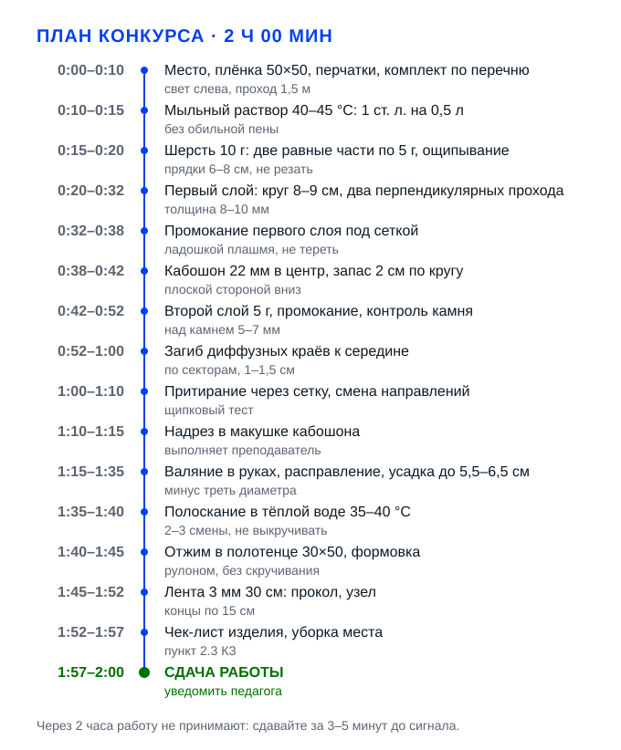
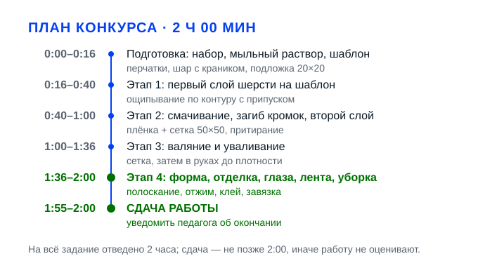
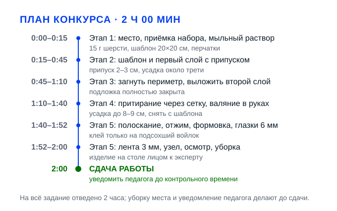

Мокрое валяние (ФВ)
Задания ниже — официальные файлы «Абилимпикс» (источник: abilympics-russia.ru), разложенные по категориям. Решения написаны по тексту задания, регламенту и критериям оценки; в них указано, что именно проверяет эксперт.
Школьник
14–16 лет, базовый уровень заданияВ официальном файле категории не разделены отдельными разделами — приводим задание целиком; различия по категориям смотрите в таблице модулей.
Пошаговое решение
За два часа по разделу 2.2 конкурсного задания школьникам нужно изготовить брелок с вваленным элементом — кабошоном 22 мм. Из перечня раздела 3 на одного участника выдаётся 10 г кардочесанной шерсти, атласная лента 3 мм длиной 30 см, одна столовая ложка жидкого мыла, пузырьковая плёнка и сетка-фатин 50×50 см, полотенце 30×50 см, синельная игла, ножницы, складной таз 10 л и чайник 0,5 л. Работа идёт по двенадцати шагам: раскладка первого слоя, укладка камня, второй слой, загиб диффузных краёв, притирание через сетку, надрез в макушке — его делает преподаватель, валяние в руках до готовности, полоскание, отжим, вставка ленты и узел. Исход решают три вещи: равные половины шерсти по 5 г, заготовка 8–9 см под усадку 30–40% и щипковый тест вместо догадок о готовности.

Задача 1. Организовать рабочее место и подготовить материалыПункт 2.2 КЗ · этапы 1–2 · первые 15 минут из 120
Работа начинается не с шерсти, а со стола. По разделу 4 конкурсного задания место участника — это 3000×1900 мм с проходом между местами не меньше 1,5 м, свет должен падать слева, а у участников с нарушением зрения освещённость не ниже 300 люкс. В эти пятнадцать минут вы застилаете поверхность, надеваете перчатки, сверяете комплект из перечня раздела 3 и варите мыльный раствор нужной температуры. Всё, что не подготовлено сейчас, придётся делать в середине раскладки мокрыми руками, а это почти всегда потеря формы и лишние пять минут из двух часов.
Действие 1.1. Осмотреть место и застелить стол
Шаг 1.1.1
Подойдя к столу, первые полминуты ничего не раскладываем: смотрим, откуда падает свет, свободен ли проход и куда можно поставить таз. Свет должен идти слева или спереди — так тень от вашей правой руки не ложится на заготовку, когда вы работаете ладонью. Садимся прямо, касаясь спины стула, и проверяем расстояние от глаз до стола: по разделу 5 оно должно быть не меньше 35–40 см, иначе мелкие прядки и граница промокания читаются плохо, а шея к концу второго часа начинает ныть и точность движений падает.
Организация места — первый этап, названный в таблице 2.2, и он идёт первым не формально: раскладка шерсти требует ровной горизонтальной поверхности и предсказуемого света, потому что первые полчаса вы работаете с тонким слоем волокон, где ошибка в один сантиметр видна на просвет. Если свет падает сзади или справа, вы всё время работаете в собственной тени, а тень полностью скрывает, где слой прозрачный, а где прядки уже в два ряда.
Убедитесь по трём признакам: тень от руки не падает на рабочую зону, до стула соседа и до прохода можно пройти, не задевая ничего, и на столе нет чужих предметов. Если лампа стоит так, что светит в глаза, передвиньте её до начала работы — потом, с мыльными руками, вы этого делать не будете.
Самая частая ошибка — сразу сесть и начать щипать шерсть, а через четверть часа обнаружить, что работа идёт в собственной тени. Вторая ошибка — поставить короб с материалами в проход между местами: по разделу 5 это нарушение требований охраны труда, и его фиксируют без всяких измерений, а вам придётся обходить его каждый раз, когда нужен ножницы.
Эксперт обходит места до старта и смотрит именно на это: освещение, свободный проход, порядок на столе. Всё фиксируется до первого движения, поэтому исправить потом уже нельзя.
Шаг 1.1.2
Кладём на стол воздушно-пузырьковую плёнку 50×50 см пузырями вверх. Пузыри — это рабочая поверхность: они дают трение, которое и валяет шерсть, поэтому гладкой стороной вверх плёнку не переворачиваем. Располагаем её так, чтобы ближний край был на 5–7 см от кромки стола, а рабочая зона оказалась прямо перед вами, в пределах вытянутой руки: тянуться за заготовкой мокрыми руками нельзя, вы её сдвинете и получите перекос слоя. Справа ставим пластиковый короб 10 л с крышкой — в него уходят обрезки, комочки и использованные салфетки.
Плёнка должна оставаться чистой и сухой до первого промокания: на мокрой или засаленной поверхности шерсть начинает скользить, и вместо валяния вы получаете перемещение слоёв относительно друг друга. Короб справа нужен по разделу 5 — излишки и кусочки материалов убирают со стола в коробку, а не смахивают на пол, и это отдельно прописано в требованиях охраны труда.
Плёнка лежит ровно, без складок и волн, пузыри смотрят вверх, углы не свисают со стола. Проведите по ней ладонью: она не скользит и не сдвигается. Короб стоит справа, в него можно бросить обрывок, не вставая.
Разложить шерсть прямо на голом столе — прядки прилипают к лакированной поверхности и рвутся при первой же попытке промокнуть. Вторая ошибка — положить плёнку гладкой стороной вверх: трение минимальное, притирание не работает, и вы будете тереть впустую десять минут вместо трёх.
Эксперт смотрит на подготовку поверхности как на часть организации: плёнка правильной стороной, рабочая зона в пределах досягаемости, отходы в коробе.
Шаг 1.1.3
Моем руки с мылом, вытираем насухо и надеваем полиэтиленовые перчатки размера L — они идут в комплекте, и надеть их нужно до того, как вы возьмёте шерсть, потому что шерсть мгновенно впитывает влагу и жир с кожи. Волосы убираем под резинку или заколку, часы, кольца и браслеты снимаем: под ними остаётся мыло, а камень или звено оставляет зацепки на тонком слое. Проверяем перчатки на разрывы между пальцами и у запястья, при необходимости меняем на вторую пару — их в комплекте одна, поэтому порванную сразу сообщаем педагогу.
Перчатки в этой компетенции не украшение: мыльный раствор щелочной, за два часа без перчаток кожа между пальцами размокает и начинает саднивать, а мокрыми скользкими руками вы не удержите ни прядку, ни кабошон. Кроме того, шерсть с рук переносится на изделие неравномерно — на поверхности остаются жирные следы, которые после сушки читаются как тёмные пятна, и это уже вопрос качества отделки.
Перчатки сидят по руке, не болтаются на пальцах, при сжатии кулака не лопаются. Волосы не выбиваются ни спереди, ни сзади — попросите соседа или волонтёра посмотреть со спины. На руках нет украшений, ногти короткие.
Надеть перчатки после того, как разложили шерсть: сухие волокна цепляются за полиэтилен и вытягиваются за пальцами, слой съезжает. Вторая ошибка — работать в порванной перчатке, вода затекает внутрь, и рука скользит по заготовке без контроля нажима.
Эксперт проверяет готовность к работе с материалами до старта: перчатки, убранные волосы, отсутствие украшений. Замечания делаются один раз, дальше это идёт в оценку организации.
Действие 1.2. Сверить комплект по перечню
Шаг 1.2.1
Раскладываем перед собой весь перечень из раздела 3 и проходим по нему построчно: кардочесанная шерсть 10 г, кабошон 22 мм, атласная лента 3 мм длиной 30 см, жидкое мыло 1 столовая ложка, воздушно-пузырьковая плёнка 50×50 см, перчатки L, сетка-фатин 50×50 см, полотенце 30×50 см, ножницы с острыми концами, игла ручная синельная, складной таз 10 л, электрический чайник 0,5 л, пластиковый короб 10 л с крышкой и защёлками. Каждую позицию не просто находим, а откладываем в свою зону: шерсть слева, инструменты справа, кабошон и лента в отдельной плошке, чтобы не искать их в мыльной воде.
Перечень — единственный момент, когда недостающее можно получить без потери времени: замену после старта дают только через главного эксперта и только при уважительной причине. Проверка по списку занимает три минуты, а поиск пропавшей иглы в середине работы — десять, причём в самый неудачный момент, когда руки в мыле и изделие начало схватываться.
Все тринадцать позиций отмечены, ничего не осталось в коробке неразобранным. Отдельно проверьте, что лента действительно 30 см, а не обрезок, и что кабошон в упаковке один — по перечню он идёт в количестве 1 шт.
Начать раскладку, не сверив комплект: не хватает ленты или иглы, и выясняется это за десять минут до сдачи, когда изделие уже сваляно и полоскать его второй раз нельзя. Вторая ошибка — держать кабошон в общей куче, где он падает на пол и ловит на себя волокна и мусор.
Эксперт видит, работает участник по перечню или импровизирует. Аккуратно разложенный комплект — это ещё и скорость: всё нужное под рукой, ничего не ищется.
Шаг 1.2.2
Берём шерсть и оцениваем её качество: кардочес должен быть однородным, воздушным, без плотных комков, без растительных включений и без слипшихся от влаги мест. Разминаем в руках — волокна должны расходиться свободно, как вата, а не тянуться жгутом. Сразу делим 10 г на две части по 5 г: это будущие первый и второй слои, и делить нужно до раскладки, потому что на глаз во время работы вторая половина всегда кажется больше, и на верхний слой уходит больше шерсти, чем на нижний.
Ровное деление задаёт ровную толщину: если первый слой тоньше второго, изделие поведёт при сушке, а кабошон окажется смещён к одной стороне. Кардочес хорошего качества валяется за 15–20 минут, а шерсть с комками приходится уваливать вдвое дольше, и всё это время слой норовит расползтись по краям.
Две кучки примерно равны по объёму и на ощупь одинаково пышные. Если есть весы, проверьте: 5 и 5 г. Комков нет, прядки легко расслаиваются пальцами, мусор выбран. Сожмите каждую кучку в кулаке и отпустите: она должна расправиться, а не остаться комком.
Отделить «на глаз», не распушив шерсть: половина кажется меньшей, вы добавляете, и в итоге на изделие идёт 12–13 г при заготовке в 8–9 см — получается толстый войлок, который невозможно увалять до плотности за оставшееся время. Вторая ошибка — брать шерсть мокрыми руками, волокна сразу сваливаются в комки.
Эксперт смотрит на подготовку материала: однородность, отсутствие комков и мусора, разумный расход. Из 10 г при такой заготовке должно получиться именно то, что получилось.
Шаг 1.2.3
Проверяем кабошон 22 мм: он должен быть гладким, без сколов и трещин по кромке, с плоской обратной стороной, которая ляжет на шерсть. Кладём его на ладонь и смотрим на просвет — трещина, которую не видно снаружи, всплывёт после валяния, потому что кабошон сжимают ладонями. Ленту 3 мм отмеряем 30 см и обрезаем ножницами наискось, а не под прямым углом: косой срез легче проходит в ушко синельной иглы. Ножницы проверяем на пробном кусочке — они должны резать, а не жевать, иначе срез ленты будет осыпаться.
Кабошон — единственный жёсткий элемент изделия, и он не подлежит замене: если он треснет во время уваливания, весь брелок придётся переделывать, а времени на вторую заготовку в двух часах нет. Косой срез ленты — мелочь, которая экономит две минуты на сборке: распущенные концы не проходят в ушко, и вы тратите время на скручивание кончика пальцами.
Кабошон целый, кромка ровная, диаметр 22 мм подтверждается линейкой. Лента отмерена 30 см, срез косой, концы не осыпаются при протягивании между пальцами. Ножницы режут бумагу без зажёвывания. Проверьте также, что в комплекте одна пара перчаток нужного размера и упаковка не вскрыта.
Взять кабошон, не осмотрев кромку: микротрещина по краю расходится при первом же сжатии в ладонях, и вместо ровного купола получается деталь с зазубриной, которую уже ничем не исправить. Вторая ошибка — обрезать ленту прямо и коротко, оставив 25 см: после узла кончики окажутся разной длины.
Эксперт осматривает кабошон и ленту на этапе подготовки и отмечает дефекты до начала работы — после валяния претензию к материалам не принимают. Отдельно смотрит, не помята ли лента и нет ли на кромке камня скола.
Действие 1.3. Приготовить мыльный раствор
Шаг 1.3.1
Нагреваем воду в электрическом чайнике 0,5 л до 40–45 °C. Это не кипяток: при 45 °C рука в перчатке спокойно терпит воду, а при 60 °C и выше шерсть начинает садиться рывком, ещё до того, как вы её увалили, и заготовка теряет заданный размер. Проверяем температуру тыльной стороной запястья или, если на месте есть термометр, им: ощущение «горячо, но терпимо» — это как раз нужные 40–45 °C. Чайник не наполняем до края, оставляем два сантиметра, чтобы вода не выплёскивалась на стол при наклоне.
Температура — главный физический параметр мокрого валяния: тёплая вода раскрывает чешуйки волокон, и они цепляются друг за друга. Холодная вода замедляет процесс в два-три раза, крутой кипяток даёт неравномерную усадку, из-за которой края идут волной, а кабошон выдавливается наружу. Плюс чайник 0,5 л — это ровно тот объём, на который рассчитана одна столовая ложка мыла из перечня.
Вода тёплая на ощупь, но не обжигает запястье, пар над носиком идёт слабый. Объём — примерно 0,5 л, уровень виден по метке. Чайник стоит на столе устойчиво, шнур не тянется через рабочую зону. Если термометра нет, капните воду на внутреннюю сторону запястья: должно быть тепло, но не горячо.
Залить кипяток «чтобы быстрее валялось»: шерсть садится неравномерно, изделие ведёт, а руки в перчатках от горячей воды размокают, и вы теряете чувствительность — не понимаете, где слой уже схватился. Вторая ошибка — греть воду, не отойдя от разложенной шерсти: брызги летят на сухие прядки и прихватывают их раньше времени.
Эксперт обращает внимание на соблюдение технологии и техники безопасности: работа с горячей водой, устойчивая посуда, отсутствие беспорядка на столе. Он смотрит и на то, как участник держит чайник.
Шаг 1.3.2
Отмеряем одну столовую ложку жидкого мыла и разводим её в тёплой воде, помешивая ложкой до полного растворения — примерно 20–30 секунд. Раствор должен получиться слегка мылким на ощупь, с небольшим количеством пены, но не густым. Если пены слишком много, даём ей осесть минуту или снимаем ложкой: пена мешает видеть, промокла ли шерсть, и создаёт ощущение, что воды достаточно, когда её ещё нет. Готовый раствор переливаем в удобную посуду — ковш или стакан, из которого можно лить тонкой струёй.
Концентрация влияет на скольжение: слишком слабый раствор не даёт волокнам двигаться, и притирание превращается в размазывание; слишком мыльный — шерсть скользит по плёнке и не валяется вовсе. Одна ложка на 0,5 л — это как раз рабочая пропорция, при которой слой схватывается за 6–8 минут притирания, а не за двадцать.
Раствор однородный, без хлопьев и комков мыла на дне, пены немного. На ощупь — скользкий, но не густой. Из посуды льётся ровной струёй, не выплёскивается вся сразу. Опустите в раствор палец: он должен покрываться мыльной плёнкой, а не комками неразведённого мыла.
Развести мыло холодной водой, потому что «так быстрее»: мыло не растворяется полностью, хлопья оседают на волокнах и после сушки видны белыми точками на лицевой стороне. Вторая ошибка — налить мыло прямо на шерсть: локальный переизбыток мыла даёт пятно, которое потом не вымывается до конца.
Эксперт смотрит на приготовление раствора как на часть технологии: пропорция, температура, отсутствие мыла прямо на волокнах. Густой раствор или хлопья неразведённого мыла он отмечает как ошибку технологии.
Шаг 1.3.3
Заранее готовим всё для финального полоскания, потому что делать это придётся в темпе: в складной таз 10 л наливаем тёплую воду 35–40 °C примерно на треть, рядом кладём махровое полотенце 30×50 см, разложенное в один слой. В чайнике оставляем немного горячей воды, чтобы подогреть остывшую — за час с небольшим вода в тазу остывает, а полоскать в холодной нельзя. Таз ставим справа от рабочего места, но не в проход: по разделу 4 ширина прохода между местами 1,5 м, и таз не должен её съедать.
Полоскание занимает минуты, и если воду и полотенце искать в этот момент, изделие лежит мокрым и остывает, а остывшая шерсть хуже отдаёт мыло. Готовая заранее ёмкость — это ещё и страховка от главной ошибки финала: полоскания в холодной воде, после которого изделие резко садится и теряет форму, которую вы лепили два часа.
Таз стоит устойчиво, воды примерно треть объёма, температура проверена запястьем. Полотенце лежит рядом, чистое и сухое. Проход остаётся свободным — вы проходите к тазу, не задевая стол соседа. Проверьте, что до таза можно дойти, не переступая через провода, короб и чужие сумки.
Оставить полоскание «на потом» и в конце налить воду из-под крана: она холодная, шерсть от перепада садится рывком, и готовое изделие уменьшается на глазах, а кабошон начинает выпирать. Вторая ошибка — поставить таз в проход: эксперт фиксирует нарушение требований охраны труда.
Эксперт смотрит, продуман ли финал: посуда для полоскания, полотенце, свободный проход. Это видно до того, как вы вообще начали валять. Готовность к финалу видна по тому, стоит ли всё нужное на своих местах.
Задача 2. Подготовить шерсть и выложить первый слойПункт 2.3 КЗ · шаги 1–2 · примерно 20 минут
Здесь решается геометрия будущего брелока. По шагу 1 задания вы берёте два кусочка кардочесанной шерсти нужной толщины и придаёте им одинаковую округлую форму ощипыванием, по шагу 2 — кладёте один кусочек на пузырьковую плёнку, накрываете сеткой, хорошо промокаете мыльным раствором и сетку снимаете. Ключевых решений три: равные половины, раскладка в двух перпендикулярных направлениях и заготовка на треть больше готового изделия, потому что шерсть сядет. Ошибка в размере на этом этапе не исправляется ничем: изделие можно только переделать, а второй попытки в двух часах нет.
Действие 2.1. Разделить шерсть и распушить волокна
Шаг 2.1.1
Кладём перед собой всю шерсть и разрываем её на две части по 5 г. Тянем не резко, а медленно разводя руки: кардочес расходится по волокнам, и место разрыва остаётся пушистым. Сравниваем половины на ладони — они должны занимать примерно одинаковый объём; если одна заметно пышнее, отщипываем от неё прядку и перекладываем в другую. По шагу 1 задания кусочки должны быть одинаковой формы, и это не про красоту: из равных половин получается ровная толщина по всей площади.
Нижний слой держит кабошон, верхний его закрывает, и если верхний окажется толще, купол уйдёт вверх, а края останутся тонкими — именно по краям изделие и рвётся при носке. Равные половины дают равномерную усадку: заготовка садится на 30–40% со всех сторон одинаково, поэтому форма остаётся круглой, а не яйцевидной.
Половины лежат рядом, одинаковые по объёму и пушистости, каждая примерно 5 г. Разрыв ровный, без жгута посередине. Если положить одну на другую, они накрывают друг друга почти полностью. Взвесьте обе части, если на площадке есть весы: расхождение больше грамма — уже перекос толщины.
Разделить шерсть «на глаз», не распушив: комок кажется меньше, вы откладываете больше, и на верхний слой уходит 6–7 г вместо 5. В результате заготовка получается толще запланированной, уваливать её нужно дольше, и к концу второго часа внутри остаётся рыхлая середина.
Эксперт оценивает подготовку материала и рациональность расхода: из 10 г должно получиться изделие заявленного размера, а не комок войлока. Расхождение в весе половин он замечает по толщине готового изделия.
Шаг 2.1.2
Ощипываем шерсть на прядки длиной 6–8 см и шириной 5–7 см. Техника такая: зажимаем пучок у основания одной рукой, второй захватываем кончики и отрываем короткими рывками поперёк направления волокон, оставляя в руке облачко. Ножницами шерсть не режем — резаный край не валяется, потому что у волокна нет чешуйчатого кончика, и на месте среза остаётся видимая проплешина, которая после уваливания превращается в шов.
Раскладка идёт только из таких облачков: тонкие прядки ложатся внахлёст и перекрывают друг друга, а целый кусок шерсти ложится бугром. Чем однороднее прядки, тем ровнее слой, а ровный слой — это равномерная усадка и гладкая поверхность без «волн», которые на брелоке видны сразу, потому что он маленький и рассматривается близко.
В руке облачко просвечивает на пальцах, прядки одинаковой плотности, без плотных жгутов внутри. Оторванный край пушистый и мягкий. На столе нет обрезков, которые обычно остаются, если шерсть резали. Попробуйте скатать прядку в ладони: она должна рассыпаться, а не сбиваться в плотный шнур.
Нарвать крупные куски и разложить их целиком: слой получается с буграми, промокание идёт неравномерно, и в толстых местах остаётся сухая середина. Вторая ошибка — резать шерсть ножницами «чтобы быстрее»: резаные волокна не сваливаются, и на изделии остаются линии стыков.
Эксперт смотрит на технику ощипывания: правильно ли участник держит пучок, получаются ли тонкие прядки или он выдирает шерсть кусками. Куски, выдранные целиком, заметны по буграм на слое ещё до воды.
Шаг 2.1.3
Раскладываем готовые прядки двумя кучками — под первый и второй слой, и в каждой выбираем всё лишнее: плотные комочки, слипшиеся места, растительные включения, обрезанные кончики. Комочек размером с горошину, оставленный в слое, после валяния читается как уплотнение под гладкой поверхностью, а растительная ость торчит наружу тонкой тёмной щепкой. Если попалась прядь с явным утолщением, её лучше распушить пальцами, чем оставить.
Войлок уплотняется в 2–3 раза, и всё, что лежало внутри, проявляется на поверхности. Убрать комочек сейчас — три секунды, убрать его после уваливания — невозможно: он уже внутри, и вытащить его можно только пинцетом, оставив дырку. Чистота материала напрямую влияет на оценку отделки, где смотрят однородность поверхности.
Кучки распушены, комков нет — проверяйте пальцами, разминая каждую прядку. Мусор выбран. Прядки лежат свободно, не сбиты в плотный холм. Разомните каждую кучку между ладонями: под пальцами не должно быть плотных зёрен и жёстких волосков. Мусор уходит в короб, а не на плёнку.
Оставить в шерсти мелкий мусор, решив, что он «заваляется»: он не заваливается, а выходит на поверхность, и на готовом брелоке видно тёмные точки. Вторая ошибка — держать подготовленные прядки на краю стола, откуда они падают на пол и собирают пыль.
Эксперт осматривает подготовленный материал до раскладки. Чистота шерсти — часть критерия качества поверхности. Он смотрит и на то, куда участник складывает мусор: на плёнку или в короб.
Действие 2.2. Выложить первый слой на плёнку
Шаг 2.2.1
Определяем размер заготовки: готовый брелок должен получиться диаметром примерно 5,5–6,5 см, а раскладывать нужно круг 8–9 см. Считаем просто: мокрое валяние даёт усадку 30–40%, и маленькое изделие садится ближе к верхней границе, потому что площадь небольшая и трение сильнее. Отмечаем границу прямо на плёнке — можно пальцем по пузырям, можно ниткой: сдвинуть раскладку на сантиметр в сторону потом будет уже нельзя, а несимметричная заготовка после усадки станет откровенно кривой.
Размер — та самая цифра, которую эксперт проверит линейкой на сдаче, и заложить её нужно до первого волокна. Усадку нельзя «отменить» более осторожным валянием: она задана самой природой шерсти, и единственный способ получить нужный диаметр — заложить запас. Кроме того, кабошон 22 мм должен оказаться в середине заготовки с запасом по 2 см с каждой стороны, иначе шерсть вокруг него будет тонкой.
Граница видна и совпадает по ширине с линейкой: 8–9 см. Заготовка круглая, а не овальная. От центра до края в любую сторону одинаково. Кабошон, приложенный к центру, оставляет вокруг себя не меньше 2 см шерсти.
Разложить круг под готовый размер 5–6 см: после усадки получится брелок 3,5–4 см, и кабошон 22 мм займёт почти всю площадь, а шерсть вокруг станет тоньше миллиметра и прорвётся на первом же рывке за ленту. Вторая ошибка — раскладывать овал, рассчитывая «подровнять при формовке»: подровнять можно край, но не смещённый центр.
Эксперт проверяет размер заготовки на этапе раскладки, а затем сверяет готовое изделие с линейкой. Именно здесь видно, понимает ли участник, что шерсть садится.
Шаг 2.2.2
Первый проход укладываем горизонтально: берём облачко, придерживаем за кончик и кладём на плёнку так, чтобы прядки ложились в одном направлении, а каждая следующая перекрывала предыдущую на треть или половину ширины. Края прядок не должны свисать за отмеченную границу — их потом нечем будет подхватить. Движение руки идёт слева направо по всей ширине будущего круга, ряд за рядом, с одинаковым нажимом: прядки укладываются, а не вдавливаются в плёнку.
Первый проход задаёт направление, второй пойдёт поперёк — и именно перпендикулярность даёт прочность: волокна, ориентированные в разные стороны, при валянии переплетаются и держат форму во всех направлениях. Если все прядки лежат в одну сторону, изделие валяется полосами и легко расходится по линии между ними, а на краю появляются разрывы.
Слой просвечивает, но не имеет дыр: на просвет не видно плёнки между прядками. Толщина примерно одинаковая по всей площади, край ровный и пушистый, без свисающих клочьев. Поднимите заготовку на ладони: если прядки разъезжаются, слой слишком тонкий — добавьте ещё один проход.
Выложить несколько крупных прядок в один слой, оставив промежутки: при промокании вода проходит сквозь щели, и слой расползается, а после уваливания на этих местах остаются тонкие зоны. Вторая ошибка — укладывать прядки, натягивая их: натянутое волокно при смачивании сокращается и стягивает слой к центру.
Эксперт смотрит на раскладку в процессе: ровность, направление волокон, отсутствие пропусков. Раскладка — первый этап из пяти в таблице 2.2, и её результат — основа всего изделия.
Шаг 2.2.3
Второй проход делаем перпендикулярно первому — вертикально, сверху вниз, перекрывая те промежутки, которые остались. Всего на первый слой уходит три-четыре прохода: например, два горизонтальных и два вертикальных. Толщина сухого слоя в итоге получается 8–10 мм: это примерно толщина двух сложенных вместе пальцев, и на глаз видно, что круг получился ровным «блинчиком», а не холмиком в середине.
Три-четыре прохода при такой толщине — это тот минимум, при котором кабошон 22 мм не проступает через шерсть и не выпирает после уваливания. Слишком тонкий слой даёт «лысину» над камнем, слишком толстый не уваливается за отведённые двадцать минут и остаётся рыхлым внутри: изделие выглядит готовым, но при сжатии пружинит.
Слой одинаковой толщины по всей площади, на просвет не просвечивает, край плотный. Проведите ладонью: нет бугров и ям, поверхность ровная. Толщина по краю и в середине совпадает. Сравните толщину у края и в центре на просвет: разницы быть не должно, иначе центр стянется сильнее.
Навалить шерсть горкой в центре: слой в середине вдвое толще, чем по краям, и при уваливании центр садится сильнее — изделие стягивается в «таблетку» с утолщением, а края остаются тонкими и рвутся. Вторая ошибка — не сделать второй перпендикулярный проход, ограничившись одним направлением.
Эксперт оценивает равномерность раскладки и толщину: под ладонью не должно быть ни провалов, ни бугров. Это видно и на сухом слое, и потом на готовом изделии.
Шаг 2.2.4
Проверяем край: он должен быть пушистым и рыхлым, без уплотнённых «косичек». Если по периметру лежат отдельные длинные волокна, выходящие за круг на 2–3 см, их не обрезаем, а аккуратно подворачиваем внутрь — они пойдут в загиб диффузных краёв на шаге 5 задания. Слегка прижимаем ладонью весь слой, чтобы прядки слегка сцепились между собой и не разлетались от первого движения воздуха, но не притираем: сцепление должно произойти в воде, а не до неё.
Диффузные края — не дефект, а рабочий материал: именно они заворачиваются к середине и создают плотную кромку, которая держит кабошон. Если их обрезать, кромка получится тонкой, а её потом нужно будет наращивать, приваливая отдельные прядки, — а это лишние десять минут и неровный контур.
По периметру нет обрезанных концов, длинные волокна подвёрнуты. Слой держится на плёнке при лёгком наклоне, но не прилип к ней. Край круга ровный, без ступенек. Подденьте край пальцем: он должен быть рыхлым и пушистым, а не плотной косичкой из волокон.
Обрезать свисающие волокна ножницами «чтобы было аккуратно»: резаный край не валяется, кромка получается рыхлой и осыпается, а на готовом изделии виден рваный контур. Вторая ошибка — притереть слой насухо, до воды: сухие волокна не сцепляются, они просто сваливаются в комки.
Эксперт смотрит на подготовку кромки: подвёрнуты ли диффузные волокна, ровный ли контур. Край оценивается и в готовом изделии, и по нему видно, как шла работа.
Действие 2.3. Промочить первый слой под сеткой
Шаг 2.3.1
Накрываем раскладку сеткой-фатином 50×50 см. Кладём свободно, не натягивая и не подгибая края: натянутая сетка стягивает слой к центру, а подвёрнутый край сетки оставляет полосу, куда не проходит вода. Сетка должна лежать на шерсти, повторяя её рельеф, и закрывать заготовку с запасом со всех сторон — минимум по 5 см за край круга, иначе при промокании вы заденете шерсть рукой и сдвинете прядки.
По шагу 2 задания сетка нужна, чтобы вода дошла до всего слоя, а прядки не разъехались под струёй. Сетка распределяет поток и удерживает волокна на месте: без неё вода пробивает в шерсти канавки, и вместо равномерной пропитки получаются промытые дорожки, вокруг которых слой остаётся сухим.
Сетка лежит ровно, без складок и натяжения, ячейки видны, шерсть под ней не сдвинута. По краям сетка выходит за границу круга на 5–7 см со всех сторон. Проведите ладонью по сетке: она должна лежать как второй слой, а не ездить по шерсти.
Натянуть сетку, как на пяльцы: край заготовки стягивается внутрь, и после промокания круг получается меньше задуманного, а слой по периметру — плотнее, чем в центре. Вторая ошибка — положить сетку только на середину, оставив края открытыми: они размокают неравномерно и расползаются.
Эксперт смотрит, как участник обращается с сеткой: аккуратно ли накрывает, не тянет ли, не сдвигает ли слой. Это часть культуры работы с материалом. Сетка, натянутая как на пяльцах, — заметная ошибка новичка.
Шаг 2.3.2
Поливаем раствор тонкой струёй по всей площади, начиная от центра и расходясь к краям, — на первый слой достаточно 30–40 мл из 0,5 л. Затем промокаем: кладём ладонь плашмя и прижимаем, не сдвигая, по всей площади, несколько раз, пока вода не впитается и не начнёт проступать сквозь сетку. По шагу 2 задания шерсть нужно хорошо промочить — это значит, что вода прошла на всю толщину, а не осталась на поверхности. Лишнюю воду, стоящую лужицей, собираем краем ладони или салфеткой.
Сухая середина — главная причина, по которой изделие не валяется: волокна внутри не получают воду, не раскрывают чешуйки и остаются рыхлыми, хотя снаружи всё выглядит мокрым. Промокание ладонью, а не растирание, нужно потому, что трение на этом этапе сдвигает ещё не схваченные прядки и разрушает раскладку, которую вы делали десять минут.
Шерсть потемнела и осела, сетка прилипла к ней, при нажатии ладонью вода не выступила фонтаном, а мягко проступила. Лужиц на плёнке нет. Поднимите угол сетки: шерсть под ним мокрая по всей толщине, а не только сверху.
Лить воду до тех пор, пока заготовка не поплывёт: избыток воды размывает слой, волокна расползаются, и граница круга теряется. Вторая ошибка — тереть шерсть ладонью через сетку на этом этапе: прядки сдвигаются, и вместо ровного круга получается бесформенное пятно.
Эксперт смотрит на промокание: прошла ли вода на всю толщину, нет ли сухих участков, не размыта ли раскладка. Это первый шаг, названный в задании, и его результат виден сразу.
Шаг 2.3.3
Снимаем сетку медленно, за один угол, придерживая шерсть второй рукой: поднимаем край на 2–3 см, даём воде стечь, затем ведём дальше. Если сетка прилипла, не дёргаем — сбрызгиваем её раствором и снимаем снова. После снятия проверяем поверхность: волокна должны лежать ровно, без «ёжика» из поднятых кончиков, а границы круга — сохраниться. Остатки воды убираем краем махрового полотенца, прикладывая его, а не вытирая.
Снятие сетки — момент, когда чаще всего портится уже сделанная работа: резкое движение поднимает волокна и стягивает слой к одному краю. Аккуратное снятие сохраняет и раскладку, и ровный край, который потом заворачивается в диффузную кромку. Убранная лишняя вода нужна для следующего шага: на мокром слое кабошон скользит, и его невозможно уложить точно в центр.
Поверхность ровная, без поднятых волосков, контур круга читается, вода не стоит на поверхности. Слой не прилип к сетке — на ней не осталось клочьев шерсти. Посмотрите на заготовку сбоку, на уровне стола: контур должен читаться как ровный круг.
Снять сетку одним рывком за край: верхний слой волокон уходит вместе с ней, на заготовке остаётся проплешина, которую придётся закрывать новой прядкой, и толщина становится неравномерной. Вторая ошибка — вытирать воду полотенцем, водя им по шерсти: трение сдвигает слой.
Эксперт наблюдает, сохранилась ли раскладка после промокания, и как участник обращается с заготовкой. Именно на этом переходе видно, есть ли у него навык работы с мокрой шерстью.
Задача 3. Уложить кабошон и закрыть вторым слоемПункт 2.3 КЗ · шаги 3–5 · примерно 20 минут
Центр композиции — кабошон 22 мм, и по заданию он кладётся в середину первого слоя, после чего накрывается второй подготовленной деталью, промокается под сеткой, а диффузные края загибаются к середине. Здесь три точки риска: кабошон сдвигается при накрытии, верхний слой оказывается толще нижнего, и загнутые края идут волной. Все три ошибки проявляются не сразу, а на валянии, когда исправлять уже поздно, поэтому двигаться нужно медленно и проверять положение камня после каждого действия.
Действие 3.1. Уложить кабошон в центр
Шаг 3.1.1
Берём кабошон и определяем лицевую сторону: у него одна сторона выпуклая и отполированная, вторая плоская или шероховатая. Выпуклой стороной вверх, плоской — на шерсть. Кладём точно в геометрический центр первого слоя, ориентируясь на отмеченную границу круга, а не «примерно посередине». Прижимаем на 2–3 секунды ладонью, чтобы кабошон слегка утопил волокна и перестал скользить по мокрой поверхности.
Положение камня задаёт симметрию всего изделия: при диаметре заготовки 8–9 см смещение на 5 мм после усадки превращается в заметный перекос, и брелок висит на ленте криво. Плоская сторона важна по той же причине, по которой её делают плоской — она даёт устойчивый контакт с шерстью; если положить камень выпуклостью вниз, он будет качаться и при уваливании провернётся.
Камень лежит в центре, расстояние от его кромки до края заготовки одинаково со всех сторон и составляет около 2 см. Он не скользит при лёгком нажатии. Выпуклая сторона смотрит вверх. Проверьте по линейке: центр камня совпадает с центром круга с точностью до 2–3 мм.
Положить кабошон на мокрый слой и сразу начать накрывать: он сдвигается на сантиметр в сторону, и вы этого не замечаете под шерстью — обнаружится это только после уваливания, когда исправить уже нельзя. Вторая ошибка — не прижать камень: он плавает по поверхности воды и уезжает при первом же движении ладони.
Эксперт проверяет положение декоративного элемента до накрытия вторым слоем — это единственный момент, когда его видно. Смещение фиксируется и переносится в оценку композиции.
Шаг 3.1.2
Проверяем запас шерсти вокруг камня: от кромки кабошона до края круга должно оставаться не меньше 2 см, то есть примерно ширина двух пальцев. Если запаса меньше, добираем прядки по периметру, подкладывая их под край, а не сверху — верхний слой должен остаться ровным. Заодно проверяем, что камень не лежит на самой границе круга, где шерсть тоньше всего.
Именно этот запас превращается в кромку, которая держит камень. При 22 мм камня и заготовке 8–9 см запас получается 2–3 см, и после усадки его хватает, чтобы кабошон сидел в шерстяной оправе, а не выпирал из неё. Тонкая кромка — самая частая причина, по которой готовый брелок теряет камень при носке.
Замерьте линейкой от кромки камня до края заготовки в четырёх точках: расхождение не больше 3–4 мм. Шерсть под краем камня не просвечивает настолько, чтобы видеть плёнку. Обведите камень пальцем по кругу: шерсть под ним должна быть плотной, а не проваливаться.
Оставить с одной стороны 5 мм шерсти, а с другой — 3 см: при уваливании тонкая сторона стянется первой, камень поведёт в её сторону, и он окажется почти на краю изделия. Вторая ошибка — наращивать шерсть поверх камня, вместо того чтобы подложить её под низ: сверху образуется бугор.
Эксперт оценивает композицию: камень в центре, запас шерсти достаточный и одинаковый со всех сторон. Это видно и до валяния, и в готовом изделии. Он измеряет запас линейкой, не полагаясь на глаз.
Шаг 3.1.3
Убираем лишнюю воду вокруг камня: прикладываем край полотенца или салфетку и даём впитаться, не проводя по шерсти. Если на поверхности камня остались капли раствора, промокаем их отдельной салфеткой — мыло на лицевой стороне после сушки даёт матовые разводы, которые на глянце видны отчётливо. Следим, чтобы под камень не подтекала вода: мокрый камень скользит сильнее.
Вода вокруг камня — это то, что мешает верхнему слою лечь ровно: прядки плавают и не ложатся плотно к кромке, оставляя воздушную полость, которая после уваливания становится впадиной. Мыльные разводы на кабошоне не смываются полосканием полностью, потому что камень гладкий и мыло держится на нём плёнкой.
Вокруг камня нет лужицы, поверхность матовая от влаги, но не блестит. На лицевой стороне камня нет капель и разводов. Камень держится на месте при наклоне заготовки. Наклоните плёнку на ладонь — камень не должен съезжать в сторону и сдвигать шерсть.
Оставить воду «она впитается»: верхний слой ложится на воду и при промокании сползает с камня, открывая его край, а вы получите «лысину» на самом видном месте. Вторая ошибка — тереть камень полотенцем: ворс цепляется за кромку и оставляет волоски, которые потом придётся выбирать пинцетом.
Эксперт смотрит на аккуратность работы с декоративным элементом. Чистый камень без разводов — часть оценки отделки. Разводы на камне он видит сразу, потому что камень блестит.
Действие 3.2. Накрыть вторым слоем и промочить
Шаг 3.2.1
Берём вторую половину шерсти — те же 5 г, что отложили в начале, — и раскладываем её прядками поперёк направления волокон нижнего слоя. Начинаем от края и идём к центру, пока не накроем камень полностью; над камнем прядки укладываем особенно тонко, разводя их веером от середины. Каждая прядка перекрывает соседнюю на треть, концы выходят за край нижнего слоя на 1–2 см — это будущий загиб.
Перпендикулярная раскладка верхнего слоя — то, что делает войлок прочным на разрыв: волокна двух слоёв переплетаются крест-накрест, и изделие держит форму. Тонкая раскладка над камнем нужна, чтобы не получился толстый купол: чем больше шерсти лежит над камнем, тем сильнее она садится и тем выше поднимается горб, а кромка вокруг остаётся низкой.
Камень полностью закрыт, шерсти над ним видно не больше, чем вокруг. На поверхности нет просветов до нижнего слоя. Концы прядок по периметру выходят за границу на 1–2 см, но не свисают длинными космами.
Накрыть камень толстым слоем «чтобы не просвечивал»: над камнем оказывается 8–10 мм шерсти, после уваливания купол поднимается на сантиметр, и брелок превращается в бесформенную лепёшку с бугром. Вторая ошибка — раскладывать верхний слой в том же направлении, что и нижний: слои не переплетаются, изделие расходится по линии стыка.
Эксперт смотрит на направление раскладки второго слоя и на толщину над камнем. Это ключевой момент всей композиции — по нему видно, понимает ли участник, зачем нужен второй слой.
Шаг 3.2.2
Проверяем толщину над кабошоном на ощупь: прикладываем ладонь — под ней должен чувствоваться камень, но не острым бугром, а мягким возвышением, и слой шерсти над ним примерно 5–7 мм. По краям толщина должна быть такой же, как в центре, без «обрыва» на границе круга. Если над камнем получилось толще, аккуратно снимаем лишние прядки сверху, не разрушая раскладку; если тоньше — добавляем облачко и разравниваем его веером.
Толщина над камнем определяет, насколько выраженным будет рельеф: при 5–7 мм камень читается как мягкий купол, а при 10 и больше — как бесформенный нарост. Ровная толщина по краям нужна для предсказуемой усадки: тонкий край садится быстрее толстого, и круг стягивается в овал.
На ощупь камень угадывается, но не выпирает углом; толщина по краю и над камнем одинаковая. На просвет слой плотный, без тонких зон. Прядки лежат ровно, без бугров. Сожмите слой над камнем двумя пальцами: он должен быть мягким, но не проваливаться до камня.
Оставить над камнем тонкий слой из экономии: после уваливания камень проступает сквозь шерсть, его кромка видна как резкая ступенька, а вокруг появляется кольцо более плотного войлока — визуально это читается как брак. Вторая ошибка — снимать лишнюю шерсть, сдвигая весь слой: раскладка рушится.
Эксперт прощупывает заготовку до промокания и оценивает рельеф. Толщина над декоративным элементом — один из главных критериев качества. Он просит участника показать толщину над камнем пальцами.
Шаг 3.2.3
Накрываем сеткой, поливаем раствором тонкой струёй, начиная от краёв и идя к центру, и промокаем ладонью плашмя, не сдвигая. На второй слой уходит ещё 30–40 мл. Промокаем тщательнее, чем первый раз: здесь между слоями остаётся воздух, и воде нужно пройти через оба слоя до плёнки. Если вода не уходит, а стоит сверху, значит, слой слишком плотный — помогаем, прижимая ладонью чуть сильнее в разных точках.
По шагу 4 задания второй слой накрывается сеткой и хорошо промокается — от этого зависит, начнут ли слои сцепляться вообще. Воздух между слоями — главный враг: сухие волокна верхнего слоя не контактируют с нижними, и при притирании слой скользит по слою, не сваливаясь. Вода вытесняет воздух и сводит волокна вместе.
Вода прошла насквозь: заготовка потемнела равномерно, сетка прилипла. Лужиц нет, при нажатии вода не брызжет. Камень под шерстью не прощупывается как отдельная скользкая деталь — слой лежит на нём плотно.
Полить сверху много воды, чтобы «наверняка промокло»: слой всплывает, прядки расходятся, камень едет в сторону. Вторая ошибка — промочить только центр, забыв про края: край остаётся сухим, и при загибе диффузных волокон они не ложатся, а топорщатся.
Эксперт наблюдает за промоканием второго слоя: равномерность, отсутствие сухих участков, сохранение формы. Здесь видно, чувствует ли участник материал руками.
Шаг 3.2.4
Не снимая сетку, проверяем положение кабошона: нащупываем его через сетку пальцами и убеждаемся, что он в центре и не провернулся. Если камень сместился, аккуратно подталкиваем его через шерсть к центру, придерживая слой второй рукой, — на мокром слое это ещё возможно. Снимаем сетку медленно, за угол, придерживая заготовку, и сразу прижимаем край ладонью, чтобы он не поднялся вместе с сеткой.
Камень — единственный элемент, который нельзя поправить на следующих этапах: после притирания он зафиксирован намертво. Проверка через сетку не нарушает раскладку, а даёт точную информацию на ощупь. Медленное снятие сетки сохраняет поверхность: рывок поднимает волокна, и на камне образуется «ёжик» из шерсти, который потом видно на готовом изделии.
Камень в центре, расстояние до края одинаковое. После снятия сетки поверхность ровная, волокна не подняты, камень угадывается как мягкий купол. На сетке не осталось клочьев. Сравните расстояние от камня до края с четырёх сторон: разница больше 3 мм — поправьте.
Проверить положение камня только после притирания: к этому моменту он уже зафиксирован в неправильном месте, и единственный выход — переделывать заготовку, на что в двух часах нет времени. Вторая ошибка — снимать сетку, потянув её вверх: вместе с ней поднимается верхний слой, и камень оголяется.
Эксперт проверяет положение камня после снятия сетки — это последняя точка, где смещение можно заметить и исправить. Смещение камня после снятия сетки он считает уже грубой ошибкой.
Действие 3.3. Загнуть диффузные края к середине
Шаг 3.3.1
Собираем пальцами волокна, выходящие за границу круга, и заворачиваем их на верхний слой, к центру, на 1–1,5 см. Работаем по секторам: начиная с того, что ближе к вам, аккуратно подхватываем пушистый край и укладываем его плашмя, разглаживая подушечками пальцев. Не сминаем волокна в шнурок и не тянем их — они должны лечь тонким слоем поверх раскладки, перекрывая границу между слоями.
По шагу 5 задания диффузные края загибаются к середине — это то, что закрывает стык слоёв и создаёт плотную кромку. Загнутый край, перекрывший границу, при валянии сваливается с обоими слоями и образует единое полотно; незагнутый край остаётся открытым, и после усадки он выглядит как бахрома по периметру, а кромка получается рыхлой.
Край загнут по всему периметру, граница круга читается как аккуратная кромка, а не как обрыв слоя. Загиб лежит плоско, без утолщений. Ширина загиба примерно одинаковая по кругу. Проверьте, что под загнутым краем нет участков, где видна граница между слоями.
Загнуть край толстым валиком: по периметру образуется утолщение, которое при уваливании садится сильнее остального, и изделие стягивается в «чашу» с бортиком. Вторая ошибка — завернуть только часть края, оставив участки открытыми: там начнётся разрыв.
Эксперт смотрит на кромку: загнута ли она по всему периметру, ровная ли ширина загиба. Кромка — один из первых признаков аккуратной работы. Он смотрит на кромку сбоку, на уровне стола.
Шаг 3.3.2
Загибаем последовательно, сектор за сектором, и каждый сектор сразу разглаживаем ладонью от края к центру. Если волокон слишком много и на краю образуется плотная косичка, отщипываем лишнее — лучше убрать сейчас, чем получить на готовом изделии неровный контур. Дойдя до исходной точки, проходим круг второй раз, чтобы выровнять толщину кромки и убрать случайные бугры.
Второй проход по кругу — это выравнивание: первый раз вы торопитесь закрыть периметр и кладёте неравномерно, второй раз видно, где получилось толще. Ровная кромка садится равномерно, а изделие остаётся круглым. Бугры на кромке при уваливании превращаются в фестоны по краю, которые невозможно расправить.
Кромка одинаковой толщины, контур ровный и симметричный. Проведите пальцем по кругу: нет ощутимых утолщений и провалов. Загиб не поднимается, если отпустить. Отойдите на шаг и посмотрите на заготовку сверху: контур должен быть круглым, без фестонов.
Загибать край в один приём, наспех: одна сторона получается вдвое толще, и после уваливания изделие перекашивается в сторону тонкой части. Вторая ошибка — приглаживать загиб, нажимая слишком сильно: волокна сваливаются в комки ещё до воды и потом не расправляются.
Эксперт осматривает кромку на этом этапе и в готовом изделии. Ровный контур — то, что отличает работу школьника высокого уровня. Фестоны по краю он отмечает как неровный загиб.
Шаг 3.3.3
Сбрызгиваем загнутые края раствором из ладони или ложки — буквально по несколько капель на сектор — и прижимаем плашмя, чтобы загиб прилип к верхнему слою. Не поливаем, а именно увлажняем: лишняя вода размывает тонкие волокна загиба. Затем проходимся ладонью по всему периметру с лёгким нажимом, чтобы кромка легла плотно и не топорщилась. Работаем быстро, пока кромка не подсохла.
Подсохший загнутый край не сцепляется с основным слоем: волокна остаются лежать поверх и при первом же притирании отходят, образуя по периметру «юбку». Небольшое количество воды и прижим дают контакт, достаточный для того, чтобы дальше кромка вела себя как единое целое с изделием.
Загиб прилип: при лёгком поддевании пальцем волокна не отходят целым пластом. По периметру нет стоящих торчком волосков. Кромка влажная, но с неё не течёт. Прижмите кромку ладонью и отпустите: она должна остаться лежать, а не встать торчком.
Полить кромку раствором из чайника: тонкие волокна загиба размываются и уходят в стороны, и вместо ровного края получается разлохмаченный контур. Вторая ошибка — приглаживать сухой загиб, надеясь, что он «прилипнет сам».
Эксперт проверяет, держится ли кромка до начала притирания. Отслоившийся загиб — типичная ошибка, которую видно сразу. Он проверяет кромку до начала притирания, пока её видно.
Задача 4. Свалять и увалять изделиеПункт 2.3 КЗ · шаги 6–8 · примерно 35 минут
Самая долгая и самая физическая часть. По шагу 6 заготовка накрывается сеткой и притирается с переменой направлений рук до сцепления слоёв, по шагу 7 в макушке кабошона делается надрез — эту операцию выполняет преподаватель, не участник, — а по шагу 8 изделие валяется в руках в разных направлениях с периодическим расправлением на столе до готовности. Критерий готовности один: волокна не отделяются при щипке, изделие уменьшилось на треть и стало плотным, как толстая кожа. Недовалянное изделие разваливается при носке, перевалянное — идёт складками и теряет форму.
Действие 4.1. Притереть через сетку до сцепления слоёв
Шаг 4.1.1
Накрываем заготовку сеткой и начинаем притирать: кладём ладонь плашмя и двигаем ею по кругу небольшими кругами, не отрывая от сетки, с умеренным нажимом. Первые две-три минуты — мягко, потому что слои ещё не схватились и сильное трение их сдвинет. Следим, чтобы сетка не ездила вместе с рукой: если она смещается, придерживаем её второй рукой за угол, иначе вы трёте сетку о шерсть, а не шерсть о шерсть.
Притирание — первый этап собственно валяния, и его задача не уплотнить, а сцепить: волокна двух слоёв должны переплестись между собой, иначе при валянии в руках верхний слой отделится. Мягкое начало нужно потому, что мокрый войлок ещё не держит форму, и резкое движение сдвигает раскладку целиком, а не переплетает волокна.
Через две минуты шерсть под сеткой перестала быть рыхлой: при нажатии ладонью она пружинит, а не проваливается. Сетка прилипла и уже не скользит свободно. Край заготовки не расползся. Проверьте, что под сеткой не осталось сухих светлых участков: они не сваливаются вообще.
Начать притирать в полную силу с первых секунд: слой сдвигается, камень уезжает, кромка разваливается, и всё, что делалось двадцать минут, приходится собирать заново. Вторая ошибка — притирать, не придерживая сетку: она собирается в складку, и под складкой остаётся непровалянная полоса.
Эксперт смотрит на характер движений: плашмя ли ладонь, нет ли попытки «погладить» изделие вместо притирания. Приём — основа оценки техники. Слишком сильный нажим в начале он тоже отмечает: слой сдвигается.
Шаг 4.1.2
Переходим к притиранию с нажимом: трём плоской ладонью в разных направлениях — по кругу, из стороны в сторону, по диагонали, — меняя направление каждые одну-две минуты на 90 градусов. Именно смена направлений даёт переплетение: волокна, которые сначала двигались вдоль, при смене начинают цепляться поперёк. Всего на притирание уходит 6–8 минут, и за это время заготовка заметно уплотняется и слегка уменьшается.
По шагу 6 задания притирать нужно, меняя направления рук, до сцепления слоёв — и это не формальность. Валяние всегда идёт поперёк направления волокон: если тереть в одном направлении, волокна вытягиваются и вы просто растягиваете заготовку, а не сваливаете её. Смена направлений каждые одну-две минуты — рабочий приём, который экономит половину времени.
Заготовка уменьшилась на 5–10%, стала плотнее, край не расползается. На поверхности нет «морщин» и заломов. При нажатии ладонью след не остаётся, изделие возвращает форму. Замерьте диаметр: за притирание он должен уменьшиться хотя бы на 5 мм.
Тереть в одном направлении десять минут: заготовка вытягивается в овал, волокна ложатся полосами, и сцепления между слоями так и не происходит. Вторая ошибка — давить всей массой тела: шерсть сваливается комками, поверхность идёт волнами, а ладонь быстро устаёт, и к концу притирания вы теряете контроль нажима.
Эксперт фиксирует, меняет ли участник направления, работает ли ладонью или «гладит», нет ли разрывов. Притирание — этап, по которому видно уровень владения приёмом.
Шаг 4.1.3
Проверяем сцепление щипковым тестом: защипываем пальцами небольшой участок поверхности через сетку и тянем вверх — если поднимается целый пласт, а за ним тянутся волокна нижнего слоя, слои ещё не схватились; если отделяется только пара волосков, а поверхность держится, можно двигаться дальше. Тест делаем в трёх точках: у кромки, над камнем и с противоположной стороны, потому что над камнем шерсть сваливается медленнее — под ней нет трения о плёнку.
Щипковый тест — единственный надёжный способ узнать, готов ли войлок, не разрезая его. На глаз заготовка может выглядеть плотной, но внутри слои ещё разделены, и при валянии в руках изделие разойдётся по границе слоёв, образовав расслоение — дефект, который невозможно исправить.
В всех трёх точках отделяются только отдельные волоски, поверхность не поднимается пластом. Камень под шерстью держится неподвижно. Кромка не разлохмачена. Повторите тест у кромки и в центре: сцепление по площади должно быть одинаковым.
Пропустить тест и перейти к валянию в руках, решив, что «и так сойдёт»: при валянии в руках изделие разваливается на два слоя, и вы получаете два отдельных куска войлока вместо брелока. Вторая ошибка — проверять только над камнем, где слой толще и кажется крепче.
Эксперт может попросить показать, как участник проверяет готовность. Понимание щипкового теста — часть технологической грамотности. Если участник не проверяет сцепление, это видно по всем дальнейшим действиям.
Шаг 4.1.4
Снимаем сетку и притираем открытую поверхность ещё 1–2 минуты, аккуратно обходя кабошон: над камнем нажим слабее, чтобы не продавить шерсть до кромки камня. Затем поднимаем заготовку с плёнки целиком, двумя руками, поддерживая снизу, и переворачиваем обратной стороной вверх. Притираем обратную сторону так же — 2–3 минуты, меняя направления. Держим заготовку двумя руками, не давая ей провиснуть.
Обратная сторона — та, которая будет видна с изнанки брелока, и она сваливается хуже лицевой, потому что там нет выпуклости камня и меньше трения. Притирание «на весу» после снятия с плёнки дополнительно уплотняет кромку со всех сторон и выравнивает края: именно на этом движении загиб окончательно ложится на место.
Обе стороны на ощупь одинаково плотные. Кромка ровная по всему периметру, толщина одинаковая. При переворачивании заготовка держит форму и не расползается. Сравните плотность обеих сторон на ощупь: разница означает, что одну сторону вы недоработали.
Перевернуть заготовку за один край, взяв её как блин: она растягивается под собственным весом, и круг превращается в овал. Вторая ошибка — притирать над камнем так же сильно, как по краям: шерсть надо камнем истончается, и после уваливания кромка камня проступает резкой линией.
Эксперт смотрит на обработку обратной стороны: она часто остаётся недоделанной, и это видно на готовом изделии как рыхлая, ворсистая изнанка. Он переворачивает изделие при приёмке и смотрит на изнанку.
Действие 4.2. Надрез в макушке и валяние в руках
Шаг 4.2.1
Снимаем сетку, расправляем заготовку на плёнке и находим макушку кабошона — самую высокую точку над камнем. Надрез в этом месте делает преподаватель, а не участник: по шагу 7 задания эта операция выполняется преподавателем. Ваша задача — правильно показать место: приложить палец к макушке, дождаться, пока преподаватель подойдёт, и придержать заготовку двумя руками, чтобы она не сдвинулась, пока он делает надрез ножницами с острыми концами. После надреза не трогаем изделие, пока преподаватель не уберёт инструмент.
Надрез делается в макушке не случайно: именно там шерсть натянута сильнее всего, и небольшой разрез снимает напряжение, давая волокнам облегать камень, а не натягиваться над ним. Кроме того, надрез заранее намечает место выхода ленты. Выполняет его преподаватель, потому что работа идёт острыми ножницами по мокрому скользкому материалу — это требование задания и техники безопасности.
Надрез находится точно над центром камня, длина — не больше 5–7 мм, края разреза ровные, шерсть вокруг не разлохмачена. Заготовка не сдвинулась относительно своего положения на плёнке. Убедитесь, что надрез пришёлся на макушку, а не на склон купола: волокна вокруг не должны натягиваться.
Резать самостоятельно, «чтобы не ждать»: это прямое нарушение шага 7 задания и требований охраны труда, а кривой надрез не в макушке рвёт шерсть при валянии в руках. Вторая ошибка — сделать надрез слишком длинным: он разойдётся в дыру, и её придётся заваливать отдельным клочком.
Эксперт фиксирует, как участник организовал надрез: показал место, придержал заготовку, не взял ножницы сам. Это пункт и технологии, и безопасности. Ножницы при этом лежат сомкнутыми.
Шаг 4.2.2
Берём изделие в руки и начинаем валять сжимающими движениями: перекладываем его из ладони в ладонь, сжимаем, разжимаем, поворачиваем на четверть оборота и снова сжимаем. Движения идут по всей площади, включая кромку — её промываем большим и указательным пальцами, сжимая по кругу. Первые пять минут работаем мягко, постепенно увеличивая усилие: войлок уплотняется постепенно, и резкий нажим на этом этапе даёт заломы на поверхности.
Валяние в руках — это то, что делает изделие плотным: трение и сжатие заставляют волокна спутываться во всех направлениях, а не только вдоль поверхности. По шагу 8 задания валять нужно в разных направлениях, и это принципиально: если сжимать только в одном положении, изделие уплотняется неравномерно и перекашивается.
Изделие уменьшилось и стало плотнее, при сжатии в кулаке оно пружинит, а не сминается в лепёшку. Камень сидит плотно, не проворачивается. На поверхности нет заломов и «морщин». Сожмите изделие в кулаке и разожмите: оно должно вернуть форму за секунду.
Мять изделие в кулаке изо всех сил сразу: поверхность идёт глубокими складками, которые потом не расправляются, а кромка деформируется. Вторая ошибка — валять только середину, забыв про кромку: край остаётся рыхлым и после полоскания начинает осыпаться.
Эксперт смотрит на технику валяния в руках: работает ли участник по всей площади, меняет ли положение изделия, наращивает ли усилие постепенно. Резкое мятьё с первых секунд он отмечает как потерю контроля над материалом.
Шаг 4.2.3
Чередуем приёмы: 2–3 минуты сжимаем в ладонях, затем катаем изделие между ладонями круговыми движениями, затем кладём на плёнку и катаем ладонью, прижимая, — по 20–30 движений в каждую сторону. Полезно 10–15 раз подбросить изделие на стол с высоты 10–15 см: удар уплотняет войлок равномерно по всей площади. Каждые одну-две минуты расправляем изделие на столе, проверяем форму и продолжаем.
Разные приёмы дают разное: сжатие уплотняет объём, катание выравнивает поверхность, удары о стол уваливают равномерно и снимают внутренние напряжения. Расправление каждые одну-две минуты — обязательный элемент: без него изделие садится неравномерно, и к концу вы получаете овал с утолщением с одной стороны. По шагу 8 задания расправлять на столе нужно периодически.
После каждого расправления изделие лежит ровно, круглое, без перекосов. Диаметр уменьшается равномерно: замерьте линейкой сейчас и через пять минут — разница должна быть видна и одинаковой по всем направлениям.
Валять только в руках и не расправлять: изделие стягивается в комок, форму приходится восстанавливать силой, и поверхность идёт волнами. Вторая ошибка — бросать изделие на голый стол вместо плёнки: удары о твёрдую поверхность дают вмятины и приминают рельеф камня.
Эксперт наблюдает за сменой приёмов и за тем, расправляет ли участник изделие. Монотонное мятьё в руках — признак того, что человек не понимает, что именно он делает.
Шаг 4.2.4
Доводим изделие до готовности: продолжаем валять в руках, пока диаметр не уменьшится примерно на треть от исходных 8–9 см, то есть до 5,5–6,5 см, а поверхность не станет плотной и слегка ворсистой, как толстая кожа. На это уходит от 10 до 15 минут. Обязательно следим за кабошоном: он должен оставаться в центре и не проступать кромкой. Если изделие начинает терять форму, расправляем и продолжаем мягче.
Усадка на треть — объективный признак готовности: волокна уже переплелись, и дальше валяние только уплотняет поверхность, почти не меняя размер. Недовалянное изделие при носке быстро покрывается катышками и теряет форму, перевалянное становится жёстким и уменьшается сверх меры. По шагу 8 валять нужно именно до готовности, и готовность определяется усадкой и плотностью, а не временем.
Диаметр 5,5–6,5 см по линейке, поверхность плотная, при сжатии в кулаке не сминается. Камень в центре, кромка вокруг него ровная. Ворс на поверхности короткий и однородный. Проверьте изделие на просвет: толстых светлых зон, где войлок рыхлый, быть не должно.
Остановиться, как только изделие перестало быть мокрым и рыхлым: снаружи оно выглядит плотным, но внутри слои ещё не сцеплены, и после полоскания изделие расползётся по кромке. Вторая ошибка — валять до предела: изделие уменьшается до 4 см, камень занимает почти всю площадь, и брелок теряет пропорции.
Эксперт измеряет готовое изделие и проверяет плотность. Соответствие размеру и плотности — главный критерий этой задачи. Он смотрит на пропорции: камень не должен занимать больше половины площади.
Действие 4.3. Проверить готовность изделия
Шаг 4.3.1
Проводим щипковый тест уже без сетки: защипываем поверхность в нескольких точках — у кромки, на склоне над камнем, с обратной стороны — и тянем. Готовое изделие отдаёт только отдельные волоски; если поднимается пласт или поверхность отслаивается от основы, валяние не закончено. Отдельно проверяем кромку: сжимаем её по кругу между пальцами, она должна быть плотной, как шнур, а не рыхлой бахромой.
Щипковый тест на готовом изделии надёжнее любого визуального осмотра: он показывает, сцепились ли волокна по всей толщине. Кромка проверяется отдельно потому, что именно она держит камень и именно она первой разрушается при носке. Обнаруженная сейчас недовалянная зона исправляется пятью минутами работы, а после полоскания и сушки — уже нет.
Во всех точках отделяются только отдельные волоски, пласт не поднимается. Кромка плотная по всему периметру, без мягких участков. Камень не шевелится при нажатии. Нажмите на кромку ногтем: на плотном войлоке остаётся еле заметная вмятина, на рыхлом — глубокая.
Проверить только лицевую сторону: изнанка и кромка остаются недовалянными, и именно там появляется первое расслоение. Вторая ошибка — тянуть за ленту, чтобы проверить прочность: лента ещё не вставлена, а если вы дёргаете за шерсть, то растягиваете кромку.
Эксперт проверяет плотность изделия на ощупь при приёмке. Щипковый тест — часть профессионального осмотра, и участнику стоит уметь его показать. Он просит участника показать щипковый тест на кромке.
Шаг 4.3.2
Измеряем изделие линейкой в двух направлениях и сравниваем с планом: должно получиться 5,5–6,5 см, разница между измерениями — не больше 2–3 мм. Смотрим на симметрию: камень в центре, расстояния от кромки камня до края изделия одинаковы. Кладём изделие на стол и смотрим сбоку — оно должно лежать плоско, без «лодочки» и без горба над камнем. Записываем результат на бумаге, чтобы не запоминать.
Линейка — единственный объективный инструмент на этом этапе, и она показывает то, что глаз не видит: небольшой перекос в 3 мм на изделии диаметром 6 см читается как явная кривизна. Плоскость важна потому, что брелок висит на ленте: изогнутое изделие будет разворачиваться изнанкой к зрителю.
Диаметр 5,5–6,5 см, расхождение измерений до 3 мм. Камень в центре с одинаковым запасом со всех сторон. Сбоку изделие лежит плоско, горб над камнем мягкий и симметричный. Положите изделие на линейку и посмотрите на просвет — зазор покажет, лежит ли оно плоско.
Не измерять вообще, доверившись глазу: на глаз перекос почти не виден, а на сдаче эксперт меряет линейкой, и расхождение с заданием фиксируется. Вторая ошибка — пытаться расправить уже свалянное изделие растягиванием: войлок не тянется, он только деформируется.
Эксперт измеряет изделие при приёмке и оценивает симметрию композиции. Эти два параметра дают основную часть баллов за изделие. Симметрию он проверяет, поворачивая изделие вокруг оси.
Шаг 4.3.3
Если найдена недовалянная зона, возвращаемся к работе: смачиваем этот участок раствором, притираем через сетку и валяем в руках ещё 3–5 минут, расправляя изделие. Если изделие, наоборот, переваляно и стало жёстким, аккуратно растягиваем его пальцами в нужном направлении, смочив водой, — это частично вернёт форму. После исправлений обязательно повторяем оба теста.
Локальная недовалянность — самая частая проблема маленьких изделий: центр сваливается быстрее краёв, потому что там больше трения. Точечная доработка занимает минуты и полностью снимает дефект, тогда как изделие с мягким участком после сушки начинает ворситься именно в этом месте. Перевалянное изделие исправляется хуже, поэтому лучше не доводить до этого.
После доработки щипковый тест проходит во всех точках, размер остался в границах 5,5–6,5 см, форма не поехала. Камень по-прежнему в центре. Проверьте, не осталось ли на месте доработки уплотнения: оно читается как светлое пятно и выдаёт исправление.
Доваливать изделие, не смочив участок: сухая шерсть не валяется, вы только приминаете поверхность, и создаётся впечатление, что дефект устранён. Вторая ошибка — доваливать всё изделие целиком из-за одного участка: оно уменьшится и потеряет пропорции.
Эксперт может обратить внимание на точечные исправления: аккуратно ли они сделаны, не осталось ли на месте доработки вмятины или уплотнения. Он смотрит, не осталось ли на поверхности следа от доработки.
Задача 5. Отделать изделие, собрать брелок и сдать работуПункт 2.3 КЗ · шаги 9–12 и сдача · последние 25 минут
Финал решает, каким изделие увидят. По шагам 9–12 задания изделие полощется в тёплой воде, отжимается в полотенце и расправляется, затем в него вставляется шнурок или лента, кончики уравниваются и завязывается узел. Пункт 2.3 добавляет обязательное: привести рабочее место в порядок и уведомить педагога об окончании работы. Здесь легко потерять то, что заработано: холодная вода при полоскании сажает шерсть рывком, кривой узел перекашивает изделие, а неубранное место и молчаливое сидение в конце стоят отдельных баллов.
Действие 5.1. Прополоскать и отжать изделие
Шаг 5.1.1
Наливаем в складной таз 10 л тёплую воду 35–40 °C — ту, что подготовили заранее, при необходимости подогреваем из чайника. Опускаем изделие в воду и слегка сжимаем его в ладонях, не выкручивая и не растягивая: движение идёт как сжатие губки. Держим в воде 30–40 секунд, затем меняем воду и повторяем — всего две-три смены, пока вода не перестанет пениться и не станет прозрачной. Последняя смена — самая важная: именно она уносит остатки мыла из толщи.
Мыло, оставшееся в войлоке, после сушки даёт белесые разводы, а при носке — липкость и быстрый сбор пыли. По шагу 9 задания полоскать нужно в тёплой воде, и это принципиально: холодная вода заставляет шерсть резко сжаться, изделие уменьшается на глазах, кромка идёт волной, и всё, что вы выравнивали линейкой, теряется за десять секунд.
Вода последней смены прозрачная, без пены и без мыльного скольжения на пальцах. Изделие сохранило размер и форму, камень на месте. При сжатии из него не выходит мыльная вода. Понюхайте изделие: запах мыла должен уйти, остаётся только запах мокрой шерсти.
Полоскать в холодной воде из-под крана: изделие садится рывком, кромка деформируется, и вернуть размер уже нельзя. Вторая ошибка — выкручивать изделие, как тряпку: волокна растягиваются, поверхность идёт заломами, а кромка вокруг камня расходится.
Эксперт смотрит на полоскание как на технологическую операцию: температура воды, отсутствие выкручивания, число смен. Ошибки здесь видны на готовом изделии.
Шаг 5.1.2
Достаём изделие, даём воде стечь и кладём его на махровое полотенце 30×50 см, разложенное в один слой. Накрываем вторым краем полотенца и скатываем в рулон вместе с изделием внутри, а затем надавливаем на рулон ладонями по всей длине, прокатывая его. Полотенце впитывает основную воду за 20–30 секунд; при необходимости повторяем с сухим участком полотенца.
Отжим в полотенце — единственный способ убрать воду, не деформируя войлок: давление распределяется по всей площади, а не по линии скручивания. Остаточная влага мешает формовке: мокрое изделие расползается под пальцами, а слишком сухое уже не держит новую форму, поэтому нужна именно середина — влажное, но не мокрое.
Полотенце заметно намокло, изделие стало тяжелее сухого, но с него не течёт. Форма сохранилась, камень не провернулся. При нажатии пальцем вода не выступает. Приложите изделие к сухой салфетке: если она сразу темнеет от воды, отжим недостаточный.
Выкрутить изделие руками: поверхность идёт грубыми заломами, которые после сушки остаются навсегда, а кромка растягивается. Вторая ошибка — сушить изделие на батарее или феном: быстрая сушка даёт жёсткий, «картонный» войлок и усадку сверх нормы.
Эксперт оценивает аккуратность финальных операций. Деформированное при отжиме изделие теряет баллы за форму, даже если всё остальное сделано правильно.
Шаг 5.1.3
Проверяем, что мыло вымыто: сжимаем изделие в ладони и смотрим на воду, которая выступила, — она должна быть прозрачной, без пены, и пальцы после неё не скользят. Если чувствуется скольжение, добавляем ещё одну смену воды. Одновременно проверяем кромку: она должна остаться плотной, не разлохматиться от полоскания, а камень — сидеть так же плотно, как до воды.
Остаточное мыло — скрытый дефект: сейчас его не видно, но через день на изделии проступят светлые разводы, а на ощупь оно будет казаться жирным. Проверка «на скольжение» надёжнее визуальной: пена может не образоваться, а мыло в толще останется. Кромка после полоскания — индикатор того, хорошо ли сваляно изделие: у недовалянного края волокна вымываются и торчат.
Выступившая при сжатии вода прозрачная, без пены. Пальцы после контакта не скользят. Кромка плотная по всему периметру, камень неподвижен, размер не изменился. Проверьте ленту: она должна быть сухой и не липнуть к пальцам от мыла.
Ограничиться одной сменой воды: мыло остаётся, и разводы проявляются уже после сдачи, когда изделие лежит на выставочном столе. Вторая ошибка — тереть кромку пальцами, проверяя чистоту: рыхлый край разлохмачивается.
Эксперт проверяет изделие на ощупь, в том числе на остатки мыла. Чистота поверхности входит в оценку качества отделки. Он проводит пальцем по изделию: липкость сразу выдаёт остатки мыла.
Действие 5.2. Придать форму и вставить ленту
Шаг 5.2.1
Кладём влажное изделие на сухую часть полотенца и расправляем: пальцами проходим по кругу, выравнивая кромку, подталкивая её к центру там, где она растянулась. Придаём округлость — изделие должно стать круглым, плоским с одной стороны и с мягким куполом над камнем с другой. Камень центрируем: если он сместился, аккуратно подвигаем шерсть вокруг него, а не сам камень.
По шагу 10 задания изделие расправляется и ему придаётся форма — и делать это нужно, пока оно влажное, потому что сухой войлок форму уже не принимает. Именно на этом этапе уходит перекос, накопленный за валяние, и выравнивается кромка. Центрирование камня сейчас — последняя возможность: после сушки он останется там, где оказался.
Изделие круглое, кромка ровная, камень в центре, купол над ним симметричный. Диаметр 5,5–6,5 см. Сбоку изделие лежит плоско, без «лодочки». Пройдите пальцем по кромке по всему кругу: она должна быть одинаковой толщины и без волн.
Формовать сухое изделие: войлок не тянется, вы только примнёте поверхность и оставите вмятины. Вторая ошибка — растягивать изделие, чтобы оно стало больше: растянутые волокна при следующем смачивании сядут обратно, и форма уйдёт.
Эксперт оценивает форму и симметрию готового изделия. Формовка — тот этап, где работа приобретает законченный вид. Форму он оценивает на просвет и сбоку, а не только сверху.
Шаг 5.2.2
Берём атласную ленту 3 мм длиной 30 см и синельную иглу с широким ушком. Вдеваем ленту, концы уравниваем, чтобы не перекрутились. Прокалываем изделие насквозь в верхней части, отступив от кромки камня 5–7 мм: вводим иглу с лицевой стороны, ведём через толщу и выводим с обратной. Протягиваем ленту, пока не останется петля нужного размера, и уравниваем кончики — по 15 см каждый.
По шагу 11 задания лента вставляется иглой насквозь, и место прокола выбирается с умом: слишком близко к камню — кромка надрывается, слишком близко к краю — изделие перекашивается на ленте. Отступ 5–7 мм от кромки камня — это зона, где войлок уже плотный и держит нагрузку. Равные кончики по 15 см дают ровный узел и одинаковые хвосты, а перекрученная лента после узла ложится некрасиво.
Лента проходит свободно, без сопротивления, концы равны — по 15 см. Прокол ровный, без разрыва волокон вокруг. Изделие не деформировалось при протягивании. Потяните за оба конца: лента должна идти туго, но не прорезать волокна вокруг прокола.
Проткнуть изделие рядом с камнем: кромка надрывается, и в месте прокола появляется дыра, которая расширяется при первом же натяжении. Вторая ошибка — тянуть ленту, не придерживая изделие: оно сминается и растягивается в месте прокола.
Эксперт проверяет место крепления: ровный ли прокол, не повреждена ли кромка камня, одинаковы ли концы. Это функциональный узел изделия. Он проверяет, не разошлись ли волокна вокруг прокола.
Шаг 5.2.3
Завязываем узел: складываем оба конца вместе, делаем простой узел, затягиваем его близко к изделию, затем второй — двойной, чтобы не развязывался. Узел располагаем так, чтобы он лёг вплотную к поверхности, но не вдавился в шерсть. Кончики обрезаем наискось на одном уровне, если они разошлись, и проверяем, что лента не перекручена между узлом и изделием.
По шагу 12 задания узел завершает сборку. Одинарный узел на гладкой атласной ленте развязывается при носке — двойной держит. Плотно посаженный узел не даёт петле болтаться, а значит, изделие висит ровно, куполом вперёд. Перекрученная лента читается как небрежность и стоит баллов за внешний вид.
Узел затянут, не развязывается при натяжении, лежит ровно. Кончики одинаковой длины, срез аккуратный. Лента не перекручена, петля ровная. Подёргайте узел в разные стороны: он не должен ползти, а концы — расходиться по длине.
Завязать один узел и не затянуть его: петля растягивается, изделие сползает, а на сдаче лента болтается. Вторая ошибка — обрезать кончики под прямым углом и на разной длине: срез осыпается, а разнобой виден сразу.
Эксперт проверяет узел и ленту: держится ли, ровно ли лежит, одинаковы ли концы. Аккуратная сборка — заметная часть оценки внешнего вида. Он тянет за ленту: узел должен держать без подтягивания.
Шаг 5.2.4
Заканчиваем отделку: убираем с поверхности торчащие волоски, срезая их ножницами почти у самой поверхности, но не подрезая тело войлока. Снимаем катышки, если они появились, аккуратно вытягивая их пальцами. Проверяем лицевую сторону камня — она должна быть чистой, без волокон и мыльных следов; при необходимости протираем мягкой сухой салфеткой. Изделие оставляем досыхать на ровной поверхности, не подвешивая за ленту.
Отделка — последнее, что видит эксперт, и она не требует времени, а даёт заметную разницу: изделие с торчащими волосками выглядит недовалянным даже при правильной форме. Подвешивать влажное изделие нельзя: под весом оно вытягивается в месте прокола, и купол деформируется — сушка только на плоскости.
Поверхность ровная, ворс короткий и однородный, камень чистый. На изделии нет катышков и волосков длиннее 3–4 мм. Изделие лежит плоско и не деформируется. Посмотрите на изделие под углом к свету: ворс должен блестеть одинаково по всей площади.
Стричь ворс слишком коротко, «под ноль»: на поверхности появляются проплешины, через которые просвечивает структура слоя. Вторая ошибка — повесить изделие сушиться за ленту: место прокола растягивается, и брелок висит криво.
Эксперт осматривает поверхность при приёмке, часто на свет и под углом. Однородность ворса — признак качественной отделки. Он смотрит на изделие под наклоном, где виден каждый волосок.
Действие 5.3. Проверить, убрать место и сдать работу
Шаг 5.3.1
Проходим по изделию по короткому чек-листу, проговаривая каждый пункт: камень в центре и держится плотно, кромка вокруг него ровная и одинаковой ширины, изделие круглое и плоское, диаметр 5,5–6,5 см, поверхность однородная, лента вставлена ровно с равными концами, узел затянут, следов мыла нет. Любой пункт, который не проходит, исправляем сразу — потом изделие будет лежать на выставочном столе, и его увидят все.
Чек-лист нужен потому, что глаз привыкает к своему изделию: через два часа работы вы перестаёте замечать перекос, который чужой человек видит мгновенно. Проверка по пунктам отключает привыкание и позволяет поймать то, что ещё можно исправить влажным или подсохшим изделием. Все пункты списка соответствуют тому, что смотрит эксперт при приёмке.
Все восемь пунктов пройдены. Изделие лежит на ладони ровно, не заваливается набок, лента держит. При нажатии на камень он не шевелится. Сфотографируйте изделие на телефон и посмотрите на экран: на маленьком снимке перекос виден лучше, чем в руках.
Проверить «в целом, нормально» и не заметить, что кромка с одной стороны вдвое тоньше: именно такие мелочи забирают баллы за качество. Вторая ошибка — исправлять всё подряд и в итоге испортить то, что было в порядке.
Эксперт при приёмке смотрит на изделие целиком, а затем на детали: центр композиции, кромку, крепление, чистоту поверхности. Он сравнивает изделие с заданием: брелок с вваленным кабошоном 22 мм.
Шаг 5.3.2
Убираем рабочее место, как требует пункт 2.3 задания: сливаем мыльный раствор в раковину или ведро, споласкиваем таз и сушим его, плёнку и сетку промываем от шерсти и мыла и вешаем сушиться, полотенце складываем, ножницы кладём на стол с сомкнутыми лезвиями, иглу вкалываем в подушечку или убираем в короб, короб 10 л закрываем крышкой на защёлки. Стол протираем насухо, обрезки шерсти и мусор — в короб, а не на пол.
Уборка — прямое требование задания, и оно оценивается отдельно: место сдают в том состоянии, в котором его приняли. Ножницы с сомкнутыми лезвиями и убранная игла — это ещё и требования раздела 5 по охране труда, а не только порядок. Мокрый стол и разлитый раствор — риск падения для следующего участника и замечание в ваш адрес.
Стол пустой и сухой, инструменты на местах, короб закрыт, таз и сетка вымыты, пол под столом сухой. Пройдите по своему месту глазами эксперта: что бы вы отметили сами? Проведите ладонью по столу: он должен быть сухим, без мыльной плёнки и крошек шерсти.
Свалить всё в короб и закрыть крышкой, не вымыв таз и сетку: мыло засыхает на фатине, и в следующий раз сетка будет жёсткой, а таз липким. Вторая ошибка — оставить ножницы открытыми на краю стола. Мыло на сетке потом мешает работать.
Эксперт оценивает состояние рабочего места после работы. Это последнее, что он видит, и это влияет на общее впечатление от участника. Он отмечает, вымыта ли сетка: засохшее мыло видно по её жёсткости.
Шаг 5.3.3
Уведомляем педагога об окончании работы — это отдельный пункт 2.3 задания. Подходим, говорим коротко и по делу: работа готова, вот изделие, вот что сделано. Кладём брелок на чистую салфетку или подставку лицевой стороной вверх, не оставляем на краю стола и не накрываем мокрым полотенцем. До приёмки изделие не трогаем и не перекладываем без необходимости.
Молчаливое сидение в конце — самая обидная потеря: по заданию участник обязан уведомить педагога, и работа, о которой не сообщили, может остаться непринятой до истечения времени. Салфетка нужна, чтобы влажное изделие не поймало пыль и ворс со стола, а положение лицевой стороной вверх — чтобы эксперт увидел композицию так, как вы её задумали.
Педагог или эксперт уведомлён, изделие лежит на салфетке лицевой стороной вверх, лента не свисает со стола. Время окончания зафиксировано. Уточните у педагога, нужно ли оставить изделие на столе или передать в руки: порядок сдачи объявляют перед стартом.
Дождаться сигнала, ничего не сказав: изделие не принимают в срок, и часть баллов теряется из-за формальности. Вторая ошибка — оставить брелок висеть на краю стола, где его заденут локтем. Лента со стола пачкается и ловит ворс.
Эксперт фиксирует время сдачи и осматривает изделие. Спокойная, точная сдача без суеты — часть оценки организации работы. Он фиксирует, уведомил ли участник о готовности до сигнала.
Студент
учащиеся колледжей и техникумовВ официальном файле категории не разделены отдельными разделами — приводим задание целиком; различия по категориям смотрите в таблице модулей.
Пошаговое решение
Задание категории «Студенты» — за два часа свалять брелок на плоском шаблоне: мокрое валяние, без иглы и без вваленного кабошона, всё держится на раскладке и на воде. В таблице 2.2 задания четыре этапа: раскладка первого слоя на шаблон, раскладка второго слоя, валяние и уваливание, придание формы и окончательная отделка, — а в п. 2.3 они развёрнуты в четырнадцать последовательных операций, от «положить плёнку и шаблон» до «завязать узел». Набор выдан целиком: 15 г кардочесанной шерсти, атласная лента 3 мм длиной 30 см, пара глазок 6 мм, ложка жидкого мыла, плёнка и сетка 50×50 см, полотенце 30×50 см, таз 10 л, чайник 0,5 л и подложка 20×20 см на шаблон. Пропустить этап нельзя: незагнутый за шаблон припуск даёт расслоение на первом притирании, а лишняя вода уводит контур. Свалянный брелок обратно в рыхлую шерсть не возвращается, поэтому работа строится на коротких проверках после каждого перехода.

Задача 1. Подготовить место, раствор и шаблонПодготовка · первые 16 минут из 120
До первого мокрого движения на столе должно быть готово всё: разложенный по зонам набор, тёплый мыльный раствор в шаре с краником, вырезанный из подложки шаблон со скруглённым контуром и прикинутая на сухую раскладка. Подготовка занимает около двадцати минут из двух часов, и она не трата времени: раствор остывает за десять минут, а шаблон, вырезанный наспех с острым углом, рвёт шерсть при огибании, и восстановить этот участок уже нечем.
Действие 1.1. Проверить набор и разложить рабочее место
Шаг 1.1.1
Открываем пластиковый короб 10 л и выкладываем содержимое по списку п. 3 задания, проговаривая каждую строку: кардочесанная шерсть, глазки 6 мм, лента 3 мм, жидкое мыло, пузырчатая плёнка, перчатки, шар с краником, сетка, полотенце, ножницы, синельная игла, таз, чайник, клей «Момент» гель, подложка под ламинат. Всё, что нашлось, сразу раскладываем по зонам: шерсть слева от рабочей середины, мокрый блок (таз, шар, полотенце) справа, инструмент и мелочь под рукой, но не под локтем.
Перечень в п. 3 — это не формальность, а единственный шанс обнаружить нехватку до старта: чайник нужен для раствора, без подложки не вырезать шаблон, а без иглы ленту не протянуть. После старта замена идёт только через главного эксперта, и время на это вычитается из тех же двух часов, которые в таблице 2.2 отведены на всё задание целиком.
Все строки списка отмечены, ни одна позиция не лежит «где-то в коробе». Проверьте руками три главные вещи: шерсть на ощупь сухая и пушистая, флакон клея не забит, у ножниц ход лёгкий. Если чего-то нет — идём к эксперту сразу, не начиная работу.
Частая ошибка — выложить шерсть и начать ощипывать, не проверив остальное: потом выясняется, что клей высох или сетка меньше шаблона, и работа встаёт на середине раскладки, когда мокрые слои уже нельзя оставить. Вторая ошибка — сложить мокрый блок рядом с шерстью: брызги попадают на сухие пряди, и они сваливаются в комки ещё до раскладки.
Эксперт проходит по местам в первые минуты и отмечает, разложен ли набор по зонам или свалит в кучу. На сдаче он посмотрит ту же картину: порядок на столе — часть впечатления о работе, и его видно без всяких измерений.
Шаг 1.1.2
Садимся так, чтобы корпус стоял прямо и касался спинки стула, а расстояние от глаз до рабочей поверхности было не меньше 35–40 см — это требование п. 5.1 задания. Свет должен падать на работу слева: при боковом освещении видно рельеф раскладки и толщину слоя, а при свете прямо в лицо поверхность выглядит ровной, даже когда она не ровная. Если лампа стоит справа, разворачиваем её или пересаживаемся, пока стол пустой и двигать нечего.
Освещённость на месте не ниже 300 люкс по тем же требованиям, и для мокрого валяния это принципиально: волокна светлой шерсти на белой плёнке читаются только при хорошем боковом свете. Пропущенная «лысина» в первом слое обнаруживается уже после уваливания, когда изделие село и стало плотным, и исправить её невозможно — остаётся только дырка в готовом брелоке.
Проверьте себя по трём признакам: до работы вы тянетесь не вставая, тень от корпуса не падает на середину стола, контур шаблона виден резко, без размытия. Наклонитесь и посмотрите на плёнку под углом — при боковом свете сразу видно, ровно ли лёг первый ряд волокон.
Ошибка — работать «как встал», лицом к окну: шерсть блестит, границы слоя не видны, и припуск получается разной ширины по сторонам. Вторая ошибка — низкий стол: через двадцать минут работы спина устаёт, руки начинают торопиться, и раскладка идёт комками.
Эксперт оценивает организацию места и соблюдение требований охраны труда: освещение, посадку, расположение инструмента. Замечание делается один раз, но фиксируется.
Шаг 1.1.3
Ножницы кладём на стол сомкнутыми лезвиями и ручками к себе, синельную иглу втыкаем в подушку или убираем в короб, клей ставим закрытым у дальнего края стола. Перчатки полиэтиленовые размера L держим наготове, но не надеваем: они понадобятся только на мокрых операциях, а ощипывать шерсть в них нельзя — волокна скользят и рвутся неровно. Острые концы ножниц в п. 5.1 выделены отдельно, потому что подрезать придётся рядом с пальцами, у самого контура.
Требования охраны труда из п. 5.1 прямые: ножницы на столе только сомкнутыми, обрезки не сдувать и не бросать на пол, материалы в рот не брать. Это не бюрократия: пол в зоне валяния мокрый от брызг, упавшая под стол игла ищется десять минут, а поднятая с пола мокрая шерсть уже с мусором и в работу не идёт.
Проверьте рабочую зону на пятачке 30×30 см вокруг шаблона: там не должно быть ничего, кроме плёнки, шерсти и ваших рук. Всё остальное — за пределами этого квадрата. Мусор и обрезки складываем в крышку короба, а не на плёнку: они приваливаются к изделию и вытаскиваются потом пинцетом.
Ошибка — держать иглу воткнутой в край плёнки рядом с работой: при перевороте изделия её сбивают и потом ищут в шерсти. Вторая ошибка — оставить на столе открытый тюбик клея: гель тянет за собой ворс, и через час работы вокруг пятна клея уже комок шерсти.
Эксперт смотрит на безопасность в течение всего конкурса, а не только на входе: сомкнутые ножницы и убранная игла отмечаются как норма, разбросанный инструмент — как нарушение.
Действие 1.2. Замешать мыльный раствор
Шаг 1.2.1
Наливаем в электрический чайник 0,5 л воды и греем до 35–40 °C — это температура чуть выше температуры тела, при которой шерсть раскрывает чешуйки, а руки ещё терпят. Проверяем не градусником, а тыльной стороной ладони: вода должна ощущаться тёплой, но не горячей, и не должна «щипать» кожу. Кипяток из чайника сразу не используем, даже если торопимся.
Температура — главный ускоритель валяния: в тёплой воде волокна цепляются друг за друга в разы быстрее, и в двух часах по таблице 2.2 это решающий ресурс. Горячая вода (выше 45 °C) сушит руки и даёт грубую, «валяную» поверхность с катышками, а холодная превращает притирание в бесконечное размазывание: слои сцепляются медленно, и участник начинает давить сильнее, сдвигая раскладку.
Опустите палец в воду и подержите пять секунд: должно быть приятно тепло, без желания отдёрнуть руку. Если вода остыла за время раскладки — долейте горячей и перемешайте, но не лейте кипяток прямо в шар с раствором.
Ошибка — залить крутой кипяток «чтобы лучше свалялось»: шерсть садится рывком, края стягиваются, и плоский брелок выгибается лодочкой. Вторая ошибка — греть воду в чайнике с накипью: осадок оседает на волокнах белым налётом и виден на светлой шерсти.
На температуру раствора эксперт смотрит косвенно, по результату: равномерная плотность без стянутых краёв говорит о том, что вода была в норме. Если вода остыла до комнатной температуры, промокание идёт вязко, и притирание затягивается вдвое.
Шаг 1.2.2
Отмеряем столовую ложку жидкого мыла — ровно столько, сколько указано в перечне п. 3 на одного участника, — и размешиваем в 0,5 л тёплой воды до полного растворения. Раствор должен быть скользким на ощупь, как очень мягкое жидкое мыло, а не густым. Пену, которая поднялась при размешивании, снимаем ложкой или даём осесть: она мешает видеть волокна и не участвует в валянии.
Мыло снижает трение между волокнами и позволяет им скользить, перепутываясь, — именно это и есть валяние. Избыток мыла даёт обильную пену, шерсть в ней плавает и не сцепляется, а после полоскания в изделии остаётся мыльный налёт. Недостаток мыла — волокна рвутся вместо того, чтобы перепутываться, и поверхность получается рваной.
Капните раствор на тыльную сторону ладони и разотрите: он должен скользить, оставляя лёгкую плёнку, без крупинок и без густоты. Если чувствуется «мылкость с хрустом» — мыло не растворилось, размешайте ещё.
Ошибка — лить мыло «на глаз», втрое больше нормы: пена заполняет раскладку, границы слоёв теряются, и при снятии шаблона изделие расползается. Вторая — экономить и брать половину ложки: притирание идёт сухо, край начинает рваться.
Соотношение воды и мыла в готовом изделии видно по поверхности: ровная, без разводов и без белых следов. Эксперт оценивает аккуратность отделки, а разводы от перемыленного раствора остаются навсегда.
Шаг 1.2.3
Переливаем раствор в шар для валяния с краником, закрываем и проверяем струю на пузырчатой плёнке: она должна идти мелкими каплями или тонкой струйкой, а не плескать. Кладём шар справа от рабочей зоны, чтобы тянуться к нему правой рукой, не наклоняясь над раскладкой. Чайник с остатком горячей воды оставляем рядом: раствор остывает, и его придётся подогревать.
Шар с краником в наборе не для красоты: он даёт дозированную влагу. Из чайника или бутылки вода льётся сразу помногу, раскладка всплывает, волокна уезжают вместе с потоком, и тонкий слой рвётся. При мелком орошении вода впитывается на месте, слой остаётся на контуре, а лишнее всегда можно добрать.
Проверьте три вещи: шарик идёт мелко, краник не подтекает в закрытом виде, шар стоит устойчиво и не катится по столу. Попробуйте на сухой плёнке — мокрое пятно должно быть размером с ладонь, а не с весь лист.
Ошибка — поливать раскладку прямо из чайника «быстрее же»: струя размывает припуск, и загнуть его потом нечем. Вторая ошибка — держать шар над самой работой: капли падают крупными кляксами, промокая слой насквозь в одном месте.
Эксперт видит, аккуратно ли обращаются с водой: сухие края и равномерно промоченная середина — признак уверенной руки. Струя вместо капель — тоже сигнал: вода пойдёт по краю раскладки и смоет припуск в сторону.
Действие 1.3. Вырезать шаблон из подложки
Шаг 1.3.1
Берём лист подложки под ламинат 20×20 см и рисуем на нём контур будущего брелока — простой овал или силуэт шириной около 8–10 см по длинной стороне, чтобы он укладывался в ладонь. Контур обводим от руки мягким карандашом, но линию ведём одним движением: рваная линия потом даёт «ступеньки» на кромке. Углы силуэта обязательно скругляем радиусом не меньше сантиметра.
Шаблон задаёт и форму, и размер: шерсть садится вокруг него и при закрытом периметре повторяет контур. Острый угол — главная причина брака на плоском шаблоне: волокна при огибании натягиваются через вершину и рвутся, а после уваливания на этом месте остаётся тонкое место с дыркой. Скруглённый угол распределяет натяжение по дуге, и слой держит.
Посмотрите на контур с расстояния вытянутой руки: он должен читаться как цельная форма, симметричная относительно длинной оси. Приложите ладонь — шаблон умещается в неё целиком, значит, 15 г шерсти хватит на два слоя с припуском.
Ошибка — вырезать по краю листа подложки, где контур упирается в кромку: припуску некуда выйти, и один край остаётся открытым. Вторая ошибка — нарисовать остроконечную форму «как у сердечка»: в вершине слой провисает и рвётся при снятии шаблона.
Форма и пропорции — первое, что оценивают в готовом изделии. Кривой, несимметричный контур спишут на небрежность, даже если плотность идеальная. Острый угол и перекошенная ось симметрии читаются на готовом брелоке как неровная форма, чем бы он ни был отделан.
Шаг 1.3.2
Вырезаем шаблон ножницами по нарисованной линии, держа ножницы вертикально и поворачивая лист, а не руку — так линия остаётся плавной. После вырезания проводим по кромке ногтем или срезаем заусенцы: у вспененного полиэтилена край получается слегка рваным, и эти микрозацепки тянут за собой волокна при перевороте изделия. Держите ножницы так, чтобы лезвия шли вдоль линии, а не под углом к ней: косой рез оставляет ворсистую кромку, которая цепляет волокна.
Кромка шаблона работает как гребень: всё, что цепляется, остаётся на ней. Рваный край вытягивает волокна из раскладки в момент, когда изделие переворачивают на вторую сторону, и на лицевой поверхности появляются стянутые борозды, которые потом видны как полосы. Ровная кромка скользит под шерстью, не задевая её.
Проведите по кромке подушечкой пальца по кругу: не должно быть зацепок и острых выступов. Приложите шаблон к ладони — он гнётся, но не ломается и не имеет трещин. Если шаблон порвался по линии сгиба, вырежьте новый, запас листа 20×20 позволяет.
Ошибка — оставить острый «клювик» на кромке от недоведённого разреза: он протыкает мокрый слой изнутри, и на изделии появляется бугорок. Вторая ошибка — вырезать шаблон из плотного картона вместо подложки: картон размокает и разваливается внутри изделия.
Ровная кромка шаблона напрямую видна на готовой работе: контур брелока либо чистый, либо с заломами по периметру. Отдельно он отметит зацепки на кромке шаблона: они оставляют на лицевой стороне борозды после переворота изделия.
Шаг 1.3.3
Прикидываем раскладку на сухую: кладём шаблон на пузырчатую плёнку 50×50 см пузырями вверх, отступив от края листа не меньше 10–12 см, и мысленно отмеряем припуск — по 1–1,5 см за контуром со всех сторон. Считаем шерсть: на два слоя по 7–7,5 г из 15 г набора, то есть каждый слой полупрозрачный, а не плотный войлок. Плёнку при этом не мочим и шерсть не выкладываем.
Припуск в п. 2.3, шаг 2 прямо назван «небольшим», и это точное указание: слишком узкий припуск не закроет кромку и вокруг шаблона останется открытая полоса, слишком широкий даст утолщение по периметру и «валик» на готовом изделии. Сухая прикидка бесплатна: ошибку видно сразу, а исправлять её потом придётся мокрыми руками, разбирая раскладку.
Проверьте: шаблон лежит по центру листа, до каждого края плёнки остаётся не меньше ладони, припуск со всех сторон одинаковый на глаз. Между шаблоном и краем плёнки должно быть место, куда загнуть припуск, не сдвигая изделие.
Ошибка — положить шаблон у самого края плёнки: при загибе припуска он свешивается и липнет к столу. Вторая ошибка — планировать плотный слой «чтобы толще было»: 15 г на два плотных слоя не хватит, и второй слой получится редким, а непровалянные места дадут дырки.
Эксперт на этом этапе ещё не подходит, но именно здесь закладывается равномерная толщина: тонкие слои сваливаются быстрее и ровнее, толстые дают рыхлую середину. Если второй слой спланирован толстым, к концу работы не хватит шерсти на заделку края, и это видно на сдаче.
Задача 2. Разложить первый слой шерсти на шаблонЭтап 1 таблицы 2.2 · 16–40-я минута
Первый слой — фундамент брелока: он задаёт контур, толщину и то, насколько ровно сядет изделие. По п. 2.3 задания шерсть кладут на плёнку, сверху накладывают шаблон, ощипывают волокна по его контуру с небольшим припуском, промокают раствором через сетку и загибают припуск по нижнему краю, выравнивая шаблон по загнутому краю. Работаем полупрозрачными прядями в двух направлениях: один ряд вдоль, второй поперёк — тогда при уваливании изделие садится одинаково по длине и ширине, а не вытягивается в одну сторону.
Действие 2.1. Разрыхлить шерсть и ощипать прядки
Шаг 2.1.1
Берём ленту кардочеса в левую руку и разрыхляем её: разбираем на отдельные пряди пальцами обеих рук, разводя их в стороны, пока волокна не станут воздушными. Двигаемся по всей длине ленты, отделяя куски примерно по 5–7 г — это как раз половина набора, то есть ровно один слой. Ножницами шерсть не режем: резаные концы дают на поверхности жёсткие «пеньки» и грубые комки.
Кардочесанная шерсть в наборе идёт спутанным полотном, и в таком виде её нельзя класть на шаблон: плотные пучки не промочатся насквозь, останутся внутри сухими и не сваляются. Разрыхление открывает волокна, и вода с мылом проходят через слой равномерно — от этого зависит, сцепится ли изделие целиком или только по поверхности.
Возьмите разрыхлённый кусок и подуйте на него: волокна должны шевелиться, как пух. Если кусок держится монолитом и не расслаивается — разрыхляйте дальше, иначе в этом месте получится уплотнение, которое после уваливания станет бугром.
Ошибка — начать ощипывать прямо от целой ленты, не разрыхлив её: прядки выходят неравной толщины, и в раскладке появляются плотные «сосиски» рядом с полупрозрачной вуалью. Вторая ошибка — порезать ленту ножницами для скорости: короткие обрезки не перепутываются между собой, и слой расслаивается.
Эксперт подходит к рабочим местам во время раскладки и смотрит, как шерсть отделяют: щипком или кусками. Грубые комки в раскладке видны уже на мокром слое.
Шаг 2.1.2
Ощипываем прядки: зажимаем кончик пучка большим и указательным пальцами левой руки, а правой тянем от него короткими щипками вдоль волокон, отделяя тонкую вуаль шириной 6–8 см и длиной в ладонь. Тянем медленно, «раскрывая» прядку в воздухе, чтобы волокна оставались расправленными, а не сбивались в шнурок. Отщипанные прядки укладываем рядом в один ряд — так видно, сколько их и одинаковы ли они.
Щипок — единственный способ получить слой, который потом равномерно сваливается. В раскладке из отщипанных прядок волокна лежат в разных направлениях и цепляются друг за друга по всей площади, а не только по краям. Прядка, вытянутая как «колбаска», ложится валиком: сверху она уплотнится, а под ней останется рыхлая полость, и после уваливания на изделии будет полоса.
Проверьте прядку на просвет, подняв её к лампе: она должна быть полупрозрачной, волокна видны по отдельности, а не слиплись в пласт. Между пальцами такая прядка почти невесома, и из 7–7,5 г выходит 10–12 прядок — этого хватает на слой по шаблону 8–10 см.
Ошибка — тянуть сразу большой кусок: получается толстая прядка, которая не промокает и ложится бугром. Вторая ошибка — отщипывать поперёк волокон: короткие волокна не дают сцепления, и край изделия потом «сыпется» бахромой.
Эксперт смотрит на однородность: раскладка должна читаться как ровный полупрозрачный слой без плотных пучков. Это видно ещё до воды. Плотные пучки промокают позже остальных и остаются светлыми пятнами даже под сеткой.
Шаг 2.1.3
Раскладываем отщипанные прядки на сухой плёнке рядом с шаблоном, группируя их по направлению: часть для продольного ряда, часть для поперечного. Пальцами расправляем каждую прядку в тонкое «облачко» и слегка разводим волокна у торцов, чтобы они ложились внахлёст, а не стык в стык. Руки при этом сухие — влажные пальцы сваливают шерсть в комок ещё до раскладки.
Предварительная сортировка экономит самые дорогие минуты: на раскладке не приходится думать, откуда взять прядку, и слой ложится ритмично. Разведённые торцы — это залог того, что стыки не будут видны после уваливания: волокна соседних прядок перепутываются, и граница исчезает. Стык встык, наоборот, остаётся полосой навсегда.
Проверьте ряд глазами: прядки лежат с нахлёстом не меньше 1–1,5 см, ни одна не сбита в жгут. Поднимите одну — за ней не должны тянуться остальные, иначе волокна уже перепутались на сухую и раскладка пойдёт комками.
Ошибка — держать прядки в куче, чтобы «не разлетались»: при выборке они цепляются друг за друга и вытягиваются пучками. Вторая ошибка — раскладывать влажными руками после проверки раствора: шерсть мгновенно прилипает к пальцам.
Эксперт отмечает аккуратность подготовки: ровный ряд прядок говорит о том, что участник понимает технологию, а не действует наугад. Если прядки лежат кучей и цепляются при выборке, раскладка идёт рывками, и слой получается с утолщениями.
Действие 2.2. Уложить первый слой по контуру шаблона
Шаг 2.2.1
Стелим пузырчатую плёнку 50×50 см на стол пузырями вверх — так волокна прихватываются за неровности и не сдвигаются при первой же воде. Разглаживаем лист ладонью от середины к краям, чтобы под ним не осталось складок и воздуха. Кладём шаблон из подложки точно по центру листа, отступив от края стола на ширину ладони; контур шаблона запоминаем по кромке — чертить и обводить на плёнке нечего.
Пузыри вверх дают двойную пользу: они работают как массажные бугорки при притирании и одновременно не дают раскладке «уехать» на мокром столе. Складка под плёнкой — это бугор, который отпечатается на изделии, а приподнятый край листа соберёт всю стекающую воду в лужу, в которой слой поплывёт.
Проведите ладонью по плёнке: она должна лежать ровно, без волн, пузыри обращены вверх и одинаковы по всей площади. Шаблон лежит по центру, до каждого края листа остаётся не меньше 10 см — этого хватает, чтобы загнуть припуск, не сдвигая изделие.
Ошибка — постелить плёнку пузырями вниз: гладкая сторона даёт скольжение, и раскладка едет целиком при первом прижатии ладонью. Вторая ошибка — оставить плёнку свисать с края стола: она тянется вниз и уводит за собой мокрый слой.
Эксперт видит подготовку поверхности: ровная плёнка без складок и правильно положенный шаблон — базовое требование этапа раскладки. Складку под плёнкой видно только до раскладки: после уваливания она остаётся на изделии полосой.
Шаг 2.2.2
Укладываем первый ряд прядок вдоль длинной оси шаблона, начиная с середины: каждую прядку кладём так, чтобы она перекрывала контур на 1–1,5 см с обеих сторон, а следующая ложилась внахлёст на предыдущую на треть ширины. Волокна направляем одинаково — все вдоль. Дойдя до противоположного края, разворачиваемся и закрываем оставшиеся участки, не оставляя просветов по углам.
Припуск в 1–1,5 см — это тот запас, который потом загнут за шаблон и закроет кромку: без него по периметру останется открытая полоса, и после снятия шаблона изделие распадётся на две половины. Одинаковое направление волокон в первом ряду нужно для того, чтобы слой держал форму и не разъезжался под ладонью при промокании.
Посмотрите на просвет, подняв плёнку с шаблоном на уровень глаз к лампе: слой должен быть полупрозрачным и одинаковым по всей площади, без «лысин» и без плотных пятен. Проведите ладонью — прядки держатся друг за друга и не разъезжаются.
Ошибка — уложить прядки только до контура, без припуска: загнуть будет нечего, и край останется открытым. Вторая ошибка — класть прядки поперёк короткой оси в один ряд: по длинным сторонам остаются пустые участки, которые потом видны как тонкие места.
Эксперт смотрит на равномерность: просветы и утолщения в раскладке — прямой путь к пятнистой плотности готового брелока. Просветы в первом слое после уваливания превращаются в тонкие места, которые видны на свет.
Шаг 2.2.3
Вторым рядом закрываем первый поперёк: волокна идут перпендикулярно, поперёк длинной оси, тоже с нахлёстом в треть ширины прядки и с тем же припуском за контуром. Особое внимание углам и концам овала — там стыкуются сразу три-четыре прядки, и именно там чаще всего остаётся дырка. После укладки прижимаем весь слой ладонью, не сдвигая его, чтобы волокна слегка зацепились друг за друга.
Крест-накрест — это не традиция, а расчёт: при уваливании шерсть садится по направлению волокон сильнее, чем поперёк. Один продольный ряд дал бы вытянутый, «лодочкой», брелок; перекрёстная раскладка уравновешивает усадку, и форма остаётся той, что задал шаблон. Нахлёст в треть и разведённые торцы делают слой монолитным ещё до воды.
Проверьте слой на просвет вторично: теперь он должен быть почти непрозрачным, плотность одинаковая от середины к краям, припуск виден по всему периметру и примерно одинаковой ширины. Приложите ладонь — под ней не должно быть мест, где шерсть «проваливается».
Ошибка — уложить второй ряд в том же направлении, что и первый: слой получается рыхлым поперёк волокон и рвётся при перевороте. Вторая ошибка — сделать второй ряд толще первого: при уваливании стороны садятся по-разному, и брелок выгибается.
Эксперт оценивает раскладку как основу качества: перекрёстные слои и равномерный припуск — признак того, что изделие сядет ровно. Утолщение на одном краю стягивает изделие и уводит контур в сторону. Смотрит он и на руки: слой прижимают, а не сдвигают.
Действие 2.3. Промочить первый слой и загнуть припуск
Шаг 2.3.1
Надеваем полиэтиленовые перчатки размера L и накрываем раскладку сеткой-фатином 50×50 см так, чтобы она закрывала шаблон с припуском целиком. Орошаем из шара с краником мелкими каплями, начиная с середины и расходясь к краям, — так вода впитывается на месте и не сгоняет волокна. Затем прижимаем ладонями, промакивающими движениями, не растирая, пока слой не станет тёмным от влаги равномерно.
Сетка держит раскладку: без неё ладонь при промокании сдвигает прядки и припуск рвётся. Промокание с середины к краям не даёт воде сгонять волокна к периметру, где они и без того натянуты. Именно на этом переходе в п. 2.3 задания стоит формула «хорошо промочить» — не «побрызгать», а пропитать насквозь, до шаблона.
Приподнимите край сетки и посмотрите на слой сбоку: он должен быть тёмным по всей толщине, без светлых сухих участков. Нажмите ладонью — из-под пальцев должна выступить вода, но не фонтан. Если слой светлеет при нажатии, он не промочен.
Ошибка — лить воду струёй сверху: она продавливает впадины и оставляет сухие бугры, а припуск размывается в стороны. Вторая ошибка — тереть через сетку сразу, вместо того чтобы промокнуть: волокна сдвигаются, и контур уезжает в сторону.
Эксперт смотрит, промочен ли слой полностью: сухие участки на этом этапе — гарантия расслоения, и это видно на готовом изделии как рыхлая середина. Слой, промоченный наполовину, к моменту загиба уже подсыхает по краям и крошится под пальцами.
Шаг 2.3.2
Снимаем сетку, приподнимая её за два противоположных угла строго вверх, чтобы не смахнуть волокна. Промокаем лишнюю воду махровым полотенцем 30×50 см: кладём его на слой и прижимаем ладонями, не сдвигая. Смотрим, не осталось ли сухих мест и не поплыл ли контур: границы припуска должны читаться по всему периметру. Если полотенце промокло насквозь, подложите сухой участок — мокрое только размазывает воду по поверхности.
Убрать лишнюю воду необходимо: в луже шерсть плавает, волокна расходятся, и границы слоя теряются. Полотенце заодно уплотняет раскладку — волокна слегка приваливаются друг к другу ещё до притирания. Снимать сетку нужно вверх, а не в сторону: при боковом движении она работает как грабли и вытягивает прядки из припуска.
Проверьте три признака: слой тёмный и влажный, но вода не стоит на поверхности; припуск виден по всему периметру и не размыт; на полотенце осталось мокрое пятно по форме изделия. Если полотенце почти сухое — слой недопромочен.
Ошибка — снять сетку рывком в сторону: припуск сминается в валик, и загнуть его ровно уже не получится. Вторая ошибка — не промокнуть воду: при загибе мокрые края скользят и не держат форму. Третья ошибка — промокать полотенцем с нажимом вбок: слой тянется за тканью, и контур уезжает на сантиметр.
Эксперт замечает, как обращаются с сеткой и полотенцем: аккуратность на мокрых переходах отличает уверенную работу от суетливой. Аккуратность на этом переходе он оценивает по тому, осталась ли раскладка на месте после снятия сетки.
Шаг 2.3.3
Загибаем припуск по нижнему краю: пальцами обеих рук поднимаем выступающую шерсть и укладываем её на шаблон ровной полосой, прижимая к поверхности, — двигаемся от середины нижней стороны к углам, а не от угла к середине. Затем возвращаем шаблон на место, если он сместился, и выравниваем его по загнутому краю, как требует шаг 3 п. 2.3. Полоса загиба должна быть шириной около 1–1,5 см и одинаковой по всей длине.
Загиб за шаблон — это будущий шов изделия: он закрывает кромку и соединяет лицевую и обратную стороны в одно полотно. Если вести от угла к середине, натяжение стягивает шерсть к углу и там образуется утолщение, а в середине — разрыв. Выравнивание шаблона по загнутому краю обязательно: шаблон при промокании легко уезжает на 3–5 мм, и тогда с одной стороны припуск не хватит.
Проверьте: полоса загиба ровная, без складок и «пузырей», шаблон лежит точно по загнутому краю, снаружи не видно просветов между шерстью и кромкой шаблона. Прижмите пальцем — шерсть держится за шаблон, а не сползает.
Ошибка — загнуть припуск, не поправив шаблон: с одной стороны шерсть натянута, с другой болтается, и после уваливания брелок перекашивает. Вторая ошибка — загнуть слишком широко, «чтобы наверняка»: на лицевой стороне появится валик, который потом не разгладить.
Эксперт смотрит именно на этот переход: ровный загиб по нижнему краю и шаблон, выровненный по нему, — контрольная точка этапа раскладки. Если полоса загиба шире припуска, на лицевой стороне после сушки остаётся рубец, который уже не разгладить.
Задача 3. Уложить второй слой и закрыть периметрЭтап 2 таблицы 2.2 · 40–60-я минута
Второй слой в п. 2.3 задания описан иначе, чем первый: его ощипывают по контуру шаблона «не оставляя припусков». Разница принципиальная — первый слой загибали за шаблон, а второй закрывает загнутое и повторяет форму точно. Дальше изделие переворачивают и закрывают кромку с обратной стороны, после чего шаблон оказывается замурованным между двумя полотнами. Именно на этих двух переходах теряется форма: если второй слой ляжет шире или уже контура, после уваливания одна сторона стянет изделие и брелок перекосит.
Действие 3.1. Ощипать шерсть для второго слоя
Шаг 3.1.1
Берём вторую половину набора — примерно 7–7,5 г из тех же 15 г — и ощипываем прядки тоньше, чем для первого слоя: шириной 5–6 см, длиной с ладонь, полупрозрачные. Тянем так же, короткими щипками вдоль волокон, но прядку раскрываем сильнее, чтобы она просвечивала на лампе. Укладываем их отдельным рядом, не смешивая с остатками первого слоя. Прядки второго слоя кладём на сухой участок плёнки, подальше от мокрой раскладки: вода течёт по столу и подмачивает заготовки.
Второй слой ложится на уже мокрую поверхность, и его волокна должны провалиться внутрь первого, а не лежать сверху коркой. Тонкая прядка при промокании оседает и перепутывается с нижним слоем, а толстая остаётся пластом: сверху она сваливается сама по себе, а сцепления с первым слоем нет — при снятии шаблона видно, что изделие расслаивается на два полотна.
Возьмите прядку и поднесите к лампе: через неё должен быть виден рисунок пузырей плёнки. Если прядка плотная и свет не проходит — разделите её ещё раз. Из 7–7,5 г должно выйти 12–14 тонких прядей, этого хватает на контур 8–10 см без припуска.
Ошибка — оставить второй слой таким же плотным, как первый: общей толщины получится слишком много, изделие будет валяться вдвое дольше и в отведённые два часа не сядет до нужной плотности. Вторая ошибка — пустить во второй слой остатки и обрезки: они ложатся неровно и дают бугры на лицевой стороне.
Эксперт сравнивает слои на ощупь уже на готовом изделии: равномерная толщина по всей площади — признак того, что второй слой ощипывали, а не рвали кусками.
Шаг 3.1.2
Раскладываем отщипанные прядки по контуру шаблона без припуска: прядка должна заканчиваться точно на линии контура, а не свисать за неё. Удобно сначала выложить прядки по периметру — как рамку, повторяющую овал, — а потом заполнить середину. Волокна направляем поперёк волокон первого слоя, чтобы усадка шла равномерно во все стороны. Начинать удобно с нижней стороны, где уже загнут припуск: там линия контура видна лучше всего.
Отсутствие припуска — прямое указание шага 5 п. 2.3: свисающие волокна второго слоя попали бы поверх уже загнутого края и дали утолщение по периметру, а после уваливания — жёсткий валик, который невозможно разгладить. Раскладка «рамка, потом середина» не даёт периметру остаться без шерсти: именно края первыми истончаются при уваливании, и дырки появляются по контуру.
Проверьте по всему периметру: ни одна прядка не выходит за контур больше чем на 2–3 мм, при этом линия контура закрыта полностью, без просветов между шаблоном и шерстью. Приложите ладонь — под пальцами ровная поверхность, без провалов.
Ошибка — ощипать второй слой с припуском «как первый»: по периметру получится двойной слой, который при уваливании стянет изделие и выгнет его. Вторая ошибка — начать с середины и не дойти до края: контур остаётся открытым, и изделие рвётся по кромке.
Эксперт проверяет соответствие раскладки контуру: ровная линия без наплывов за край — то, что он ищет на этом этапе. Просветы по контуру после уваливания остаются самыми тонкими местами изделия, и их видно на свет.
Шаг 3.1.3
Проверяем ориентацию волокон второго слоя: они должны идти поперёк волокон первого. Если первый слой ложился вдоль длинной оси, второй укладываем поперёк, и наоборот. Перед промоканием ещё раз проходим ладонью по всей поверхности — прижимаем, но не сдвигаем, и убираем отдельные торчащие волоски, приглаживая их внутрь пальцем. Если прядка легла слишком плотно, разделите её на две и разведите волокна в стороны, не снимая с шаблона.
Перекрёстная ориентация слоёв — единственная защита от перекоса: шерсть садится вдоль волокон заметно сильнее, и если оба слоя лежат в одном направлении, брелок вытянется и скрутится. Торчащие волоски — это те же волокна, но не вошедшие в слой: при валянии они превращаются в «усы» и катышки на лицевой стороне, которые потом выщипывают ножницами, оставляя залысины.
Посмотрите на слой в косом свете: поверхность должна быть ровной, как поверхность воды, без торчащих волосков и бугров. По толщине слой полупрозрачный — сквозь него ещё видно линию контура шаблона. Проверьте и припуск по периметру: второй слой не должен быть засыпан на загнутую полосу, иначе кромка утолщится.
Ошибка — уложить второй слой в том же направлении, что и первый: усадка пойдёт только по одной оси, и брелок скрутится винтом. Вторая ошибка — приглаживать слой сухой ладонью с нажимом: волокна сдвигаются и припуск под ними разъезжается.
Эксперт оценивает посадку слоёв: перекрёстная раскладка — обязательное условие ровной усадки, и оно прослеживается по готовому изделию. Если второй слой лёг в направлении первого, это видно по вытянутому контуру готового брелока.
Действие 3.2. Промочить второй слой и загнуть нижний край
Шаг 3.2.1
Накрываем второй слой сеткой-фатином, ровно расправляя её от середины к краям, чтобы под сеткой не осталось воздушных пузырей. Орошаем из шара с краником мелкими каплями, начиная от середины, и прижимаем ладонями промакивающими движениями без растирания. Добиваемся того же состояния, что на первом слое: шерсть потемнела равномерно и промокла до шаблона.
Второй слой промокает быстрее первого, потому что под ним уже мокрая шерсть, и именно здесь легко перелить воду: лишняя влага размягчает загнутый нижний край, и он расползается. Растирание через сетку на этом переходе запрещено — волокна второго слоя ещё не сцепились, и ладонь сдвигает их к краям, оставляя середину тонкой.
Проверьте: поверхность тёмная и ровная, при нажатии ладонью вода выступает равномерно по всей площади, а не отдельными пятнами. Линия контура под слоем должна быть видна, но не «проступать» сквозь шерсть — это значило бы, что слой слишком тонкий.
Ошибка — мочить до состояния, когда вода стоит на поверхности: загнутый нижний край размокает и уезжает под шаблон. Вторая ошибка — прижимать ладонью с нажимом в одном направлении: слой сдвигается, и по краю появляется ступенька.
Эксперт смотрит на равномерность промокания: пятна сухого и переувлажнённого видны сразу, а последствия — в плотности готового изделия. Пятнистое промокание видно на просвет: тёмные и светлые участки читаются как карта.
Шаг 3.2.2
Снимаем сетку вверх за два угла, промокаем излишек воды полотенцем 30×50 см, прижимая его всей ладонью без сдвига. Затем загибаем диффузные края шерсти по нижнему краю шаблона наверх, как требует шаг 6 п. 2.3: пальцами поднимаем выступающие волокна и укладываем их на шаблон узкой полосой, двигаясь от середины нижней стороны к углам. Тянуть край не нужно: волокна подворачиваются на месте, а вторая ладонь работает опорой для изделия.
Промокание полотенцем убирает лишнюю воду, из-за которой загиб не держится: мокрые волокна скользят и сползают с шаблона. Загиб по нижнему краю задаёт ориентацию всего изделия — именно по этой полосе потом выравнивают шаблон и понимают, где у брелока низ. Если начать загиб с угла, натяжение стянет шерсть к углу, и полоса получится косой.
Проверьте: полоса загиба ровная, одинаковой ширины, плотно прижата к шаблону, углы не собраны в комок. Поднимите изделие на ладони — шерсть не сползает с шаблона и не тянется за пальцами. Если полоса легла с перекосом, поправьте её сразу, пока шерсть мокрая: подсохшую полосу уже не сдвинуть без разрыва.
Ошибка — загнуть край до промокания полотенцем: вода вытекает из-под загиба и уносит волокна. Вторая ошибка — тянуть край за собой, вместо того чтобы подворачивать его на месте: полоса получается растянутой и тонкой.
Эксперт фиксирует аккуратность загиба: ровная полоса по нижнему краю — контрольная точка, по которой видно, понята ли технология шаблона. Ровную полосу загиба и выровненный по ней шаблон он проверяет на плоском шаблоне в первую очередь.
Шаг 3.2.3
Прижимаем загнутую полосу подушечками пальцев по всей длине, проходя от середины к углам дважды, чтобы волокна прихватились за шаблон. Проверяем, что полоса не собралась в складки: если складка есть, расправляем её пальцем от середины складки к краям, а не растягивая полосу. Лишнюю шерсть в углах не отрезаем, а укладываем внахлёст, уменьшая толщину вдвое.
Прижатие пальцами — это первое лёгкое сцепление волокон, оно нужно, чтобы загиб пережил переворот изделия. Складка в полосе загиба после уваливания превращается в утолщение с рубцом, а отрезанная в углу шерсть оставляет открытую кромку, через которую изделие расходится. Нахлёст вместо обрезки сохраняет целостность слоя.
Проведите пальцем по всей полосе: она должна быть гладкой, без бугров и утолщений, толщиной в один слой волокон. Углы закрыты, кромка шаблона не просвечивает между волокнами. Продавите полосу ногтем: если под ней чувствуется ребро шаблона, прижим недостаточный и полоса отойдёт при перевороте.
Ошибка — резать шерсть в углах ножницами: получается открытый срез, и после уваливания по углу идёт разрыв. Вторая ошибка — прижимать всей ладонью с силой: волокна выдавливаются из-под пальцев и полоса истончается.
Эксперт смотрит на углы: именно там видно, умеет ли участник работать с плоским шаблоном или действует по привычке, как с объёмной игрушкой. Комковатый угол после сушки даёт заметную шишку, и убрать её уже нельзя.
Действие 3.3. Перевернуть изделие и закрыть обратную сторону
Шаг 3.3.1
Переворачиваем изделие на другую сторону, как указано в шаге 7 п. 2.3: кладём ладонь на шаблон, второй рукой придерживаем плёнку и одним движением переворачиваем всю конструкцию — плёнку, шаблон и шерсть — целиком, а затем снимаем плёнку с обратной стороны. Не поднимаем изделие за угол и не тянем: переворот идёт как переворот страницы, без сдвига слоёв относительно шаблона.
Переворот — самый рискованный момент всей раскладки: слои ещё не сцеплены, и любое движение вбок сдвигает их относительно шаблона. Если тянуть за угол, припуск, загнутый на нижнем крае, отходит, и на его месте остаётся открытая полоса. Переворот «всей конструкцией» сохраняет взаимное положение всех слоёв, которое вы выстраивали двадцать минут.
После переворота проверьте: шаблон по-прежнему лежит по центру раскладки, загнутая полоса видна по нижнему краю, ни один слой не сдвинулся больше чем на 2–3 мм. Плёнка снята полностью, пузыри не отпечатались на шерсти.
Ошибка — поднять изделие за край, чтобы перевернуть в воздухе: слой провисает под собственным весом и рвётся. Вторая ошибка — переворачивать, не сняв перчатки: мокрая перчатка прилипает к шерсти и тянет её за собой.
Эксперт наблюдает за переворотом: техника «всей конструкцией» читается сразу и говорит о понимании материала больше, чем готовое изделие. Рывок за угол сразу виден по сдвинутой раскладке: контур перестаёт совпадать с шаблоном.
Шаг 3.3.2
Загибаем выступающие края на шаблон по всему периметру, плотно огибая кромку: идём от нижней стороны по часовой стрелке, поднимая волокна пальцами и укладывая их полосой 1–1,5 см. В углах закладываем шерсть «конвертом» — сначала одну сторону, затем вторую поверх неё, — чтобы не осталось открытой кромки. Двигаемся медленно и без натяжения: волокна должны лечь, а не растянуться.
Это замыкание контура: после него шаблон оказывается замурован между двумя слоями, и изделие держится только на сцеплении волокон по периметру. Плотное огибание кромки без натяжения — условие ровной усадки: натянутые волокна при валянии стягивают изделие с этой стороны, и брелок перекашивает. «Конверт» в углах закрывает сразу два направления, и именно он спасает углы от разрыва.
Проверьте по всему периметру: кромка шаблона нигде не просвечивает, полоса загиба ровная, углы закрыты в два слоя и не собраны в комок. Проведите пальцем по краю — не должно быть мест, где шерсть «висит» отдельно от шаблона.
Ошибка — гнуть край с натяжением, «чтобы плотнее»: волокна растягиваются, и после уваливания этот участок стягивает изделие в сторону. Вторая ошибка — оставить углы незакрытыми: там открытая кромка, и изделие расходится по углу при снятии шаблона.
Эксперт осматривает периметр: закрытые углы и ровный загиб — главный признак того, что плоский шаблон освоен. Открытая кромка в углу обнаруживается только при снятии шаблона, когда изделие уже не разобрать.
Шаг 3.3.3
Промокаем второй раз: накрываем сеткой, орошаем из шара, прижимаем ладонями, снимаем сетку вверх, убираем лишнюю воду полотенцем. Затем притираем края ладонями через сетку короткими движениями вдоль периметра, не заходя в середину, чтобы волокна загиба прихватились за шаблон. Середину пока не трогаем — она пойдёт в работу на следующем этапе. Сетку держим за углы и не тянем: она должна лежать на изделии свободно, иначе соберёт волокна в складки.
Края нужно прихватить до общего притирания: именно по периметру изделие держится на шаблоне, и если край не схватился, при первом же круговом движении ладонью он развернётся обратно. Притирание вдоль периметра, а не поперёк, не даёт полосе загиба сдвинуться внутрь — движение идёт по направлению волокон.
Проверьте: загнутая полоса больше не разворачивается, если провести по ней пальцем; кромка шаблона под шерстью не прощупывается как ребро. Общий контур изделия повторяет форму шаблона без наплывов. Проверьте и толщину по периметру: она должна быть одинаковой со всех сторон, без утолщений на углах.
Ошибка — сразу притирать всю поверхность круговыми движениями: незакреплённый край разворачивается, и по периметру появляются открытые участки. Вторая ошибка — тереть сухой ладонью без сетки: волокна вытягиваются на поверхность и сбиваются в катышки.
Эксперт проверяет плотность края пальцем: полоса загиба должна держаться. Это тот переход, после которого изделие уже нельзя спокойно разобрать. Если край разворачивается под пальцем, весь следующий этап уйдёт на переделку края.
Задача 4. Свалять и увалять изделиеЭтап 3 таблицы 2.2 · 60–96-я минута
Главный этап: шерсть нужно превратить в плотное полотно. По п. 2.3 работа идёт тремя переходами — притирание через сетку в разных направлениях до плотного сцепления волокон, снятие изделия с шаблона и валяние в руках с периодическим расправлением на столе. Здесь решается, будет ли брелок держать форму или останется рыхлым комком, и здесь же чаще всего теряют время: недовалянное изделие невозможно исправить после сушки, а перевалянное садится настолько, что лента и глазки оказываются не по размеру.
Действие 4.1. Притереть изделие через сетку
Шаг 4.1.1
Накрываем изделие сеткой-фатином и начинаем притирать ладонями: круговыми движениями от середины к краям, средним нажимом, без спешки. Через две-три минуты меняем направление — сначала по часовой стрелке, потом против, затем короткими движениями вдоль и поперёк. Продолжаем 8–10 минут, при необходимости добавляя раствор из шара: сетка должна скользить по шерсти, а не скрипеть.
Притирание — это перепутывание волокон под действием трения: именно оно превращает рыхлую раскладку в полотно. Движения в разных направлениях нужны потому, что волокна лежат крест-накрест: если тереть только в одну сторону, сцепление пойдёт лишь по одной оси, и изделие начнёт вытягиваться. Постоянное скольжение под сеткой без добавления раствора быстро высыхает, и тогда трение работает не на сцепление, а на разрыв.
Приподнимите сетку и попробуйте край: волокна должны держаться друг за друга и не отделяться при лёгком щипке. Поверхность под сеткой стала ровной, пузыри плёнки больше не отпечатываются. Изделие не должно «ездить» по плёнке как цельный лист — значит, сцепление уже есть.
Ошибка — давить всей силой с первых секунд: мокрый слой сминается, и на поверхности остаются заломы, которые потом не разглаживаются. Вторая ошибка — тереть в одном направлении: изделие вытягивается в овал, а поперёк остаётся рыхлым и расслаивается.
Эксперт подходит и смотрит на характер движений: смена направлений и умеренный нажим — признак того, что участник понимает механику валяния, а не «трёт, пока не надоест».
Шаг 4.1.2
Проверяем сцепление слоёв по краю: снимаем сетку и берём край изделия двумя пальцами, пробуя расслоить его, как страницы книги. Если слои тянутся друг за другом и не разделяются — сцепление есть, переходим к следующему участку. Если край раскрывается, возвращаем сетку и притираем этот участок ещё 2–3 минуты короткими движениями поперёк полосы загиба.
Проверка на расслоение — единственный надёжный способ понять, что этап закрыт: внешне притёртая поверхность выглядит ровной, но внутри слои могут быть не связаны, и тогда при валянии в руках изделие распадётся на два полотна. Возврат к слабому участку стоит две минуты, а переделка раскладки — двадцать, которых в отведённых двух часах просто нет.
Край по всему периметру не расслаивается, полоса загиба схватилась, при потягивании изделие слегка пружинит и возвращается в форму. На поверхности нет участков, где шерсть «отходит» от общей массы, как отдельная нашлёпка.
Ошибка — принять за сцепление обычную влажность: мокрая шерсть слипается и кажется единой, но при потягивании расходится. Вторая ошибка — проверять только середину: расслаивается чаще всего именно периметр, где сходятся слои.
Эксперт проверяет изделие на этом этапе так же, как участник: щипком по краю. Расслоение — прямой путь к браку, и его видно до уваливания. Он проверяет то же место, что и участник, — щипок по краю после притирания.
Шаг 4.1.3
Переворачиваем изделие вместе с сеткой на другую сторону и повторяем притирание в том же режиме: круговыми движениями от середины к краям, со сменой направлений, 6–8 минут. Вторую сторону обычно приходится тереть чуть дольше первой: она притирается позже и хуже, потому что вода из неё уходит в плёнку. Добавляем раствор по мере высыхания. Вторую сторону удобнее притирать на чистом участке плёнки: на мокром изделие скользит и уходит из-под ладони.
Обе стороны должны быть уваляны одинаково — иначе при сушке изделие выгнется лодочкой, и никакая отделка это не скроет. Вторая сторона в работе всегда отстаёт: пока притирали первую, вторая подсыхала и часть воды ушла вниз, поэтому её притирают дольше, а не «как получится». Равномерность — это то, что отличает плоский брелок от бесформенного комка.
Сравните стороны на ощупь: плотность должна быть одинаковой, поверхность ровной, без «пузырей» и провалов. Проверьте щипком по краю с этой стороны. Поднимите изделие на ладони — оно не провисает серединой.
Ошибка — притереть только лицевую сторону и перейти к уваливанию: изнанка остаётся рыхлой, и после сушки брелок выгибается дугой. Вторая ошибка — притирать вторую сторону сухой: шерсть от трения скатывается в катышки, а сцепления не даёт.
Эксперт осматривает изделие с двух сторон: разница в плотности между лицевой и обратной стороной — типичный брак на плоском шаблоне и заметная потеря качества.
Действие 4.2. Снять изделие с шаблона и заделать край
Шаг 4.2.1
Снимаем перчатки — по шагу 9 п. 2.3 дальше работа идёт руками, чтобы чувствовать плотность и температуру. Отгибаем край изделия по периметру, подсовывая палец между шерстью и шаблоном, и постепенно расслабляем посадку по всему контуру. Затем сгибаем шаблон из подложки пополам или в трубочку и аккуратно вытягиваем его через край, придерживая изделие второй рукой.
Шаблон из вспененного полиэтилена вынимается именно так: он гибкий, поэтому выходит через ещё не завалянный край, не разрезая полотно. Тянуть изделие с шаблона силой нельзя — рыхлый периметр растянется, и форма уйдёт. Отгибание края по всему контуру заранее нужно для того, чтобы сцепление по кромке разошлось равномерно, а не порвалось в одном месте.
Проверьте: шаблон вышел целиком, без обрывков; отверстие, через которое он выходил, не больше 2–3 см и находится на краю, а не в середине; изделие держит форму контура и не распадается на два полотна.
Ошибка — разрезать изделие ножницами, чтобы вынуть шаблон: получается сквозная прорезь, которую потом видно на лицевой стороне. Вторая ошибка — тянуть шаблон рывком: край растягивается, и брелок теряет симметрию.
Эксперт смотрит на результат снятия: чистый контур без прорезей и растянутых мест — признак аккуратной работы с шаблоном. Разрез, сделанный ножницами, он увидит по ровным краям прорези: такие края не сваливаются и остаются заметными.
Шаг 4.2.2
Заделываем край, через который выходил шаблон: сближаем волокна пальцами, накладываем их друг на друга внахлёст и притираем этот участок между ладонями или о плёнку короткими движениями. Если край разошёлся широко, добираем несколько тонких волокон из остатков шерсти и приваливаем их поперёк разрыва, предварительно смочив раствором. Добавленные волокна приваливайте с двух сторон, чтобы шов не выделялся толщиной на просвет.
Отверстие для шаблона — единственное место, где полотно было разомкнуто: если его не заделать сразу, при уваливании оно расширится, и на готовом брелоке останется щель, через которую видно внутреннюю полость. Приваливание поперёк разрыва работает потому, что новые волокна перепутываются с уже свалянными и закрывают стык намертво.
Проверьте: шов не читается на поверхности, при растягивании изделия в стороны щель не раскрывается, толщина на месте шва такая же, как рядом. Проведите пальцем — не должно быть ступеньки или утолщения.
Ошибка — зашить край и оставить его мокрым и не притёртым: при уваливании шов разойдётся обратно. Вторая ошибка — наложить слишком много шерсти на шов: получится бугор, который после сушки станет заметным утолщением.
Эксперт осматривает кромку изделия: ровный, нечитаемый шов — то, что отличает работу с закрытым контуром от работы «на скорую руку». Шов, который читается как полоса, — типичный след спешки при снятии шаблона.
Шаг 4.2.3
Проверяем изделие после снятия шаблона: кладём на ладонь, расправляем по контуру и прощупываем всю площадь пальцами. Ищем места, где полотно тоньше — обычно это середина и края, — и уплотнения, оставшиеся от плотных прядок. Тонкие участки приваливаем дополнительными волокнами с двух сторон, уплотнения разминаем пальцами, разводя их в стороны. Особое внимание середине: там шерсть уваливалась без опоры и чаще всего остаётся рыхлой.
Полотно после снятия шаблона ещё неравномерно: шерсть уваливалась вокруг препятствия, и вокруг него плотность всегда выше, а на открытых участках ниже. Если не выровнять это сейчас, после уваливания разница станет заметной — тонкие места превратятся в просветы, а уплотнения в бугры. Проверка пальцами по всей площади занимает минуту и стоит гораздо меньше, чем переделка.
Проведите пальцами по диагоналям и по периметру: толщина должна быть одинаковой, без участков, где полотно проминается до просвета. Поднимите изделие к лампе — свет не должен пробиваться пятнами. Проверьте и края: они должны быть плотнее середины, а не наоборот.
Ошибка — пропустить этот осмотр и сразу начать валять: локальные тонкости превращаются в дырки, которые уже не закрыть. Вторая ошибка — наваливать шерсть на всё изделие «для прочности»: оно становится толстым, садится дольше и грубеет.
Эксперт оценивает равномерность толщины на ощупь: плоский брелок должен быть одинаковым по всей площади, а не толстым в середине и тонким по краям. Изделие он прощупывает по диагоналям — так перепады толщины видны быстрее всего.
Действие 4.3. Увалять изделие в руках
Шаг 4.3.1
Берём изделие в руки и начинаем валять: трём между ладонями круговыми движениями, сжимаем, перекатываем, комкаем и расправляем, меняя направление каждые 30–40 секунд. Подливаем немного раствора, если шерсть начинает скрипеть. Валяем 10–12 минут, периодически раскладывая изделие на столе и расправляя его по контуру, чтобы оно не свалялось в бесформенный комок.
Валяние в руках — самый интенсивный этап: давление и трение здесь в разы сильнее, чем под ладонью через сетку, поэтому волокна садятся быстро и сильно. Смена направлений не даёт изделию вытянуться в одну сторону, а расправление на столе возвращает форму, которую оно теряет при сжатии. Именно на этом переходе шерсть превращается в плотный войлок, и остановиться нужно в нужный момент.
Проверьте через пять минут: изделие заметно уменьшилось, стало плотнее, при сжатии в кулаке возвращается в форму, а не остаётся мятым. Волокна на поверхности больше не отделяются при щипке. Край стал ровным и упругим.
Ошибка — валять только сжимая, без расправления: изделие сваливается в комок и теряет форму контура. Вторая ошибка — валять сухими руками без раствора: поверхность пересыхает, волокна рвутся, появляются катышки.
Эксперт наблюдает за темпом и характером валяния: ритмичная работа со сменой движений и расправлением — признак того, что участник управляет процессом, а не надеется на «само сядется».
Шаг 4.3.2
Продолжаем уваливание с проверкой каждые две-три минуты: сжимаем изделие в кулаке, катаем по столу ладонью, тянем за противоположные края. Добиваемся плотности, при которой полотно не растягивается, а пружинит. Ближе к концу переходим на более нежные движения: изделие уже почти готово, и излишнее трение начинает деформировать контур. Следите за руками: они должны быть влажными от раствора, а не сухими — сухая ладонь вытягивает волокна.
Плотность — главный критерий готовности мокрого валяния: недовалянное изделие после сушки остаётся рыхлым, ворсистым, легко деформируется в руках, а перевалянное садится настолько, что становится жёстким и уменьшается против задуманного. Второе опаснее, потому что исправить это невозможно: растянуть свалявшийся войлок обратно нельзя, и глазки 6 мм на маленьком изделии окажутся непропорционально крупными.
Проверьте тремя способами: щипок по краю не отделяет волокон; при растягивании изделие пружинит и возвращается; на поверхности нет ворса и отдельных волосков. Изделие уменьшилось примерно на пятую часть относительно шаблона — это нормальная усадка, и она говорит о том, что плотность набрана.
Ошибка — валять «до упора», пока не надоест: изделие садится неравномерно, край становится волнистым, а толщина уменьшается настолько, что просвечивает. Вторая ошибка — прекратить работу, как только поверхность стала гладкой: гладкость наступает раньше плотности.
Эксперт проверяет плотность пальцами и на просвет: рыхлое или просвечивающее полотно — основной минус в оценке качества валяния. Он сравнивает изделие с шаблоном: усадка около пятой части считается нормой для плоской раскладки.
Шаг 4.3.3
Заканчиваем уваливание расправлением: кладём изделие на плёнку и разглаживаем ладонью от середины к краям, придавая ему ровную плоскость. Проверяем симметрию, подтягиваем края пальцами, если контур «поехал», и убираем отдельные торчащие волоски, вкатывая их внутрь круговым движением пальца. На это уходит 2–3 минуты, и они обязательно должны остаться в плане.
Финальное расправление задаёт ту форму, которая высохнет и останется навсегда: высохший войлок держит именно то положение, в котором его оставили. Симметрия контура — первое, что видно на готовом брелоке, и вытянутый на одну сторону край сразу читается как небрежность. Вкатывание торчащих волосков вместо обрезки сохраняет поверхность целой.
Посмотрите на изделие сверху, положив его на ровную поверхность: контур симметричен относительно длинной оси, плоскость ровная, без волн по краю, толщина одинаковая. Переверните — обратная сторона такая же ровная.
Ошибка — оставить изделие в том виде, в каком оно вышло из рук: после сушки все заломы и перекосы останутся. Вторая ошибка — обрезать торчащие волоски ножницами: остаются заметные «пеньки» и залысины.
Эксперт оценивает форму и симметрию готового изделия: ровный контур и плоская поверхность — базовые требования к брелоку на плоском шаблоне. Если край волнистый, он останется волнистым: правка после сушки невозможна.
Действие 4.4. Прополоскать и отжать изделие
Шаг 4.4.1
Разворачиваем складной таз на 10 л и наливаем тёплую воду 35–40 °C — примерно до половины объёма, чтобы изделие свободно плавало. Опускаем брелок и полощем, слегка сжимая и переворачивая его в воде, без трения и выкручивания. Меняем воду два-три раза, пока она не перестанет пениться и оставаться мутной. Воду меняем полностью, а не доливаем: мыло в тазу накапливается, и полоскание перестаёт работать.
Полоскание в п. 2.3 задания идёт отдельной операцией, и пропустить его нельзя: остатки мыла в войлоке кристаллизуются при сушке, поверхность становится жёсткой, с белым налётом, а изделие — липким на ощупь. Тёплая вода вымывает мыло, не вызывая резкой усадки: холодная вода заставит волокна сжаться рывком, и изделие деформируется прямо в тазу.
Проверьте воду после каждого полоскания: сначала она мутная и мыльная, потом становится прозрачной. Готово, когда вода остаётся чистой, а изделие при сжатии не даёт пены. На ощупь поверхность должна быть шершаво-мягкой, без скользкой мыльной плёнки.
Ошибка — полоскать в горячей воде: войлок садится ещё раз, и изделие уменьшается непредсказуемо. Вторая ошибка — тереть изделие в воде: мокрый войлок легко деформируется, и все заломы останутся после сушки.
Эксперт проверяет изделие на ощупь: липкость и налёт от мыла — заметный минус, который говорит о нарушении технологии. Мыльный налёт на светлой шерсти виден как белесые разводы, и после сушки он уже не снимается.
Шаг 4.4.2
Последнее полоскание делаем в воде на 5–7 градусов прохладнее предыдущего и держим изделие в ней 20–30 секунд, слегка сжимая. Такой перепад температур закрепляет форму: тёплая вода раскрывает волокна, прохладная стягивает их, и изделие фиксируется в том положении, в котором вы его расправили. Резкого перепада — из горячей в ледяную — не делаем. Держите изделие в воде свободно, не прижимая ко дну: прижатое полотно садится неравномерно.
Контрастное полоскание — приём, который используют после уваливания: он одновременно смывает остатки мыла и стабилизирует плотность. Умеренный перепад безопасен, а вот прыжок из 40 °C в 10 °C даёт неравномерную усадку: край садится сильнее середины, и брелок выгибается. Поэтому разница — 5–7 градусов, не больше.
Проверьте: изделие держит форму, контур не поплыл, поверхность ровная. При сжатии в кулаке оно пружинит и возвращается в прежнюю форму, а не остаётся мятым. Вода после полоскания прозрачная, без пены.
Ошибка — устроить «закалку» в ледяной воде: волокна сжимаются рывком, и изделие идёт волнами по краю. Вторая ошибка — пропустить контрастное полоскание совсем: форма держится хуже и быстрее теряется при носке.
Эксперт на этом этапе уже видит, насколько стабильна форма: вялый, деформирующийся войлок читается как недовалянный. Если изделие после полоскания вялое, значит, уваливание не было доведено до конца.
Шаг 4.4.3
Отжимаем без выкручивания: раскладываем махровое полотенце 30×50 см, кладём на него изделие, накрываем вторым краем и скатываем в рулон, прижимая ладонями по всей длине. Через минуту разворачиваем и проверяем: вода не должна течь. Повторяем с сухим участком полотенца, если нужно. Затем расправляем брелок на ровной поверхности и придаём окончательную форму пальцами.
Выкручивание — самый быстрый способ испортить готовое изделие: мокрый войлок растягивается по спирали, и после сушки брелок остаётся перекошенным. Отжим в полотенце действует мягко и равномерно, а заодно убирает воду, которая при сушке стягивает волокна и даёт волнистый край. Расправление после отжима фиксирует ту форму, которая останется после высыхания.
Проверьте: с полотенца не капает, изделие влажное, но не мокрое; контур симметричен; плоскость ровная, без заломов от рулона. Если на поверхности остались следы складок полотенца, расправьте их пальцами, пока изделие влажное.
Ошибка — выкрутить изделие «как бельё»: волокна растягиваются, и контур уходит. Вторая ошибка — сушить мокрое изделие без расправления: все неровности зафиксируются навсегда. Третья ошибка — сушить изделие в рулоне полотенца: оно высохнет с заломами по форме рулона.
Эксперт смотрит на конечную геометрию: ровная плоскость и симметричный контур после отжима — результат аккуратной работы на всех предыдущих переходах.
Задача 5. Придать форму, отделать и сдать работуЭтап 4 таблицы 2.2 · 96–120-я минута
Последние двадцать пять минут уходят на то, что делает свалянный овал брелком: сушку с правкой формы, два глаза 6 мм на клей «Момент» гель, атласную ленту 3 мм в верхней части и узел. По п. 2.3 это шаги с одиннадцатого по четырнадцатый, плюс уборка места и уведомление педагога об окончании, которые тоже входят в задание. Здесь важно не торопиться с клеем: он схватывается быстро, а переставить глаз ровно уже не получится, и любая асимметрия на маленьком изделии бросается в глаза сильнее, чем на большом.
Действие 5.1. Высушить и выправить форму
Шаг 5.1.1
Кладём отжатый брелок на махровое полотенце, расправленный в плоскости, и придаём ему окончательную форму пальцами: разглаживаем от середины к краям, проверяем симметрию относительно длинной оси, подтягиваем подсевшие участки края. Оставляем сохнуть при комнатной температуре на 10–12 минут, накрыв сеткой, чтобы не оседала пыль. На батарею и под фен изделие не кладём.
Сушка фиксирует форму: волокна высыхают в том положении, в котором их оставили, и обратной правки уже не будет. Естественная сушка при комнатной температуре сохраняет мягкость, а ускоренная на радиаторе делает войлок жёстким и ломким по краю, потому что верхний слой сохнет быстрее внутреннего и стягивает изделие. Десять-двенадцать минут в отведённых двух часах на это есть, если не тянуть с полосканием.
Проверьте: изделие лежит плоско, не выгибается лодочкой, контур симметричен, край ровный. Через 10–12 минут поверхность должна быть сухой на ощупь, без холодных влажных участков. При похлопывании изделие звучит глухо, а не хлюпает.
Ошибка — сушить на батарее или феном «чтобы быстрее»: край стягивается волной, а войлок грубеет. Вторая ошибка — оставить сушиться нерасправленным: все заломы от полотенца останутся на лицевой стороне.
Эксперт оценивает форму и ровность плоскости: подсохшее изделие с волнистым краем уже не исправить, и это видно на сдаче. Волнистый край и перекошенная плоскость — самые частые потери на финале.
Шаг 5.1.2
Пока изделие подсыхает, проверяем кромку по всему периметру: она должна быть плотной, ровной и одинаковой по толщине. Места, где край тоньше, слегка приваливаем пальцами, смоченными раствором, и подсушиваем. Если по контуру образовались «волны», растягиваем их пальцами в стороны и прижимаем ладонью — влажный войлок это позволяет, сухой уже нет. Правку делайте на ладони, а не на столе: так изделие не растягивается под собственным весом.
Кромка — самое уязвимое место плоского брелока: именно по краю изделие истончается при уваливании, и именно там чаще всего появляются просветы и волнистость. Правка кромки, пока изделие влажное, занимает две минуты и возвращает геометрию; после высыхания это уже невозможно, потому что войлок держит форму жёстко.
Проведите пальцами по всему периметру: толщина одинаковая, «волн» нет, просветов на свет нет. Изделие симметрично: если сложить его пополам по длинной оси, половинки совпадают по контуру. Приложите изделие к шаблону: контур должен повторять его с уменьшением примерно на пятую часть.
Ошибка — оставить волнистый край «и так сойдёт»: на маленьком брелоке волна по краю видна сразу и читается как брак. Вторая ошибка — пытаться править сухое изделие: волокна уже зафиксированы, и растяжение даёт залысины.
Эксперт осматривает кромку и симметрию: это первые признаки, по которым он судит качество валяния в целом. Он проверяет, совпадают ли половинки при складывании, — самый быстрый способ увидеть перекос.
Шаг 5.1.3
Проверяем готовность к отделке: изделие сухое, плотное, держит форму, поверхность ровная. Размечаем место для глазок — по средней линии, чуть выше середины, на расстоянии примерно двух диаметров глаза друг от друга, то есть около 12 мм между центрами для глазок 6 мм. Отмечаем точки иглой или кончиком зубочистки, не оставляя глубоких проколов. Разметку делайте на сухом изделии: на влажном точки расплываются и смещаются вместе с волокнами.
Разметка до клея — единственная гарантия симметрии: на глаз, без меток, глаза почти всегда встают на разной высоте, и это заметно даже на расстоянии. Расстояние в два диаметра и положение чуть выше середины дают «лицо» с нормальными пропорциями; если поставить глаза слишком высоко, изделие выглядит удивлённым, слишком низко — тяжёлым.
Посмотрите на размеченное изделие с расстояния вытянутой руки и прищурьтесь: точки должны читаться как пара, на одной линии, симметрично относительно оси. Проверьте линейкой, если она есть под рукой: расстояние от каждой точки до края должно быть одинаковым.
Ошибка — клеить глаза без разметки: разница в 1–2 мм на брелоке заметна сразу. Вторая ошибка — ставить глаза слишком близко к краю: там войлок тоньше, и ножка глаза просаживается, а клей выступает наружу.
Эксперт смотрит на пропорции и симметрию отделки: глаза — самый заметный элемент, и их посадка говорит об аккуратности всей работы. Если глаза стоят на разной высоте, изделие выглядит перекошенным при любом ракурсе.
Действие 5.2. Приклеить глазки
Шаг 5.2.1
Готовим поверхность под клей: в местах разметки слегка приминаем войлок большим пальцем, чтобы получились небольшие площадки-углубления под ножку глаза. Убеждаемся, что изделие полностью сухое: клей «Момент» гель на влажном войлоке не держит. Сдуваем ворсинки, чтобы под глазом не осталось шерстяной пыли. Площадку делайте не глубже миллиметра: в глубокой впадине глаз утонет и будет читаться как щель.
Площадка под ножку нужна потому, что войлок мягкий и ножка глаза продавливает его, если приклеить на выпуклую поверхность: глаз садится криво и держится за счёт клея, а не за счёт посадки. Сухая поверхность — обязательное условие для гелевого клея: он схватывается за счёт испарения растворителя, а влага в глубине волокон не даёт ему полимеризоваться, и глаз отваливается через несколько минут после сдачи.
Проверьте обе площадки на ощупь: они слегка углублены, сухие, без ворса. Расстояние между центрами — около 12 мм, высота — на одной линии. Если площадка получилась слишком глубокой, расправьте её пальцем: глаз должен сидеть заподлицо, а не утопать.
Ошибка — клеить на влажное изделие: клей не схватывается, и глаз сползает. Вторая ошибка — не сделать площадку: ножка проминает войлок, и глаз разворачивается вбок. Третья ошибка — клеить на ворсистую поверхность: ворс не даёт глазу сесть заподлицо, и он держится на волосках.
Эксперт проверяет посадку глаз на готовом изделии: утопленные или криво сидящие глаза — заметный минус в отделке. Он смотрит на изделие сбоку: глаз не должен выступать над поверхностью больше чем на треть.
Шаг 5.2.2
Наносим клей «Момент» гель тонкой каплей на ножку глаза или на площадку — не больше булавочной головки, — и выдерживаем 5–10 минут по инструкции на тюбике, пока гель не перестанет быть текучим. В это время руки не подносим к лицу и не трогаем шерсть: гель тянет ворс. Второй глаз готовим отдельно, чтобы не перепутать направление зрачков. Тюбик держите вертикально и не сдавливайте: гель должен выйти каплей, а не полосой по всей ножке.
Гелевый клей работает по принципу контактного: после выдержки он схватывается мгновенно и почти не даёт усадки, но только если слой тонкий и выдержанный. Свежий, текучий гель при прижатии выдавливается по краям, и вокруг глаза остаётся блестящий ореол, который на шерсти уже не убрать. Выдержка — это не перестраховка, а часть технологии, указанная производителем.
Проверьте каплю через пять минут: она должна стать матовой и слегка загустевшей, при касании тянуться нитью, а не течь. Если гель всё ещё жидкий — подождите ещё пару минут, спешка здесь дороже. Проверьте и то, что гель не растёкся по площадке: капля должна остаться на месте, а не уйти в волокна.
Ошибка — прижать глаз сразу, пока гель течёт: клей выходит по кругу, и вокруг глаза остаётся липкое кольцо с ворсом. Вторая ошибка — нанести слишком много клея «для надёжности»: он не успевает схватиться и глаз съезжает в сторону.
Эксперт осматривает зону вокруг глаз: следы клея на шерсти не отмываются и сразу снижают оценку аккуратности. Липкое кольцо вокруг глаза он замечает сразу: к нему прилипает ворс, и убрать его уже нечем.
Шаг 5.2.3
Ставим глаз на площадку по разметке и прижимаем на 20–30 секунд, держа строго вертикально, без проворота. Затем, не отпуская, поворачиваем внутренний шарик зрачка так, чтобы оба зрачка смотрели в одну сторону — прямо или чуть вбок, но одинаково. Второй глаз ставим так же, сверяя линию по первому. Второй глаз ставьте, глядя на изделие сверху, а не сбоку: так проще поймать линию.
Глаза с бегающими зрачками в перечне п. 3 не случайно: они дают изделию выражение, но требуют согласованной установки. Если зрачки смотрят в разные стороны, брелок выглядит косоглазым, и это первое, что замечают при оценке отделки. Вертикальное прижатие без проворота нужно, чтобы слой геля распределился равномерно и не выдавился с одной стороны.
Проверьте: оба глаза на одной линии, расстояние между ними одинаковое сверху и снизу, зрачки смотрят в одну сторону. Через минуту потяните глаз ногтем аккуратно вбок — он не должен сдвигаться. Вокруг нет блестящих следов клея.
Ошибка — прижимать глаз с проворотом: гель размазывается под ножкой, и глаз встаёт косо. Вторая ошибка — поправить глаз после схватывания: гель уже зафиксировал положение, и при сдвиге отрывается вместе с волокнами.
Эксперт смотрит на выражение и симметрию: согласованные зрачки и ровная линия глаз — признак завершённой работы. Он поворачивает изделие в руках: при взгляде сбоку разница в высоте глаз видна особенно ясно.
Действие 5.3. Вставить шнурок, убрать место и сдать работу
Шаг 5.3.1
Берём атласную ленту 3 мм длиной 30 см и вставляем её кончик в ушко синельной иглы — у неё широкое ушко, лента проходит без труда. Прокалываем изделие в верхней части насквозь, отступив от края около 5–7 мм, и протягиваем иглу с лентой, вытягивая её с обратной стороны. Прокол делаем между волокнами, а не через узелок плотности: игла должна идти с усилием, но без треска.
Отверстие под ленту — единственное место, где готовое полотно прокалывают, и делать его нужно один раз: повторный прокол рядом ослабляет войлок, и через несколько дней носки там появляется разрыв. Отступ 5–7 мм от края выбран потому, что ближе кромка тоньше и лента прорезает её при нагрузке, а глубже — брелок висит неустойчиво и заваливается набок при ношении.
Проверьте: лента проходит свободно, отверстие не рвётся дальше при потягивании, края прокола плотные. Отверстие расположено по средней линии, симметрично относительно боковых краёв. Лента не цепляется за волокна внутри.
Ошибка — колоть иглой у самого края: лента прорезает кромку, и брелок рвётся при первом же подвешивании. Вторая ошибка — делать прокол толстой спицей заранее: отверстие получается рыхлым и не держит ленту.
Эксперт проверяет место прокола и его аккуратность: ровный, не разлохмаченный край отверстия виден сразу. Разлохмаченный прокол он отметит как небрежность: в нём лента быстро разбивает волокна.
Шаг 5.3.2
Уравниваем концы ленты — они должны быть одинаковой длины, по 15 см от прокола, — и завязываем двойной узел, подтягивая его к самому изделию, но не затягивая в войлок. Концы подрезаем ножницами наискось под углом 45 градусов, чтобы они не осыпались, и капаем на узел крошечную каплю того же геля, чтобы он не развязался при носке. Ленту перед узлом расправляем пальцами, чтобы она не легла витой.
Узел на брелоке — функциональный элемент: он держит ленту, и именно за него изделие подвешивают. Двойной узел не развязывается сам, а косой срез концов предотвращает осыпание атласа: прямой срез атласной ленты распускается за несколько дней. Капля геля на узле — не украшение, а страховка от развязывания; главное, чтобы она была маленькой и не выступила на шерсть.
Проверьте: концы одинаковой длины, узел плотный, не сползает по ленте, срез косой и ровный. Потяните за оба конца в стороны — узел держит, лента не протягивается через прокол. Капля клея не вышла за пределы узла.
Ошибка — завязать одинарный узел: он распускается при первом подвешивании. Вторая ошибка — обрезать концы ровно, «чтобы аккуратно»: атлас осыпается, и брелок теряет вид через неделю. Третья ошибка — затянуть узел в самое полотно: войлок сминается, и вокруг прокола остаётся вмятина.
Эксперт смотрит на узел и концы: ровные, одинаковые, аккуратно подрезанные концы — часть оценки отделки изделия. Длину концов он тоже оценивает: разница в сантиметр уже заметна.
Шаг 5.3.3
Убираем рабочее место, как требует п. 2.3: сливаем воду из таза, убираем плёнку и сетку, вытираем стол насухо, обрезки шерсти и ленты складываем в короб, инструмент раскладываем по местам, ножницы кладём сомкнутыми. Затем уведомляем педагога об окончании работы и сдаём изделие: кладём брелок на стол перед экспертом, не на весу и не в руке. Шерсть из таза выбираем и выбрасываем отдельно, а не спускаем в слив: мокрые волокна забивают трубу.
Уборка и уведомление стоят отдельным пунктом в п. 2.3 не для порядка: п. 2.3 включает их в саму последовательность выполнения задания, а неубранное место читается как незавершённая работа. Мокрый пол в зоне валяния — ещё и риск падения, а по п. 5.1 участник обязан соблюдать требования охраны труда. Сдача на столе нужна потому, что изделие оценивают сверху и с боков, а в руке оно деформируется и закрывает часть поверхности.
Проверьте перед сдачей: стол чистый и сухой, инструмент и остатки убраны, изделие сухое, глазки держатся, лента завязана. Пройдите по чек-листу задания мысленно — четырнадцать шагов п. 2.3 должны быть закрыты все. Назовите эксперту, что работа окончена, коротко и по делу.
Ошибка — сдать работу, не убрав стол: работа выглядит незавершённой, а мокрое пятно на столе остаётся на виду до конца конкурса. Вторая ошибка — доделывать отделку после уведомления: время вышло, и правки уже не учитываются.
Эксперт принимает работу в конце и оценивает изделие целиком: форму, плотность, симметрию, отделку, порядок на месте. Именно в этот момент видно, уложился ли участник в два часа без спешки в финале.
Специалист
работающие профессионалыВ официальном файле категории не разделены отдельными разделами — приводим задание целиком; различия по категориям смотрите в таблице модулей.
Пошаговое решение
Задание категории «специалисты» — брелок на плоском шаблоне: два слоя кардочеса из пятнадцати граммов, подложка под ламинат двадцать на двадцать сантиметров, пара глазок шесть миллиметров с бегающими зрачками, атласная лента три миллиметра и два часа на всё, включая полоскание и уборку места. В конкурсном задании эта работа расписана для категории «студенты» — четырнадцать операций от раскладки на воздушно-пузырьковую плёнку до узла на ленте, — и специалисты выполняют её по тому же описанию и с тем же набором, но с более строгой оценкой плотности, симметрии и чистоты отделки. Решение разбито на пять задач: подготовка места и приёмка материалов, шаблон с первым слоем и припуском, закрытие периметра и второй слой, уваливание, промывка с фурнитурой и сдача. Главные риски работы — оголённая подложка на кромке, неравные по весу слои и глазки, посаженные на мокрый войлок.

Задача 1. Обустроить место и подготовить материалыЭтап 1 · 0:00–0:15 из 120 минут · подготовка
Мокрое валяние начинается не с шерсти, а с воды и порядка на столе: пока раствор не замешан, а зоны не размечены, любая раскладка превращается в лужу. Пятнадцати минут хватает, чтобы освободить стол, надеть перчатки, пересчитать пятнадцать граммов кардочеса, вырезать шаблон и поставить греться поллитровый чайник. Здесь же снимаются главные риски этапа — сквозняк, сухая шерсть под мокрыми руками, тупые ножницы и чужая вода в тазу.
Действие 1.1. Разложить зоны и подготовиться к работе
Шаг 1.1.1
Стол освобождаем полностью и делим на три полосы шириной примерно по тридцать сантиметров: слева сухая шерсть и шаблон, по центру рабочая площадка из воздушно-пузырьковой плёнки пятьдесят на пятьдесят сантиметров, пузырями вверх, справа таз, махровое полотенце тридцать на пятьдесят и пластиковый короб на десять литров для обрезков. Свет ставим слева, чтобы тень от рук не ложилась на раскладку, а глаза держим в тридцати пяти — сорока сантиметрах от стола, как требует раздел 5 конкурсного задания.
Границы зон — это не про красоту: мокрая шерсть липнет ко всему, и если сухой кардочес лежит рядом с тазом, брызги попадут в заготовку, и она начнёт уваливаться раньше времени. Плёнка пузырями вверх нужна для того, чтобы ладонь при притирании не прилипала к гладкой поверхности и волокна сцеплялись между собой, а не скользили по столу. Свет слева — требование охраны труда из раздела 5, и его соблюдение эксперт отмечает отдельно.
Проверьте три вещи, не начиная работы: до каждого предмета вы дотягиваетесь не вставая и не перегибаясь; центральная площадка пуста, на ней нет ни ножниц, ни короба; плёнка лежит ровно, без складок, и не свисает с края стола. Складка под заготовкой отпечатается на изделии, и убрать этот след потом уже не получится.
Самая частая ошибка — оставить на площадке ножницы и иглу: они продавливают плёнку и рвут мокрую раскладку в самый неподходящий момент. Вторая — работать на голом столе, без плёнки: шерсть прилипает к столешнице, и первый слой приходится перекладывать заново, теряя пять-семь минут из двух часов.
Эксперт оценивает организацию места в первые минуты этапа: разграничены ли сухая и мокрая зоны, есть ли плёнка и короб для обрезков, падает ли свет слева. К концу работы он возвращается к этому же пункту и смотрит, не превратился ли стол в лужу.
Шаг 1.1.2
Надеваем полиэтиленовые перчатки размера L и проверяем, что они сидят по руке: пальцы должны доставать до конца, манжета — закрывать запястье. Волосы убираем под резинку или заколку, часы, кольца и браслеты снимаем, ногти стрижём коротко. Ножницы сразу кладём на стол сомкнутыми лезвиями, ручкой к себе, и в этом положении они остаются до конца работы — так требует раздел 5.
Перчатки защищают не только руки: шерсть под шерстью и мыльным раствором размягчается, и без перчаток к концу второго часа подушечки пальцев саднят настолько, что притирание становится вялым, а именно от него зависит плотность. Снятые украшения — это ещё и сохранность изделия: камень из кольца цепляет волокна и вытягивает их из уже уложенного слоя. Сомкнутые ножницы на столе — пункт охраны труда, за который балл не начисляют, а снимают.
Проверьте себя перед стартом: перчатки без проколов и не сползают при сжатии кулака, волосы не выбиваются, на руках нет украшений. Если перчатка порвалась — меняем сразу, потому что мокрая шерсть на голой ладони быстро скатывается в комки, которые потом выходят наружу белыми катышками.
Классическая ошибка — надеть перчатки «попозже, когда начнётся вода»: к этому моменту руки уже трогали шерсть, и часть волокон ушла в кожу. Вторая — работать в перчатках меньшего размера: они лопаются по шву при первом же сильном прижимании, и заготовку приходится вынимать из мокрой плёнки ради новой пары.
Эксперт смотрит на руки и на положение ножниц дважды: на входе, вместе с проверкой спецодежды и посадки за столом, и в конце, когда участник убирает место.
Шаг 1.1.3
Складываем в короб всё, что не понадобится в работе: обрезки, бумагу, лишние пакеты. Шерсть достаём из упаковки и перекладываем на левую сторону, ближе к дальнему краю, а шаблон и ножницы — под правую руку. Пустую упаковку сразу убираем в короб: она занимает место и цепляется за перчатки. Чужие инструменты, оставшиеся на площадке после предыдущего участника, тоже уходят в короб: искать свою иглу в общей куче дольше, чем один раз разложить всё по местам.
Чистое место напрямую влияет на качество поверхности: любой сор — обрезок нитки, ворсинка от полотенца, крошка упаковки — приваливается в первый слой и остаётся в нём навсегда, потому что вынуть его из увалянного полотна уже невозможно. Уборка в начале занимает минуту, а разбор поверхности в конце — десять, и всё это время уходит из двух часов, отведённых на задание.
Проверьте левую сторону стола на просвет: на плёнке не должно быть ни одной ворсинки, ни одного обрезка. Проведите по площадке ладонью в перчатке — если ладонь собирает сор, площадку нужно протереть и только потом выкладывать шерсть.
Ошибка новичка — держать упаковку и обрезки тут же, «чтобы не искать»: они цепляются за мокрые перчатки и попадают в раскладку. Вторая — высыпать шерсть на плёнку заранее, до того как замешан раствор: она набирает влагу из воздуха, пушится хуже и ложится комками.
На этом этапе эксперт фиксирует общее состояние места, но окончательно оценивает его при уборке: чистый стол в начале и гора обрезков в конце говорят о разном.
Действие 1.2. Принять материалы по перечню
Шаг 1.2.1
Сверяем набор построчно с перечнем раздела 3: пятнадцать граммов кардочесанной шерсти, шаблон из подложки под ламинат двадцать на двадцать сантиметров, пара глазок шесть миллиметров с бегающими зрачками, атласная лента три миллиметра длиной тридцать сантиметров, столовая ложка жидкого мыла, плёнка и сетка фатин по пятьдесят на пятьдесят, полотенце тридцать на пятьдесят, ножницы, синельная игла, клей «Момент» гель, перчатки, таз на десять литров, чайник на поллитра и короб с крышкой.
Приёмка — единственный момент, когда недостающее ещё можно получить: после старта замена идёт только через главного эксперта, и то если причина будет признана уважительной. Проверять набор по списку нужно именно сейчас, а не в середине работы, потому что нехватка трёх граммов шерсти или второй глазки обнаруживается ровно тогда, когда переделывать уже нечего. Аккуратность приёмки входит в критерий организации работы.
Отмечайте каждую строку и проговаривайте числа вслух: пятнадцать граммов, шесть миллиметров, три сантиметра, пятьдесят на пятьдесят. Если сомневаетесь в весе шерсти — сразу взвешивайте на весах у эксперта, а не определяйте на глаз: разница в два грамма между слоями даёт перекос толщины, который видно на готовом изделии.
Частая ошибка — увидеть, что чего-то меньше, и промолчать, решив «обойдусь»: обойтись можно, но тонкий слой не закроет шаблон, и на изделии проступит его край. Вторая — начать раскладывать шерсть до сверки: потом некогда, вода уже налита, руки мокрые, а претензию принимают только до старта.
Эксперт смотрит, сверялся ли участник с перечнем или начинал наугад: разложенный по списку набор читается сразу, как и суета с поиском иглы на третьем часу работы.
Шаг 1.2.2
Разбираем шерсть по назначению. Кардочес однородный, без комков и растительного сора, цвет ровный по всей массе; если в пасме видны тёмные вкрапления или свалянные плотные куски, их выщипываем и откладываем в короб, потому что в готовом изделии они дадут бугры. Глазки проверяем на просвет: зрачок должен свободно перекатываться под прозрачной полусферой, а ножка — держаться в основании.
Кардочес валяется быстрее гребенной ленты и прощает новичку неровную раскладку, но именно он показывает все огрехи: комок в слое после уваливания превращается в шишку, которую не разгладить. Глазки с залипшим зрачком — брак, который невозможно исправить после приклеивания, а отклеить их от увалянного полотна без следа не получится.
Проверьте шерсть, разложив её тонким слоем на свету: не должно быть видно плотных узелков и посторонних волокон другого цвета. Глазки покатайте пальцем по столу — зрачок должен смещаться. Ленту растяните: она не должна идти волной и распускаться по краю.
Ошибка — взять комковатую шерсть «разобью потом»: разбить её в мокром слое уже нельзя, комок промокнет и останется плотным ядром. Вторая — не проверить глазки: залипший зрачок видно только на готовом изделии, и это прямой минус за качество фурнитуры.
Эксперт может подойти и посмотреть набор до начала раскладки: однородность шерсти и исправность фурнитуры он относит к качеству подготовки материалов.
Шаг 1.2.3
Если чего-то не хватает или материал с браком, идём к главному эксперту или его заместителю до старта и говорим коротко и по делу: чего нет, сколько и в каком виде. Формулировка «нет одной глазки и шерсти, на ощупь сыроватая» работает лучше, чем «у меня всё не так». Проверять набор нужно до того, как надета перчатка и налита вода: пока руки сухие, любую позицию можно отложить и осмотреть спокойно, а после старта на это не останется ни времени, ни свободного места на столе.
Позже претензию не примут: считается, что участник согласился с набором и начал работу. Кроме того, спокойное и точное обращение входит в оценку коммуникативных навыков — эксперт видит, умеет ли участник формулировать проблему, а не только предъявлять её эмоционально.
Факт обращения зафиксирован, ответ получен: либо замену выдали, либо объяснили, почему набор такой и как с ним работать. После этого возвращаемся к столу и больше не отвлекаемся на переговоры. Если замену обещали принести, а её всё нет, уточняем ещё раз до начала раскладки, а не в момент, когда шерсть уже намокла.
Тянуть до середины работы, а потом просить замену — самая дорогая ошибка этапа: время на переговоры вычитается из работы, а раскладка к этому моменту уже намокла. Вторая — начать спорить и требовать вместо того, чтобы описать проблему.
Эксперт отмечает и сам факт обращения, и то, насколько участник владеет ситуацией: по делу или с жалобами на всё сразу. Отдельно он смотрит, не начал ли участник работу с заведомо неполным набором: это читается как неготовность к заданию, а не как стойкость.
Действие 1.3. Замешать мыльный раствор
Шаг 1.3.1
Наливаем в чайник поллитра воды и доводим её до состояния горячей, но не кипящей: нужна вода примерно тридцати восьми — сорока градусов, то есть такая, которую терпит рука в перчатке. В стакан отливаем примерно двести миллилитров и добавляем столовую ложку жидкого мыла, размешиваем пальцем до полного растворения, стараясь не взбивать пену. Температуру проверяем тыльной стороной запястья, а не пальцем в перчатке: полиэтилен искажает ощущение, и вода кажется прохладнее, чем есть на самом деле.
Тёплая вода раскрывает чешуйки волокна, и шерсть схватывается за минуты; холодная замедляет процесс вдвое, а крутой кипяток вызывает усадку ещё до того, как слои легли ровно. Пена — главный враг раскладки: она не даёт волокнам сцепиться и создаёт воздушные пузыри, которые после сушки превращаются в рыхлые пятна на поверхности. Одна столовая ложка на двести миллилитров — концентрация из перечня материалов.
Проверьте раствор пальцем в перчатке: он должен скользить, а не мылиться. Опустите в него сухую прядку — волокна должны намокнуть и потемнеть за две-три секунды, без белых сухих участков. Если пена стоит шапкой, дайте ей осесть или снимите ложкой.
Слишком концентрированный раствор оставляет на изделии мыльный налёт, который после полоскания всё равно проступает белесыми разводами. Слишком слабый не даёт волокнам скользить, и притирание идёт рывками, разрывая тонкие места раскладки.
Эксперт смотрит на приготовление раствора мимоходом: важно, чтобы участник не лил мыло на глаз и не работал в холодной воде, а понимал, зачем нужна именно тёплая.
Шаг 1.3.2
Вторую часть воды оставляем в чайнике для полоскания: она понадобится ближе к концу, и держать её горячей удобнее, чем греть заново. Раствор переливаем в удобную посуду с узким носиком, чтобы лить тонкой струёй, а не выплёскивать на раскладку. Рядом ставим сухое полотенце, сложенное в два раза: им будем промакивать руки между операциями. Носик у посуды делаем узким, при необходимости из обрезанной пластиковой бутылки: из широкого горла вода идёт волной и сдвигает уже уложенные волокна.
Раствор, вылитый сразу на раскладку, сбивает пушистый слой в комки — лить нужно понемногу и по площади. Отдельная ёмкость с носиком нужна и для того, чтобы не нести мокрые руки через весь стол к чайнику. Сухое полотенце под рукой экономит время: мокрой перчаткой шерсть не ощипывается, она прилипает к пальцам.
Проверьте, что ёмкость стоит справа и не мешает локтю, а полотенце лежит так, чтобы до него можно было дотянуться, не отрывая второй руки от раскладки. Струя из носика должна быть тонкой — проверьте на пустой плёнке.
Ошибка — налить раствор в широкую миску и черпать ладонью: вода идёт волной и сдвигает уложенные волокна. Вторая — поставить ёмкость слева, между шерстью и шаблоном: при движении локтя она опрокидывается прямо на сухой кардочес.
Эксперт смотрит, продумана ли логистика: ёмкость с раствором справа, полотенце под рукой, сухая шерсть не под угрозой. Беготня через стол с мокрыми руками по мокрому полу — это ещё и риск падения, который он отмечает по охране труда.
Задача 2. Вырезать шаблон и выложить первый слой с припускомЭтап 2 · 0:15–0:45 из 120 минут · шаблон и первый слой
Шаблон задаёт форму, а первый слой задаёт будущую плотность: если он тонкий или с просветами, изделие получится рыхлым по краю, и никакое второе уваливание это не исправит. Здесь же закладывается усадка — из листа подложки двадцать на двадцать сантиметров вырезается заготовка заметно больше готового брелока, потому что шерсть садится на треть. Полчаса на вырезание, раскладку и первое промокание — самый спокойный отрезок работы, и тратить его на спешку нельзя.
Действие 2.1. Вырезать шаблон по размеру с учётом усадки
Шаг 2.1.1
Определяемся с формой: брелок делаем округлым, чуть вытянутым по вертикали, и рисуем на подложке контур размером примерно двенадцать на десять сантиметров — то есть с запасом на усадку примерно в треть. Готовое изделие после уваливания сядет до восьми-девяти сантиметров, и именно этот размер будет удобно держать в руке. Контур ведём от центра листа, отступая от края не меньше двух сантиметров.
Шерсть при мокром валянии садится по всем направлениям, и величина усадки зависит от толщины слоя и интенсивности притирания: тонкая заготовка садится сильнее. Если вырезать шаблон по размеру готового изделия, после уваливания получится брелок в полтора раза меньше задуманного, и на нём не останется места для глазок и ленты. Запас в треть — практическая норма, которая держится при пятнадцати граммах шерсти.
Измерьте контур линейкой по двум осям и проверьте симметрию: расстояние от центра до края по вертикали и по горизонтали должно совпадать с обеих сторон. Затем приложите шаблон к ладони — он должен закрывать её примерно на две трети: это ориентир для будущего размера изделия.
Ошибка — нарисовать контур от руки без разметки: половина шаблона выходит шире другой, и после уваливания перекос только усиливается. Вторая — вырезать шаблон вплотную к краю листа: край подложки идёт волной, и шаблон получается с заломами, которые отпечатываются на изделии.
Эксперт смотрит на шаблон, когда участник его укладывает: симметрия контура и разумный запас на усадку говорят о том, что участник понимает технологию, а не копирует форму наугад.
Шаг 2.1.2
Вырезаем ножницами по контуру уверенными длинными движениями, не откусывая по миллиметру: рваный край подложки цепляет волокна и вытягивает их из слоя. Углы и переходы скругляем, острые выступы срезаем — по ним шерсть натягивается и истончается. Кромку проходим ножницами ещё раз, снимая заусенцы, чтобы палец в перчатке скользил по ней без зацепов. Режем на дощечке или на листе бумаги, а не на голой столешнице: затупленные о стол ножницы начинают рвать подложку и оставляют на кромке бахрому.
Ровный край шаблона — это ровный край изделия: волокна огибают шаблон по его контуру, и любая зазубрина превращается в бугорок на кромке готового брелока. Заусенцы опасны и для раскладки, и для рук: они цепляют перчатку, и участник невольно дёргает шаблон, сдвигая уже уложенные волокна. Кромка, снятая ножницами под углом, даёт плавный переход толщины.
Проведите по кромке пальцем в перчатке по всему периметру: нигде не должно быть зацепов и острых углов. Посмотрите на шаблон против света — толщина листа должна быть одинаковой, без расслоений по краю.
Ошибка — оставить прямой угол: в этом месте шерсть ложится с натягом, и после уваливания угол выходит тоньше остальной кромки, а иногда и с дыркой. Вторая — вырезать шаблон из середины подложки, где она уже продавлена: продавленная линия отпечатается на изделии рельефом.
Эксперт обращает внимание на кромку шаблона при укладке: рваный край он считает небрежностью подготовки, даже если изделие в итоге получилось. Смятый и залоснившийся край он тоже замечает: по нему видно, что шаблон тянули и комкали.
Шаг 2.1.3
Размечаем на шаблоне вертикальную ось, проводя линию от верхней точки к нижней, и ставим точку в центре. Верхнюю точку отмечаем крестиком — там будет отверстие под ленту. Шаблон кладём на левую сторону стола, прижимаем грузом в виде коробки или кладём под ножницы, чтобы его не сдуло сквозняком и не унесло вместе с перчаткой. Линию ведём по линейке мягким карандашом, а не шариковой ручкой: чернила растворяются в мыльном растворе и оставляют синие разводы на светлой шерсти.
Ось нужна на всех следующих операциях: по ней выравнивают второй слой, по ней проверяют симметрию лица и по ней же ставят глазки. Без разметки центр «уезжает» на два-три миллиметра, и на симметричном брелоке это уже заметно. Отверстие под ленту, намеченное заранее, избавляет от поиска верхней точки на мокром готовом изделии, когда материал ещё рыхлый.
Проверьте ось, сложив шаблон пополам по линии: половинки должны совпасть без перекоса. Крестик должен стоять ровно по оси, в сантиметре от верхней кромки, иначе лента после сборки перекосит брелок набок.
Ошибка — размечать шаблон шариковой ручкой: чернила растворяются в мыльном растворе и дают синие разводы на светлой шерсти. Вторая — ставить крестик слишком близко к краю: при прокалывании иглой кромка рвётся.
Разметку эксперт видит на шаблоне, но оценивает её результат — симметричное расположение глаз и ровно посаженную ленту. Если лента на готовом брелоке стоит с наклоном, он вспоминает, была ли ось на шаблоне, потому что причина почти всегда именно в ней.
Действие 2.2. Отщипать шерсть и выложить первый слой
Шаг 2.2.1
Делим пятнадцать граммов кардочеса на две части: примерно семь-восемь граммов на первый слой и столько же на второй. Проще всего разделить массу пополам на глаз по объёму — распушённая шерсть занимает примерно два кулака, — а затем сравнить половинки, перекладывая волокна из большей в меньшую. Отложенную часть убираем на левый край стола и не трогаем до третьего этапа.
Равные слои дают равномерную толщину: если на одну сторону уйдёт десять граммов, а на другую пять, изделие поведёт лодочкой, и кромка с тонкой стороны начнёт заворачиваться внутрь. Дефицит шерсти вообще не компенсируется уваливанием — тонкий слой просто становится тоньше. Разделение в начале стоит тридцати секунд и снимает риск перекоса, который потом не исправить.
Сравните половинки, положив их рядом на плёнку: по высоте и по площади они должны выглядеть одинаково. Если сомневаетесь — взвесьте на весах: расхождение больше двух граммов уже видно на изделии. Проверьте и то, что отложенная часть лежит отдельно и её не задевают мокрыми перчатками: намокшая шерсть для второго слоя уже не годится.
Ошибка — отщипывать шерсть по ходу работы, «сколько возьмётся»: к концу раскладки выясняется, что второй слой класть не из чего. Вторая — делить шерсть уже мокрыми руками: волокна слипаются, и ровных прядок не получается.
Эксперт смотрит, подготовлены ли оба слоя заранее: разложенная на две равные части шерсть — признак того, что участник работает по плану. Он же проверяет, не ушла ли вся масса на первый слой, потому что второй слой из остатков уже не наберётся.
Шаг 2.2.2
Ощипываем шерсть короткими прядками длиной восемь-десять сантиметров: берём массу обеими руками, разводим ладони в стороны, и от массы отделяется облачко волокон. Прядку распушаем пальцами, разрывая плотные места, и укладываем на плёнку ряд за рядом в одном направлении, слегка перекрывая края. Первый слой должен выйти толщиной около полутора-двух сантиметров в распушенном виде.
Кардочес ощипывается легко, но если рвать его крупными кусками, внутри остаются плотные ядра, которые не промокнут и не уваляются вместе с остальной массой. Тонкая распушенная прядка ложится воздушно, и вода проходит через неё равномерно, а это главное условие для сцепления слоёв. Толщина в два сантиметра — та, при которой пятнадцати граммов хватает на изделие нужного размера.
Проверьте слой на просвет, подняв плёнку к свету: не должно быть участков, где видно подложку. Проведите ладонью — слой должен быть ровным по высоте, без бугров и ям. Посмотрите на просвет с торца: там, где шерсть лежит толще, свет не пробивается совсем, и по этой разнице видно перекос ещё до смачивания, когда исправить его стоит полминуты.
Ошибка — укладывать шерсть плотными комками: они не промокнут до конца, и на изделии останутся рыхлые участки. Вторая — растягивать прядку до прозрачности, чтобы «хватило на всю площадь»: такой слой рвётся при первом же притирании.
Эксперт смотрит на раскладку до смачивания: равномерность, направление волокон и отсутствие просветов — всё это он относит к технологии выполнения. Плотные комки в сухом слое он находит на ощупь и запоминает их расположение, чтобы потом проверить, вышли ли они наружу.
Шаг 2.2.3
Второй ряд укладываем поперёк первого, третий — по диагонали, и так далее, меняя направление через ряд: получается перекрёстная раскладка, при которой волокна сцепляются в разных направлениях. Следим, чтобы края прядок выходили за контур шаблона на два-три сантиметра по всему периметру — этот припуск потом загнётся на шаблон и закроет кромку. Каждую новую прядку прижимаем ладонью к предыдущей, чтобы слой держал форму и не расползался, пока мы не дошли до противоположного края.
Перекрёстная раскладка — то, что делает войлок прочным на разрыв в любую сторону: при однослойной укладке изделие рвётся по линии волокон. Припуск в два-три сантиметра нужен потому, что именно загнутый край образует кромку брелока: если припуск меньше, кромка выходит тонкой и рваной, а если больше — на изделии появляются утолщения, которые не разглаживаются.
Проверьте ширину припуска линейкой в четырёх точках — сверху, снизу, слева и справа: он должен быть одинаковым. Посмотрите на слой сбоку, на уровне стола: толщина по всей площади должна читаться как ровная полоса.
Ошибка — выложить все прядки в одном направлении: изделие получится рыхлым поперёк волокон и разойдётся по шву при валянии в руках. Вторая — сделать припуск только с двух сторон: с остальных кромка останется открытой, и шаблон будет виден на готовом брелоке.
Эксперт оценивает раскладку как основу качества: перекрёстные слои и равномерный припуск он видит сразу, а их отсутствие проявляется уже на готовом изделии.
Шаг 2.2.4
Смачиваем первый слой, накрыв его сеткой пятьдесят на пятьдесят: сетка не даёт шерсти разъехаться под струёй. Льём раствор тонкой струёй по всей площади, начиная от центра, и прижимаем ладонями, продавливая воду вглубь. Продолжаем, пока шерсть не потемнеет и не перестанет быть сухой на ощупь, затем снимаем сетку, придерживая её за два угла. Если вода скатывается с поверхности, а не впитывается, шерсть уже набрала достаточно: лишнее выдавится при притирании и размоет кромку.
Промокание через сетку — единственный способ не сдвинуть раскладку: струя воды без сетки размывает слой и уносит волокна к краям. Вода должна пройти насквозь, до плёнки, иначе нижние волокна останутся сухими, не сцепятся с верхними, и после уваливания изделие расслоится. Снимать сетку нужно за два угла и вверх, а не в сторону, чтобы не вытянуть волокна из слоя.
Проверьте, приподняв край слоя пальцем: под ним не должно быть сухих светлых волокон. На поверхности не должно оставаться луж — вода должна уйти в шерсть, а не стоять сверху. Сетка снимается без сопротивления, волокна за ней не тянутся.
Ошибка — лить воду из чайника прямо на раскладку: слой размывается в кашу, и восстанавливать его приходится вручную, теряя пять-семь минут. Вторая — снимать сетку, дёрнув за один угол: часть волокон уходит вместе с ней.
Эксперт смотрит, аккуратно ли участник обращается с раскладкой при смачивании: размытый слой и лужи на плёнке он отмечает как потерю технологии. Отдельно он проверяет, промок ли слой до плёнки, потому что сухая нижняя сторона — это гарантированное расслоение на готовом изделии.
Действие 2.3. Загнуть нижний край и притереть первый слой
Шаг 2.3.1
Загибаем выступающие за контур волокна наверх, начиная с нижнего края: берём прядки за кончики и укладываем их на слой, подворачивая под себя, чтобы кромка получилась ровной. Двигаемся от середины нижней стороны к углам, подтягивая волокна так, чтобы они ложились без натяга. Загнутая полоса должна лежать шириной около сантиметра. Каждую прядку прижимаем ладонью сразу после укладки: так видно, ровно ли идёт линия, и не приходится переделывать весь край из-за одной перекошенной прядки.
Загибание края — это и есть формирование кромки: волокна, уложенные в одном направлении и подвёрнутые, дают плотный ровный край, который не распушится после уваливания. Если тянуть прядку с усилием, она натянется и истончится, и в этом месте кромка порвётся. Начинать с нижнего края нужно потому, что дальше шаблон ляжет именно по этой линии.
Проверьте кромку пальцем: она должна быть ровной по всей длине, без петель и торчащих волокон. Ширина загнутой полосы по всей длине — около сантиметра, без утолщений на углах. Посмотрите на край с торца: загнутые волокна должны лежать поверх слоя, а не уходить под него, иначе кромка после уваливания выйдет тонкой и просвечивающей.
Ошибка — загнуть край одним махом, взяв сразу пучок волокон: на кромке образуются складки, которые потом превращаются в рубцы. Вторая — завернуть волокна внутрь, под слой: кромка получается тонкой и просвечивает.
Эксперт смотрит на кромку после уваливания: ровный край читается сразу, а рубцы и петли он относит к дефектам раскладки. Он же проверяет, не осталась ли кромка открытой с одной стороны, потому что такой дефект уже не исправить без переделки изделия.
Шаг 2.3.2
Накрываем загнутый край сеткой и притираем ладонями две-три минуты, двигая руки в разных направлениях — вперёд-назад, по кругу, крест-накрест. Нажим умеренный: ладонь должна скользить по сетке, а не вдавливаться в слой. Затем сетку снимаем и проверяем, не сместились ли волокна. Руки держим плоско, всей ладонью, а не пальцами: пальцы продавливают слой точечно и оставляют вмятины, которые после уваливания читаются как ямки.
Первое притирание нужно для того, чтобы верхние волокна зацепились за нижние и раскладка перестала быть рыхлой: пока этого не произошло, шаблон класть нельзя, он сдвинет слой. Движения в разных направлениях заставляют волокна перепутываться во всех направлениях, а не только по ходу руки. Скольжение вместо вдавливания сохраняет толщину слоя.
Приподнимите край слоя: волокна должны держаться друг за друга, а не расходиться прядками. Если слой всё ещё разъезжается от прикосновения, притирайте ещё минуту — спешить на этом шаге дороже, чем потерять время.
Ошибка — тереть изо всех сил в одном направлении: слой скатывается в валик по краю, и площадь уменьшается. Вторая — притирать без сетки: мокрая шерсть налипает на ладонь и уходит вместе с перчаткой. Третья ошибка — притирать слишком долго: слой начинает уваливаться ещё до шаблона, садится, и шаблон уже не совпадает по размеру.
Эксперт оценивает степень сцепления слоя перед укладкой шаблона: рыхлая раскладка — признак того, что участник торопится. Привалянный край он проверяет пальцем в перчатке: волокна должны тянуться вместе, а не расходиться прядками.
Шаг 2.3.3
Укладываем шаблон на слой, совмещая его нижнюю кромку с загнутой полосой, и выравниваем по разметке: ось шаблона должна идти вертикально, крестик — сверху. Прижимаем шаблон ладонью по всей площади, чтобы он лёг без воздушных карманов, и проверяем, что загнутый край выступает за кромку равномерно. Шаблон берём за края, а не за середину: продавленный центр даёт вмятину, которая потом читается на изделии как впадина.
Шаблон, положенный с перекосом, уводит за собой всю геометрию: второй слой ложится по нему, и перекос сохраняется на готовом изделии. Воздушный карман под шаблоном — это место, где шерсть не прижмётся и останется рыхлой. Ровный выступ загнутого края даёт одинаковую толщину кромки по всему периметру.
Посмотрите на шаблон сбоку: он должен лежать плоско, без «качелей». Проверьте расстояние от кромки шаблона до края загнутой полосы в четырёх точках — оно должно быть одинаковым. Ось шаблона должна идти вертикально: если её повело, второй слой ляжет по перекошенной линии, и лицо брелока соберётся набок.
Ошибка — положить шаблон, не поправив слой под ним: складка под шаблоном отпечатается на изделии. Вторая — прижать шаблон, сдвинув его в сторону: загнутый край оголится, и кромку придётся переделывать.
Эксперт проверяет посадку шаблона по оси: ровно ли он лежит и совпадает ли с разметкой, потому что дальше вся геометрия идёт от него. Сдвиг шаблона на пять миллиметров он увидит уже на готовом изделии по перекошенной кромке и неровной толщине.
Задача 3. Закрыть периметр шаблона и выложить второй слойЭтап 3 · 0:45–1:10 из 120 минут · периметр и второй слой
Самый ответственный отрезок: шаблон должен оказаться внутри шерсти, как начинка в конверте, и ни один его край не имеет права выглянуть наружу. Сначала оставшиеся концы первого слоя загибаются по периметру и плотно огибают шаблон, потом сверху ложится второй слой — уже без припуска, точно по контуру. Ошибка здесь не правится: если подложка где-то оголилась, после уваливания на этом месте будет дырка, а не кромка.
Действие 3.1. Загнуть оставшиеся концы по периметру
Шаг 3.1.1
Начинаем с нижних углов и идём по часовой стрелке: берём прядку за кончик, подворачиваем её под себя и укладываем на шаблон, плотно прижимая к его кромке. Двигаемся мелкими шагами по три-четыре сантиметра, каждый раз подтягивая новую прядку из припуска. Загнутая полоса должна лечь на шаблон шириной полтора-два сантиметра и полностью перекрыть его край.
Плотное огибание кромки — это то, что удерживает шаблон внутри и не даёт изделию расползтись при уваливании: волокна, лежащие поперёк кромки, стягиваются и запирают её. Если тянуть прядку с усилием, она истончится, и в этом месте кромка выйдет рыхлой. Мелкие шаги нужны потому, что крупная прядка не ложится по радиусу и даёт складку на углу.
Проведите пальцем в перчатке по кромке шаблона по всему периметру: подложка нигде не должна прощупываться под шерстью. Посмотрите на изделие сбоку, на уровне стола: загнутая полоса должна лежать ровной лентой без ступенек и наплывов.
Ошибка — загнуть припуск одним пучком сразу по всей стороне: на кромке образуются валики, которые после уваливания превращаются в рубцы. Вторая — оставить один участок незагнутым «потом закрою вторым слоем»: второй слой не удержит кромку, и подложка выйдет наружу именно там.
Эксперт смотрит, как участник обходит периметр: ровная загнутая полоса и плотное прилегание к шаблону видны сразу, а пропущенный участок он находит пальцем.
Шаг 3.1.2
На скруглениях и углах работаем особыми прядками: ощипываем волокна длиной два-три сантиметра и укладываем их веером, поворачивая каждую следующую на небольшой угол к предыдущей. Так волокна ложатся по радиусу, а не по хорде, и кромка обходит поворот без складок. На каждом угле уходит три-четыре маленьких прядки. Если прядка всё же легла с натягом, снимаем её и укладываем заново, пока волокна мокрые: подсохшую прядку уже не переложить без следа.
Именно на радиусах расходятся большинство работ: прямая прядка, уложенная по хорде, при уваливании стягивается и выворачивает угол наружу, и брелок теряет форму. Веерная укладка распределяет натяжение по всей дуге, поэтому угол сохраняет радиус после усадки. Мелкие прядки сохнут и промокают равномернее крупных.
Проверьте угол, проведя по нему подушечкой пальца: поверхность должна быть гладкой, без бугра и без вмятины. Посмотрите на угол против света — не должно быть места, где шерсть просвечивает тонким слоем.
Ошибка — натянуть одну длинную прядку по дуге: она ляжет по хорде, и угол выйдет срезанным. Вторая — наложить на угол лишний слой «для прочности»: там получится утолщение, которое не уваливается вместе с остальной кромкой.
Эксперт проверяет радиусы на готовом изделии: если угол вышел гранёным или с утолщением, он относит это к нарушению технологии раскладки. Гранёный угол он проверяет и на ощупь, и на просвет.
Шаг 3.1.3
Прижимаем загнутые концы ладонью по всей площади шаблона, промокаем полотенцем, если на поверхности выступила вода, и проверяем, что шаблон не сдвинулся. Если он всё же поехал, поправляем его за края и снова прижимаем, а не тянем за шерсть. Прижимаем всей ладонью, а не кончиками пальцев, и после каждого нажатия смотрим на крестик: шаблон уходит в сторону именно под ладонью.
Прижатие убирает воздух между слоями: воздушный карман не промокнет и не увалится, и на изделии останется рыхлое пятно. Промокнуть полотенцем нужно именно сейчас, потому что лишняя вода при выкладывании второго слоя размоет его края. Шаблон, сдвинутый в этот момент, уводит за собой всю геометрию, поэтому его положение проверяют после каждого прижатия.
Проверьте положение шаблона по разметке: ось должна идти вертикально, крестик оставаться сверху. Нажмите на шерсть рядом с кромкой — из-под пальца не должна выступать вода. Если вода выступила на поверхность, промокните её полотенцем, а не размазывайте ладонью.
Ошибка — прижимать, не глядя на шаблон: он сдвигается на сантиметр, и второй слой ложится уже по перекошенному контуру. Вторая — тереть полотенцем по шерсти: волокна вытягиваются и уходят вместе с ворсом полотенца.
Эксперт смотрит на ось и на положение шаблона перед выкладыванием второго слоя: это последний момент, когда перекос ещё можно исправить. После выкладывания второго слоя исправлять перекос уже поздно.
Действие 3.2. Выложить второй слой без припуска
Шаг 3.2.1
Ощипываем отложенные семь-восемь граммов такими же короткими прядками, но укладываем их точно по контуру шаблона, без припуска: край прядки не должен свисать за кромку больше чем на полсантиметра. Направление берём поперёк волокон первого слоя, чтобы слои переплелись крест-накрест. Толщина второго слоя — около полутора сантиметров в распушенном виде.
Перекрёстная укладка двух слоёв — это то, что даёт войлоку прочность: одинаково направленные слои расслаиваются при валянии. Припуск у второго слоя не нужен, потому что кромка уже закрыта первым слоем, а лишние волокна по краю дадут утолщение, которое невозможно убрать. Толщина в полтора сантиметра соответствует семи-восьми граммам на площадь этого шаблона.
Проверьте контур: обойдите шаблон пальцем и убедитесь, что нигде не выступает полоса подложки. Сравните толщину у центра и у кромки на ощупь — она должна быть одинаковой, без наплыва в середине. Если у кромки шерсть тоньше, чем в центре, добавьте туда прядку: после смачивания это сделать уже нельзя.
Ошибка — выложить второй слой с таким же припуском, как первый: кромка получится двойной толщины и после уваливания пойдёт волной. Вторая — уложить второй слой в том же направлении, что и первый: изделие будет рваться по линии волокон.
Эксперт смотрит на второй слой до смачивания: совпадение контура и перекрёстное направление волокон он относит к правильной раскладке. Он же смотрит, не сдвинулась ли масса к середине: наплыв в центре он находит на ощупь.
Шаг 3.2.2
Распределяем шерсть от центра к краям, разравнивая ладонью: сначала закрываем середину, затем подходим к кромке, следя, чтобы слой не сдвинулся за контур. У края прядки укладываем мельче и тоньше, чтобы переход к кромке был плавным. Всю площадь проходим дважды — вдоль и поперёк оси. Если слой ложится волной, прядки слишком длинные: делим их пополам и укладываем заново.
Плавное истончение к кромке — это то, что делает край брелока аккуратным: если второй слой лежит до самого края одной толщиной, кромка выходит валиком. Разравнивание от центра даёт возможность видеть контур и не наезжать на него. Двойной проход вдоль и поперёк выравнивает плотность, и усадка идёт равномерно по всей площади.
Проверьте слой, посмотрев на него вдоль стола: линия кромки должна читаться как ровная, без выступов и впадин. Проведите ладонью от центра к краю — под рукой не должно быть бугров. Проверьте и торцы: на них не должно свисать отдельных волокон.
Ошибка — разравнивать, начиная от края: шерсть сдвигается за контур, и кромка обрастает лохмами. Вторая — оставить в центре комок, разгладив только края: после уваливания в центре получится выпуклость.
Эксперт оценивает ровность второго слоя как часть качества поверхности: неровности, заложенные сейчас, он увидит на готовом изделии рельефом. Бугор в центре он находит при первом же касании.
Действие 3.3. Промочить второй слой и загнуть его края
Шаг 3.3.1
Накрываем второй слой сеткой пятьдесят на пятьдесят и промокаем так же, как первый: льём раствор тонкой струёй от центра, прижимаем ладонями, продавливая воду вглубь, пока шерсть не потемнеет. Сетку снимаем за два угла, потянув вверх. Доливаем понемногу, если видим сухие светлые участки. Воду льём на сетку, а не под неё: под сеткой струя сразу размывает волокна.
Сквозь сетку вода проходит равномерно и не сдвигает волокна: струя без сетки сбивает только что уложенный слой в комки. Промокание должно дойти до первого слоя и до плёнки, иначе слои не соединятся и изделие расслоится по толщине. Прижимание ладонями, а не пальцами, сохраняет ровную поверхность.
Приподнимите край изделия и посмотрите на просвет: тёмная полоса должна идти на всю толщину, без светлого слоя в середине. На поверхности не должно быть луж, вода должна уйти в шерсть. Если вода стоит сверху, промокните её полотенцем, а не ждите, пока уйдёт сама.
Ошибка — лить воду до тех пор, пока она не потечёт с краёв: излишек размывает кромку и вымывает мыло, и притирание идёт всухую. Вторая — снимать сетку, потянув за один угол: волокна уходят за ней и оголяют участок шаблона.
Эксперт смотрит на смачивание второго слоя: размытые края и лужи на плёнке он отмечает как потерю контроля над раскладкой. Он же смотрит, не осталось ли сухих участков у кромки: там вода уходит быстрее.
Шаг 3.3.2
По нижнему краю шаблона загибаем выступающие волокна второго слоя наверх, на первый слой: берём по прядке, укладываем под углом к кромке, подворачивая кончики под себя. Полоса загиба узкая — около сантиметра, ровно столько, чтобы закрыть стык двух слоёв. Дальше по периметру пока не идём: сначала фиксируем нижнюю сторону. Каждую прядку прижимаем сразу, иначе она сползает обратно на шаблон.
Загиб по нижнему краю запирает стык слоёв именно там, где он чаще всего расходится при переворачивании изделия. Узкая полоса нужна потому, что широкая даст утолщение по кромке, а тонкая и ровная ляжет в общую толщину. Начинать с нижней стороны удобно: по ней изделие переворачивается, и именно этот край держит форму.
Проверьте стык: под загнутой полосой не должно прощупываться границы между слоями. Ширина полосы по всей длине должна быть одинаковой, без утолщений на углах. Если на углу полоса сузилась, добавьте короткую прядку и прижмите её: после смачивания стык уже не перекрыть.
Ошибка — загнуть волокна внутрь, между слоями: стык останется открытым, и при переворачивании он разойдётся. Вторая — загнуть сразу по всему периметру, не промочив как следует: волокна не держатся и сползают обратно.
Эксперт смотрит на стык слоёв после переворачивания: расхождение по нижнему краю он относит к грубым дефектам раскладки. Открытый стык он видит и на второй стороне, когда изделие перевернут.
Шаг 3.3.3
Притираем нижний край через сетку двумя-тремя короткими проходами, двигая ладонь вдоль кромки, а не поперёк: так загнутые волокна приваливаются к первому слою и перестают сползать. Затем снимаем сетку и проверяем, держится ли загиб при легком поддевании пальцем. Притираем короткими проходами по три-четыре сантиметра: длинный проход уводит загиб за собой.
Короткое притирание вдоль кромки фиксирует загиб перед главным переворачиванием: если волокна не схватились, при перевороте они разъедутся, и нижний край придётся собирать заново. Движение вдоль кромки, а не поперёк, не растягивает её и не сбивает в сторону. Проверка пальцем показывает, можно ли уже переворачивать.
Проверьте три вещи: загиб не сползает, кромка осталась ровной, шаблон по-прежнему на месте. Если палец легко уводит волокна обратно, притирайте ещё минуту. Если загиб держится, но кромка пошла волной, расправьте её пальцами до притирания.
Ошибка — перевернуть изделие, не зафиксировав загиб: нижний край раскрывается, и в нём показывается подложка. Вторая — притирать поперёк кромки: загиб сбивается в валик. Третья — притирать край слишком долго: он уваливается раньше остальной площади и стягивает изделие.
Эксперт наблюдает за моментом переворачивания: аккуратность этого перехода показывает, насколько участник чувствует материал. Он смотрит, придерживает ли участник изделие второй рукой при поддевании.
Задача 4. Увалять изделие и снять его с шаблонаЭтап 4 · 1:10–1:40 из 120 минут · уваливание
Здесь шерсть перестаёт быть рыхлой массой и становится войлоком: сначала сцепление идёт через сетку, потом ладонями на столе и только в конце — в руках, когда изделие уже держит форму. Уваливание всегда идёт от мягкого воздействия к жёсткому, и если начать сразу сильно тереть, кромка поедет, а шаблон внутри сложится. Тридцать пять минут на этот этап — основной запас плотности будущего брелока.
Действие 4.1. Притереть изделие через сетку до сцепления слоёв
Шаг 4.1.1
Накрываем изделие сеткой и притираем ладонями три-пять минут, меняя направление: сначала круговыми движениями от центра, потом крест-накрест, потом вдоль кромки. Нажим наращиваем постепенно — от лёгкого поглаживания к уверенному прижатию. Сетку держим второй рукой, чтобы она не ездила по столу. Если сетка сбилась в складку, снимаем её и расправляем: складка отпечатается на поверхности.
Сцепление волокон идёт от трения и давления, но сила должна расти: жёсткое трение по непромоченному слою сдвигает волокна и уводит кромку. Смена направлений заставляет волокна перепутываться во всех направлениях, а не только по ходу руки, и именно это делает войлок прочным. Сетка распределяет давление и не даёт шерсти прилипнуть к ладони.
Проверьте сцепление, приподняв угол изделия вместе с сеткой: волокна должны тянуться единым полотном. Если слой расходится прядками, притирайте дальше, но без усилия — силу добавите после того, как волокна схватятся.
Ошибка — сразу тереть изо всех сил: кромка растягивается, шаблон внутри складывается, и изделие выходит перекошенным. Вторая — тереть только в одном направлении: полотно получается прочным вдоль и рыхлым поперёк.
Эксперт смотрит на характер притирания: плавный набор усилия и смена направлений — признак того, что участник понимает процесс, а не торопится к результату.
Шаг 4.1.2
Продолжаем притирание до появления первых признаков усадки: края изделия начинают подтягиваться, шерсть под сеткой уплотняется и перестаёт продавливаться до плёнки. С этого момента нажим можно усилить и работать рёбрами ладоней по краю, особенно по кромке, где сцепление идёт медленнее. Кромку проходим отдельно, по кругу: именно она держит форму и отстаёт в усадке.
Усадка — главный признак того, что волокна сцепились: пока её нет, изделие не готово к валянию в руках, и снятие с шаблона разорвёт рыхлый слой. Кромка всегда отстаёт от середины, потому что там меньше материала и больше открытых волокон, поэтому её обрабатывают отдельно и дольше. Рёбра ладоней дают точечное давление без растяжения площади.
Проверьте, изменился ли размер: изделие должно уменьшиться хотя бы на сантиметр по каждой стороне. Нажмите пальцем в центре — поверхность должна пружинить, а не продавливаться до подложки. Проверьте и кромку: она должна быть плотнее центра, а не рыхлее.
Ошибка — ждать усадки, притирая только середину: кромка остаётся рыхлой, и после снятия с шаблона край расползается. Вторая — добавлять воду вместо трения: мокрое пятно не заменяет сцепления. Третья — не менять воду в тазу: остывший раствор не даёт волокнам скользить.
Эксперт смотрит, появилась ли усадка к концу притирания: работа без усадки говорит о том, что участник жалел нажим. Он отмечает и время, ушедшее на притирание: слишком быстрое говорит о спешке.
Шаг 4.1.3
Проверяем изделие целиком, пока оно на шаблоне: обходим периметр пальцем, ищем места, где шерсть ещё рыхлая, и отдельно притираем их через сетку короткими проходами. Затем снимаем сетку, промокаем поверхность полотенцем и даём изделию минуту полежать, чтобы волокна отдохнули. Отдых нужен и рукам: после пяти минут трения ладонь теряет чувствительность и перестаёт замечать рыхлые места.
Выборочное притирание рыхлых мест на этом этапе дешевле, чем исправление дыр после снятия с шаблона: пока изделие на подложке, оно держит форму, и слабый участок можно довести локально. Промокание убирает лишнюю воду, которая мешает трению. Минута отдыха нужна, чтобы волокна после нагрузки распрямились и сцепились равномерно.
Проверьте, что рыхлых участков не осталось: поверхность должна быть одинаково упругой по всей площади. Полотенце после промокания должно остаться почти сухим — если оно мокрое, воды в изделии слишком много.
Ошибка — снять сетку и сразу начать валять в руках: непромоченное и непроверенное изделие деформируется в первый же десяток движений. Вторая — не промокнуть поверхность: избыток воды при валянии в руках даёт мыльную пену вместо трения.
Эксперт проверяет равномерность уплотнения до снятия с шаблона: локальные рыхлые пятна он находит на ощупь. Он же смотрит, не осталось ли на поверхности вмятин от пальцев: они уваливаются в ямки.
Действие 4.2. Перевернуть изделие и закрыть вторую сторону
Шаг 4.2.1
Переворачиваем изделие вместе с сеткой, придерживая шаблон ладонью снизу: подхватываем за противоположные края, поднимаем и кладём обратной стороной вверх. Шаблон при этом остаётся внутри. Разглаживаем изделие на плёнке, чтобы оно легло плоско, без заломов. Поднимаем не за угол, а за две противоположные стороны, и опускаем медленно, чтобы изделие легло на плёнку без хлопка.
Переворот — момент, когда раскладка чаще всего разваливается: если тянуть за один край, слои разъезжаются и подложка оголяется. Подхват с двух сторон и поддержка шаблона снизу сохраняют геометрию. Разглаживание сразу после переворота убирает заломы, которые иначе уваливаются в складки.
Проверьте, что изделие легло ровно: шаблон не должен выступать углом, а кромка — заворачиваться на одну сторону. Проведите ладонью по поверхности — она должна быть плоской. Если изделие легло с заломом, расправьте его до притирания: потом залом увалится.
Ошибка — перевернуть, взяв изделие за угол: слои съезжают, и нижняя сторона остаётся с открытой кромкой. Вторая — переворачивать на весу, не поддерживая шаблон: подложка продавливает мокрую шерсть и выходит наружу.
Эксперт смотрит именно на переворот: аккуратный подхват с двух сторон он считает показателем техники исполнения. Он смотрит и на то, осталась ли ось вертикальной после переворота.
Шаг 4.2.2
Загибаем диффузные края на шаблон по всему периметру второй стороны, плотно огибая его: идём от нижнего края по часовой стрелке, укладываем прядки мелко, как на первой стороне, и прижимаем каждую ладонью. На радиусах снова работаем веером из коротких прядок. Загнутая полоса — полтора-два сантиметра. На второй стороне следим, чтобы припуск не оказался больше, чем был на первой.
Вторая сторона закрывается тем же способом, что и первая: волокна, уложенные поперёк кромки, стягивают её и запирают шаблон внутри. Мелкие прядки и веер на радиусах дают ровный обвод без складок. Если на второй стороне сэкономить и загнуть крупными пучками, изделие поведёт: одна сторона окажется толще другой.
Проверьте периметр пальцем: подложка нигде не прощупывается, кромка ровная, ширина загнутой полосы одинаковая по всему обводу. Посмотрите на изделие с торца — толщина должна быть одинаковой с обеих сторон.
Ошибка — загнуть на второй стороне меньше, чем на первой: изделие выйдет с перекосом толщины и после сушки выгнется лодочкой. Вторая — оставить участок без загиба: там подложка покажется после уваливания.
Эксперт сравнивает обе стороны изделия: разная толщина и перекошенная кромка сразу говорят о небрежности. Он же сравнивает ширину загнутой полосы с двух сторон: разница в сантиметр уже видна.
Шаг 4.2.3
Притираем вторую сторону через сетку три-четыре минуты, повторяя набор движений первой стороны: круги от центра, крест-накрест, вдоль кромки. Затем прижимаем изделие ладонями по всей площади и проверяем, что шаблон не сместился и не повернулся вокруг оси. Проверяем и то, что изделие не прилипло к плёнке: прилипший край поддеваем и перекладываем на сухое место.
Симметричное притирание обеих сторон нужно для равномерной усадки: если одну сторону тереть вдвое дольше, изделие выгнется в сторону менее увалянной. Возврат к тому же набору движений экономит время — рука уже знает последовательность. Смещение шаблона на второй стороне перекашивает отверстие под ленту.
Проверьте ось по крестику: он должен остаться сверху и на прежнем месте. Размер изделия должен уменьшиться ещё на полсантиметра по каждой стороне по сравнению с первой стороной. Сравните толщину обеих сторон на ощупь: она должна быть одинаковой.
Ошибка — притирать вторую сторону вдвое короче: разница в плотности двух сторон видна на готовом изделии и чувствуется на ощупь. Вторая — не проверить ось после переворота: отверстие под ленту уходит вбок.
Эксперт проверяет симметрию уваливания: одинаковую плотность и одинаковую толщину с двух сторон. Он же смотрит на кромку по периметру: ровная ли она после переворота и не осталось ли открытого участка.
Действие 4.3. Снять изделие с шаблона и увалять в руках
Шаг 4.3.1
Снимаем перчатки, снимаем сетку и вынимаем шаблон: находим место, где подложка выходит свободнее всего, — обычно это верхняя часть у будущего отверстия под ленту, — и аккуратно вытягиваем шаблон за угол, придерживая изделие второй рукой. Если подложка сидит плотно, делаем надрез длиной два-три сантиметра в верхней части, вынимаем шаблон и сразу притираем разрез пальцами.
Шаблон вынимают до полного уваливания, иначе изделие сядет вокруг него и зажмёт подложку намертво. Надрез в верхней части практичен: он совпадает с местом будущего отверстия под ленту и после уваливания становится незаметным. Медленное вытягивание за угол не деформирует кромку, а резкое движение рвёт рыхлый войлок.
Проверьте, что шаблон вышел целиком и в изделии не осталось обрезков подложки. Разрез должен сходиться без натяжения, а его края — притираться пальцами до исчезновения линии. Если разрез расходится, края притирают пальцами в воде, пока линия не закроется.
Ошибка — вынимать шаблон рывком: кромка растягивается, и изделие теряет форму. Вторая — оставить шаблон внутри до конца: после уваливания его невозможно вынуть, изделие приходится портить или сдавать с подложкой внутри.
Эксперт следит за моментом снятия с шаблона: он показывает, насколько участник владеет последовательностью технологии. Он смотрит, не осталось ли внутри обрезков подложки: их находят на ощупь через войлок.
Шаг 4.3.2
Валяем изделие в руках в разных направлениях: сжимаем, трём между ладонями, перекатываем по столу, периодически расправляя и поворачивая на девяносто градусов. Работаем десять-пятнадцать минут с нарастающим усилием, подливая по капле раствор, если поверхность начинает подсыхать. Меняем захват каждые две-три минуты: то между ладонями, то в кулаке, то перекатыванием по столу.
Валяние в руках — самый сильный этап уплотнения: именно здесь войлок набирает плотность и садится до конечного размера. Постоянная смена направлений не даёт изделию деформироваться по одной оси. Расправление на столе позволяет вовремя заметить перекос и вернуть форму. Подсыхающую поверхность смачивают, иначе трение идёт всухую и волокна рвутся.
Проверьте, как меняется размер: изделие должно дойти примерно до восьми-девяти сантиметров по длинной стороне. Кромка должна остаться ровной, а поверхность — гладкой, без катышков. Сдавите изделие в кулаке: после разжатия оно должно расправиться почти полностью.
Ошибка — тереть только между ладонями в одном направлении: изделие вытягивается в овал и теряет симметрию. Вторая — валять без расправления: складки, заложенные в начале, уваливаются намертво. Третья — валять в перчатках: мокрая перчатка скользит, и изделие выскальзывает из рук.
Эксперт смотрит на характер валяния: смена направлений и расправление изделия говорят о понимании процесса. Он смотрит и на то, не расплющил ли участник изделие: толщина должна остаться равномерной.
Шаг 4.3.3
Проверяем готовность щипковым тестом: защипываем поверхность и пробуем оттянуть волокна — готовое изделие не отделяет прядок, а держит их как единое полотно. Затем проверяем кромку: она должна быть плотной, ровной и не расслаиваться на две стороны. Если волокна тянутся, валяем ещё пять минут, но уже без добавления воды: она размягчает войлок и мешает уплотнению.
Щипковый тест — самый простой способ понять, закончено ли уваливание: пока волокна отделяются, изделие останется рыхлым и быстро потеряет форму в носке. Плотная кромка означает, что слои соединились между собой, а не только внутри каждого. Если тест не пройден, добавлять воду бессмысленно — нужно продолжать трение.
Проверьте три признака одновременно: волокна не оттягиваются, толщина одинаковая по всей площади, кромка не расслаивается. Сдавите изделие в кулаке — после разжатия оно должно расправиться почти полностью.
Ошибка — прекратить валяние по времени, а не по состоянию: недовалянное изделие через день распушится и потеряет форму. Вторая — перевалять до жёсткости: войлок становится похож на картон и трескается по кромке.
Эксперт проверяет плотность и кромку на ощупь при сдаче: недовалянное изделие он отличает от готового сразу. Он проверяет и поверхность: катышки и рыхлые места он относит к недовалянности.
Задача 5. Прополоскать, отформовать, собрать и сдать изделиеЭтап 5 · 1:40–2:00 из 120 минут · фурнитура и сдача
Финальные двадцать минут превращают увалянный овал в готовый брелок: выполоскать мыло, отжать без выкручивания, расправить форму, посадить глазки, вставить ленту и сдать работу в срок. Порядок жёсткий и объясняется свойствами материала: клей «Момент» гель не держится на мокром войлоке, а лента, вставленная до формовки, тянет за собой кромку. Здесь же снимается главный риск финала — уборка места и уведомление педагога делаются до контрольного времени, а не после, потому что с опозданием работу не принимают вовсе.
Действие 5.1. Прополоскать изделие и отжать его
Шаг 5.1.1
Набираем в складной таз на десять литров тёплую воду примерно тридцати пяти градусов — такую же, в какой валяли, — и опускаем изделие, не сжимая его. Прополаскиваем двумя руками, перекладывая брелок с ладони на ладонь, без трения и без выкручивания. Воду меняем два-три раза, пока она не перестанет мылиться и не станет прозрачной. Воду меняем целиком, а не подливаем в старую: в мыльной воде полоскание идёт по кругу и не даёт результата.
Мыло, оставшееся в волокнах, после высыхания проступает белесыми разводами и делает войлок жёстким на ощупь, поэтому полоскание — это не формальность, а часть отделки. Резкая смена температуры вызывает усадку уже готового изделия, и оно садится неравномерно. Трение и выкручивание сбивают только что сформированную поверхность: ворс поднимается, и она становится махровой вместо гладкой.
Проверьте воду последней смены: она должна быть прозрачной, без пены. Потрите изделие между ладонями под водой — скольжения быть не должно, мыльного ощущения тоже. Кромка на ощупь остаётся ровной и плотной.
Ошибка — полоскать в холодной воде: мыло уходит хуже, а войлок от перепада температуры садится рывком. Вторая — тереть изделие под водой, «чтобы лучше вышло мыло»: поверхность поднимается ворсом, и вернуть гладкость уже не получится.
Эксперт смотрит на полоскание и на воду: мутная вода и мыльный налёт на изделии — прямой минус за качество отделки. Он же смотрит, не выкручивал ли участник изделие между сменами воды.
Шаг 5.1.2
Отжимаем в махровом полотенце тридцать на пятьдесят: раскладываем полотенце на столе, кладём изделие у края, накрываем свободной частью и скатываем в валик. Валик прижимаем ладонями по всей длине, не выкручивая. Затем разворачиваем и повторяем с сухим участком полотенца, пока оно не перестанет напитываться. Держим наготове второе полотенце: первое намокает за один заход и дальше только размазывает воду.
Выкручивание растягивает кромку и ломает форму: войлок в мокром состоянии легко деформируется, и после сушки перекос остаётся навсегда. Прокатка в валике убирает воду равномерно по всей площади, не сдвигая волокна. Второй заход на сухом участке нужен потому, что отжатое изделие должно стать влажным, а не мокрым — только тогда оно держит приданную форму.
Проверьте, что вода больше не выступает при нажатии ладонью. Изделие должно стать плотнее и тяжелее, чем было в воде, а кромка — сохранить ровную линию без заломов. Полотенце после отжима должно остаться влажным, а не мокрым: значит, вода ушла в ткань, а не осталась в войлоке.
Ошибка — выкрутить брелок как тряпку: кромка вытягивается, изделие выходит овальным. Вторая — отжимать на весу, держа за угол: под собственным весом мокрая шерсть вытягивается в каплю. Третья — отжимать изделие о край таза: кромка заламывается, и след остаётся после сушки.
Эксперт обращает внимание на то, как участник обращается с мокрым изделием: прокатка в полотенце читается как отработанный навык. Отдельно он смотрит, не держит ли участник изделие за ленту или за угол.
Действие 5.2. Расправить изделие и придать ему форму
Шаг 5.2.1
Раскладываем брелок на сухом полотенце лицевой стороной вверх и расправляем пальцами: сначала выводим общий контур, потом проходим по кромке, потом разглаживаем поверхность от центра к краям. Форму доводим до плоского овала с ровной толщиной, проверяя симметрию по оси. Отверстие под ленту обозначаем в верхней части, продавливая точку зубочисткой. Края расправляем от середины к кромке, а не наоборот: так толщина выравнивается, а не сгоняется к краю.
Пока изделие влажное, ему можно придать практически любую форму, и именно в этот момент уходит перекос, накопленный при валянии. Кромка, расправленная сейчас, останется ровной после сушки. Отверстие, намеченное до высыхания, позволяет потом проколоть изделие иглой точно в нужной точке, а не на ощупь.
Проверьте симметрию, сложив изделие пополам по оси: половинки должны совпасть, а кромка — лечь линия в линию. Толщина на ощупь одинаковая по всей площади, без утолщений у края. Проверьте и плоскость: приложите изделие к столу — оно не должно качаться на бугре.
Ошибка — сушить изделие в том виде, в каком оно вышло из полотенца: все заломы и перекосы зафиксируются. Вторая — растягивать изделие за края, чтобы «сделать поровнее»: кромка истончается и идёт волной.
Эксперт оценивает форму при сдаче: плоский ровный овал с одинаковой толщиной он считает признаком аккуратной формовки. Кромку он проверяет отдельно, проводя пальцем по всему периметру.
Шаг 5.2.2
Досушиваем поверхность: десять-пятнадцать минут на сухом полотенце при комнатной температуре или две-три минуты тёплым воздухом фена на слабом режиме, держа его на расстоянии двадцати сантиметров. Сушим до состояния, когда ворс на ощупь ещё чуть влажный, но вода уже не выступает. На радиатор и на горячий обдув изделие не кладём. Фен держим на расстоянии и постоянно двигаем: точечный обдув пересушивает участок и поднимает ворс.
Клей «Момент» гель на мокром войлоке не схватывается: влага мешает полимеризации, и глазка отваливается через час. Полная сушка тоже неудобна — по сухому войлоку клей ложится неровно и проступает пятном. Горячий обдув и радиатор дают неравномерную усадку: кромка сохнет быстрее центра и стягивается.
Проверьте ладонью: изделие прохладное и чуть влажное, но при нажатии вода не выступает. Ворс не должен липнуть к пальцу. Форма сохраняется без подпорок. Если поверхность ещё блестит от воды, дайте ей постоять на полотенце ещё пять минут.
Ошибка — клеить глазки на мокрое изделие «пока сохнет»: клей не схватится, и фурнитура отойдёт. Вторая — сушить на батарее: кромка пересыхает и коробится, а изделие становится жёстким. Третья — сушить изделие в сложенном виде: складка, заложенная на сушке, не расправится никогда.
Эксперт смотрит на состояние изделия перед посадкой фурнитуры: мокрое или пересушенное изделие он отмечает как нарушение последовательности. Он же смотрит, не осталось ли на поверхности следов от пальцев после формовки.
Действие 5.3. Посадить глазки по оси
Шаг 5.3.1
Размечаем точки под глазки: по оси, симметрично, на расстоянии двух с половиной — трёх сантиметров друг от друга и примерно в трёх сантиметрах от верхней кромки. Точки накалываем кончиком зубочистки или булавкой, без нажима, чтобы не продавить войлок. Проверяем симметрию, приложив линейку поперёк оси. Точки лучше наколоть до клея и ещё раз проверить, приложив изделие к свету: на просвет перекос виден сильнее.
Симметрия глаз — первое, что читается на готовом изделии: разница в пять миллиметров уже заметна, а исправить её после приклеивания невозможно без следа от старой точки. Расстояние в два с половиной — три сантиметра соответствует размеру глазок шесть миллиметров и площади лицевой стороны. Накол без нажима нужен потому, что продавленная ямка останется на поверхности.
Проверьте расстояния линейкой: от оси до каждой точки одинаково, между точками — в пределах двух с половиной — трёх сантиметров, от верхней кромки — около трёх. Посмотрите на разметку с расстояния вытянутой руки: точки должны читаться как пара.
Ошибка — размечать на глаз: одна глазка встаёт выше и ближе к оси, и лицо получается перекошенным. Вторая — ставить точки слишком высоко, у самой кромки: при прокалывании под ленту кромка рвётся. Третья — ставить точки на влажном изделии: на мокром войлоке разметка расплывается.
Эксперт проверяет симметрию глаз на сдаче: он смотрит на изделие с расстояния и сразу видит перекос. Он проверяет и размер глазок относительно площади изделия: слишком крупные глаза он считает нарушением композиции.
Шаг 5.3.2
Наносим клей: выдавливаем каплю «Момента» геля на ненужный кусочек подложки, берём её зубочисткой и переносим на ножку глазки, а не на войлок. Выдерживаем полминуты, прикладываем глазку к размеченной точке и прижимаем на тридцать секунд, не сдвигая. Излишек клея сразу убираем зубочисткой. Работаем в проветриваемом месте и не наклоняемся над тюбиком: гель даёт резкий запах, а по охране труда это тоже учитывается.
Клей, нанесённый на войлок, впитывается и оставляет тёмное пятно, которое на светлой шерсти видно издалека, поэтому капля идёт на фурнитуру. Полминуты выдержки нужны для того, чтобы гель начал схватываться и не растёкся под глазкой. Сдвиг в первые секунды размазывает клей по ворсу и оставляет липкую полосу.
Проверьте посадку: глазка стоит вертикально, без наклона, зрачок перекатывается. Вокруг ножки нет потёков клея, ворс не слипся. Через минуту попробуйте чуть повернуть глазку пальцем — она должна держаться.
Ошибка — выдавить клей прямо на изделие: пятно впитается, и убрать его уже нечем. Вторая — прижать глазку и сразу отпустить: клей не схватился, и при первой же носке фурнитура отходит. Третья — наносить клей на оба конца: излишек выступит по краю глазки и застынет блестящей каймой.
Эксперт смотрит на аккуратность посадки фурнитуры: потёки клея и наклон глазок он относит к дефектам отделки. Он же смотрит, не продавлен ли войлок под глазкой: вмятина вокруг ножки читается как небрежность.
Шаг 5.3.3
Проверяем лицо целиком: обе глазки на одной линии, расстояния одинаковые, зрачки смотрят в одну сторону. Если одна глазка встала чуть выше, поправить её уже нельзя — приподнимаем изделие на уровне глаз и решаем, что читается сильнее, перекос или след от переклейки. Дальше изделие кладём на полотенце и не трогаем до сдачи. Если изделие пришлось поправить, дайте клею ещё минуту и только потом перекладывайте.
Оценка идёт по общему впечатлению, а не по отдельным миллиметрам: ровно посаженные глаза делают работу законченной, а снятая и переклеенная глазка оставляет рыхлое пятно, которое заметнее исходного перекоса. Пауза после посадки нужна для полной полимеризации клея: в первые минуты соединение ещё подвижное.
Проверьте изделие с расстояния двух шагов и на просвет: линия глаз должна быть параллельна нижней кромке. Клеевых следов на лицевой стороне быть не должно. Проверьте и наклон: глазки должны стоять перпендикулярно плоскости, а не заваливаться в стороны.
Ошибка — поправлять глазку после схватывания: она снимается вместе с пучком волокон, и на лице остаётся ямка. Вторая — оставить изделие лицом вниз: свежий клей прилипает к полотенцу. Третья — прижать глазку сильнее, чем нужно: ножка продавливает войлок и выходит с изнанки.
Эксперт осматривает лицевую сторону при сдаче: линию глаз, их размер и чистоту посадки. Отдельно он смотрит на устойчивость фурнитуры: пробует слегка повернуть глазку пальцем.
Действие 5.4. Вставить ленту и завязать узел
Шаг 5.4.1
Берём атласную ленту три миллиметра длиной тридцать сантиметров, заправляем кончик в синельную иглу и прокалываем изделие в верхней части, точно по намеченной точке, отступив от кромки около сантиметра. Протягиваем ленту насквозь и уравниваем кончики так, чтобы с каждой стороны висело по пятнадцать сантиметров. Иглу вводим под углом, а не вертикально: так она легче проходит через плотный войлок и не цепляет волокна.
Прокол в намеченной точке нужен потому, что отверстие, сделанное на глаз, уводит ленту в сторону, и брелок висит перекошенным. Отступ в сантиметр от кромки — запас прочности: ближе к краю войлок рвётся под весом изделия. Равные кончики дают симметричную петлю и аккуратный узел по центру.
Проверьте: лента выходит с обеих сторон на одном уровне, войлок вокруг прокола не разошёлся, кончики одинаковой длины. Подвесьте изделие за петлю — оно должно висеть ровно, без крена. Проверьте и прочность: слегка потяните ленту в обе стороны, отверстие не должно расширяться.
Ошибка — прокалывать толстой иглой с усилием: войлок расходится, и вокруг отверстия появляется рыхлое кольцо. Вторая — отрезать ленту короче тридцати сантиметров: узел получается тугим, и петля не раскрывается.
Эксперт смотрит на посадку ленты: ровный прокол и симметричные концы он относит к качеству сборки изделия. Он же проверяет, не распустилась ли лента у прокола: бахрома у входа видна сразу.
Шаг 5.4.2
Завязываем узел: складываем кончики вместе, делаем простой узел и подтягиваем его к изделию, оставляя петлю удобного размера — примерно три-четыре сантиметра в диаметре. Кончики подрезаем ножницами под углом, чтобы они не осыпались, и оплавляем срез зажигалкой, если она есть в наборе. Узел затягиваем двумя руками, придерживая изделие, чтобы не потянуть за кромку.
Узел, придвинутый вплотную к войлоку, тянет кромку и деформирует верх изделия, поэтому петля делается с запасом. Косой срез и оплавление — от осыпания: атласная лента расходится по нитям уже через несколько дней носки, и работа теряет вид. Всё это относится к аккуратности окончательной отделки.
Проверьте: узел держится, петля раскрывается, кончики не распускаются при потягивании. Подвесьте брелок и слегка встряхните — узел не должен ползти. Длина свободных кончиков должна быть одинаковой: разная длина читается как небрежность.
Ошибка — затянуть узел до упора: кромка подминается, и на лицевой стороне появляется вмятина. Вторая — оставить срез прямым и неоплавленным: лента осыпается, и на изделии появляются нитки. Третья — подрезать кончики, не сняв изделие с веса: на весу лента натягивается, и после снятия один конец окажется короче другого.
Эксперт проверяет узел и срез ленты: осыпающиеся концы он отмечает как небрежность отделки. Он смотрит и на размер петли: слишком маленькая не пройдёт через кольцо, слишком большая выглядит неаккуратно.
Действие 5.5. Осмотреть изделие, убрать место и сдать работу
Шаг 5.5.1
Поднимаем изделие к свету и осматриваем по кругу: лицевую сторону, изнанку, кромку по всему периметру, место прокола и посадку глазок. Ищем мыльные разводы, катышки, торчащие волокна и следы клея. Отдельно проверяем симметрию, подвесив брелок за петлю на уровне глаз. Торчащие волокна срезаем ножницами под острым углом, а не выдёргиваем руками. Выдернутое волокно оставляет на поверхности рыхлую ямку, которая на свету читается так же, как дырка, поэтому работаем только ножницами с острыми концами и срезаем ворс заподлицо.
Осмотр на свету — единственный способ увидеть то, что не видно на столе: разводы от мыла и поднятый ворс читаются только против источника света. Торчащие волокна срезаются ножницами заподлицо, а не выдёргиваются: выдернутое волокно оставляет рыхлое место. Такой осмотр занимает полторы минуты и закрывает сразу несколько критериев по качеству поверхности.
Проверьте три вещи: кромка ровная по всему периметру без утолщений, поверхность гладкая и без разводов, лента и глазки стоят симметрично относительно оси. Изнанка должна быть такой же аккуратной, как лицо.
Ошибка — осматривать изделие только с лицевой стороны: изнанка у недовалянных работ выдаёт всё. Вторая — срезать торчащие волокна не заподлицо, а с пеньком: пенёк после сушки встаёт торчком. Третья — осматривать изделие на столе, а не на свету: разводы от мыла в этом случае просто не видны.
Эксперт на сдаче поворачивает изделие и смотрит обе стороны: именно на изнанке он находит следы спешки. Он же смотрит изделие на свет: равномерность толщины и отсутствие просветов.
Шаг 5.5.2
Убираем место: сливаем воду из таза, выливаем остатки раствора, плёнку и сетку промываем и вешаем сушиться, обрезки шерсти и лоскутки собираем в короб, инструмент раскладываем по местам, ножницы кладём сомкнутыми. Стол протираем насухо, полотенце убираем в короб. На всё уходит не больше двух минут. Короб закрываем крышкой: открытый короб с мокрыми обрезками — это беспорядок на площадке.
Уборка — отдельный пункт конкурсного задания и отдельный критерий: её оценивают до того, как участник покинет площадку. Мокрый пол и разлитый раствор — это ещё и нарушение охраны труда, за которое снимают баллы независимо от качества изделия. Разложенный инструмент показывает, что участник умеет завершать работу, а не только начинать её.
Проверьте: на столе нет ни обрезков, ни капель воды, таз пуст, инструмент на своих местах, полотенце и плёнка убраны. Пройдите взглядом по площадке с края стола — так видны забытые мелочи. Проверьте и пол под столом: обрезки шерсти падают вниз и остаются на полу.
Ошибка — оставить уборку на «после сдачи»: площадку принимают сразу, и неубранное место фиксируется как нарушение. Вторая — свалить мокрую плёнку и полотенце в общий короб: через час там будет сырость и запах, а на столе останется лужа.
Эксперт принимает рабочее место вместе с изделием: чистый стол и разложенный инструмент он отмечает как завершённую работу. Он же смотрит, не осталось ли на столе воды и мыльного налёта.
Шаг 5.5.3
Ставим готовое изделие на салфетку в центре стола, лицевой стороной к эксперту, и уведомляем педагога об окончании работы — словами, спокойно: «Работа готова, изделие на столе». После этого отходим от стола и не трогаем изделие: до сдачи остаётся несколько минут, и любое касание может сдвинуть ленту или оставить след на клее. Говорим коротко и только по делу: в этот момент эксперты фиксируют время, а не слушают объяснения.
Сдача в срок — самостоятельный критерий, и он нулевой, если время вышло: работу не принимают вовсе, каким бы хорошим ни было изделие. Уведомление педагога прямо прописано в разделе 2.3 конкурсного задания, и его отсутствие трактуют как незавершённую работу. Изделие, оставленное на столе лицом к эксперту, читается сразу, без лишних объяснений.
Проверьте по часам, что до контрольного времени остаётся не меньше минуты, а изделие лежит в центре стола, ничем не накрытое. Убедитесь, что вы сказали про готовность и вас услышали. Проверьте и то, что изделие ничем не накрыто: салфетка или короб закроют работу от эксперта.
Ошибка — дорабатывать изделие в последнюю минуту: одна неверно поставленная точка стоит дороже, чем весь выигрыш от неё. Вторая — уйти с площадки, не уведомив педагога: работу просто не заметят в срок.
Эксперт фиксирует время сдачи и наличие уведомления: эти две формальности он проверяет раньше, чем смотрит на изделие. Он же фиксирует, убран ли стол: место принимают вместе с работой.